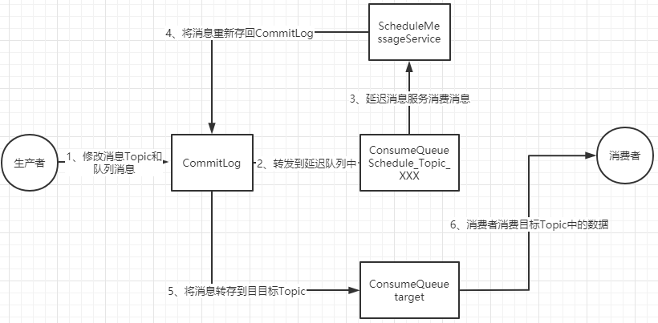

<!DOCTYPE html>
<html lang="en">
<head><meta name="generator" content="Hexo 3.9.0">
    <meta charset="utf-8">
    
    <title>
        RocketMQ生产者源码 |
        
        YingLong</title>
    
    
        <meta name="keywords" content="RocketMQ">
    
    <meta name="viewport" content="width=device-width, initial-scale=1, maximum-scale=1">
    <meta name="description" content="普通消息同步消息是通过当前线程直接调用DefaultMQProducerImpl的sendDefaultImpl方法，异步消息会将任务提交给异步线程池执行，最终同样是调用DefaultMQProducerImpl的sendDefaultImpl方法。发送消息前首先从本地缓存查找找，若本地缓存没有，则去NameServer上申请Topic。 然后通过MQFaultStrategy的selectOne">
<meta name="keywords" content="RocketMQ">
<meta property="og:type" content="article">
<meta property="og:title" content="RocketMQ生产者源码">
<meta property="og:url" content="https://yaoyinglong.github.io/Blog/Cloud/MQ/RocketMQ/RocketMQ生产者源码/index.html">
<meta property="og:site_name" content="YingLong">
<meta property="og:description" content="普通消息同步消息是通过当前线程直接调用DefaultMQProducerImpl的sendDefaultImpl方法，异步消息会将任务提交给异步线程池执行，最终同样是调用DefaultMQProducerImpl的sendDefaultImpl方法。发送消息前首先从本地缓存查找找，若本地缓存没有，则去NameServer上申请Topic。 然后通过MQFaultStrategy的selectOne">
<meta property="og:locale" content="en">
<meta property="og:image" content="https://yaoyinglong.github.io/images/MQ/RocketMQ事务消息.png">
<meta property="og:image" content="https://yaoyinglong.github.io/images/MQ/RocketMQ延迟消息.png">
<meta property="og:updated_time" content="2022-08-27T11:12:26.725Z">
<meta name="twitter:card" content="summary">
<meta name="twitter:title" content="RocketMQ生产者源码">
<meta name="twitter:description" content="普通消息同步消息是通过当前线程直接调用DefaultMQProducerImpl的sendDefaultImpl方法，异步消息会将任务提交给异步线程池执行，最终同样是调用DefaultMQProducerImpl的sendDefaultImpl方法。发送消息前首先从本地缓存查找找，若本地缓存没有，则去NameServer上申请Topic。 然后通过MQFaultStrategy的selectOne">
<meta name="twitter:image" content="https://yaoyinglong.github.io/images/MQ/RocketMQ事务消息.png">
    

    

    
        <link rel="icon" href="/favicon.ico">
    

    <link rel="stylesheet" href="/libs/font-awesome/css/font-awesome.min.css">
    <link rel="stylesheet" href="/libs/open-sans/styles.css">
    <link rel="stylesheet" href="/libs/source-code-pro/styles.css">

    <link rel="stylesheet" href="/css/style.css">
    <script src="/libs/jquery/2.1.3/jquery.min.js"></script>
    <script src="/libs/jquery/plugins/cookie/1.4.1/jquery.cookie.js"></script>
    
    
        <link rel="stylesheet" href="/libs/lightgallery/css/lightgallery.min.css">
    
    
        <link rel="stylesheet" href="/libs/justified-gallery/justifiedGallery.min.css">
    
    
    
    


</head>
</html>
<body>
<div id="container">
    <header id="header">
    <div id="header-main" class="header-inner">
        <div class="outer">
            <a href="/" id="logo">
                <i class="logo"></i>
                <span class="site-title">YingLong</span>
            </a>
            <nav id="main-nav">
                
                    <a class="main-nav-link" href="/">Home</a>
                
                    <a class="main-nav-link" href="/archives">Archives</a>
                
                    <a class="main-nav-link" href="/categories">Categories</a>
                
                    <a class="main-nav-link" href="/tags">Tags</a>
                
                    <a class="main-nav-link" href="/about">About</a>
                
                <a class="main-nav-link" href="javascript:trigger()">Reading</a>
            </nav>
            
            <div id="search-form-wrap">
    
        <form class="search-form">
            <input type="text" class="ins-search-input search-form-input" placeholder="Search">
            <button type="submit" class="search-form-submit"></button>
        </form>
        <div class="ins-search">
    <div class="ins-search-mask"></div>
    <div class="ins-search-container">
        <div class="ins-input-wrapper">
            <input type="text" class="ins-search-input" placeholder="Type something...">
            <span class="ins-close ins-selectable"><i class="fa fa-times-circle"></i></span>
        </div>
        <div class="ins-section-wrapper">
            <div class="ins-section-container"></div>
        </div>
    </div>
</div>
<script>
    (function (window) {
        var INSIGHT_CONFIG = {
            TRANSLATION: {
                POSTS: 'Posts',
                PAGES: 'Pages',
                CATEGORIES: 'Categories',
                TAGS: 'Tags',
                UNTITLED: '(Untitled)',
            },
            ROOT_URL: '/',
            CONTENT_URL: '/content.json',
        };
        window.INSIGHT_CONFIG = INSIGHT_CONFIG;
    })(window);
</script>
<script src="/js/insight.js"></script>
    
</div>
        </div>
    </div>
    <div id="main-nav-mobile" class="header-sub header-inner">
        <table class="menu outer">
            <tr>
                
                    <td><a class="main-nav-link" href="/">Home</a></td>
                
                    <td><a class="main-nav-link" href="/archives">Archives</a></td>
                
                    <td><a class="main-nav-link" href="/categories">Categories</a></td>
                
                    <td><a class="main-nav-link" href="/tags">Tags</a></td>
                
                    <td><a class="main-nav-link" href="/about">About</a></td>
                
                <td>
                    
    <div class="search-form">
        <input type="text" class="ins-search-input search-form-input" placeholder="Search">
    </div>

                </td>
            </tr>
        </table>
    </div>
</header>
<script type="text/javascript">
    var index = 0
    trigger = function () {
        if (index % 2 == 0) {
            $("#sidebar").css("display", "none");
            $("#main").css("float", "none");
        } else {
            $("#sidebar").css("display", "inline");
            $("#main").css("float", "left");
        }
        index++
    }
</script>

    <div class="outer">
        
        
            <aside id="sidebar">
    
        
    <div class="widget-wrap" id="categories">
        <h3 class="widget-title">
            <span>categories</span>
            &nbsp;
            <a id="allExpand" href="#">
                <i class="fa fa-angle-double-down fa-2x"></i>
            </a>
        </h3>

        
        
        
            <ul class="unstyled" id="tree">
                
                    <li class="directory open">
                        <a href="#" data-role="directory">
                            <i class="fa fa-folder-open"></i>
                            &nbsp;
                            Cloud
                        </a>
                        
            <ul class="unstyled" id="tree">
                
                    <li class="directory">
                        <a href="#" data-role="directory">
                            <i class="fa fa-folder"></i>
                            &nbsp;
                            Dubbo
                        </a>
                        
            <ul class="unstyled" id="tree">
                
                    <li class="file"><a href="/Blog/Cloud/Dubbo/Dubbo基础/">Dubbo基础</a></li>
                
                    <li class="file"><a href="/Blog/Cloud/Dubbo/Dubbo服务调用/">Dubbo服务调用</a></li>
                
                    <li class="file"><a href="/Blog/Cloud/Dubbo/SPI机制源码/">SPI机制源码</a></li>
                
                    <li class="file"><a href="/Blog/Cloud/Dubbo/Dubbo服务引入/">Dubbo服务引入</a></li>
                
                    <li class="file"><a href="/Blog/Cloud/Dubbo/Dubbo服务导出/">Dubbo服务导出</a></li>
                
                    <li class="file"><a href="/Blog/Cloud/Dubbo/Dubbo与Spring集成原理/">Dubbo与Spring集成原理</a></li>
                
            </ul>
        
                    </li>
                
                    <li class="directory">
                        <a href="#" data-role="directory">
                            <i class="fa fa-folder"></i>
                            &nbsp;
                            ELK
                        </a>
                        
            <ul class="unstyled" id="tree">
                
                    <li class="file"><a href="/Blog/Cloud/ELK/ElasticSearch基础/">ElasticSearch基础</a></li>
                
                    <li class="file"><a href="/Blog/Cloud/ELK/ElasticSearch实战/">ElasticSearch实战</a></li>
                
                    <li class="file"><a href="/Blog/Cloud/ELK/ElasticSearch进阶/">ElasticSearch进阶</a></li>
                
            </ul>
        
                    </li>
                
                    <li class="directory open">
                        <a href="#" data-role="directory">
                            <i class="fa fa-folder-open"></i>
                            &nbsp;
                            MQ
                        </a>
                        
            <ul class="unstyled" id="tree">
                
                    <li class="directory open">
                        <a href="#" data-role="directory">
                            <i class="fa fa-folder-open"></i>
                            &nbsp;
                            RocketMQ
                        </a>
                        
            <ul class="unstyled" id="tree">
                
                    <li class="file"><a href="/Blog/Cloud/MQ/RocketMQ/NameServer&Broker启动源码/">NameServer&Broker启动源码</a></li>
                
                    <li class="file"><a href="/Blog/Cloud/MQ/RocketMQ/RocketMQ高级特性/">RocketMQ高级特性</a></li>
                
                    <li class="file"><a href="/Blog/Cloud/MQ/RocketMQ/RocketMQ基础/">RocketMQ基础</a></li>
                
                    <li class="file"><a href="/Blog/Cloud/MQ/RocketMQ/RocketMQ消息存储源码/">RocketMQ消息存储源码</a></li>
                
                    <li class="file active"><a href="/Blog/Cloud/MQ/RocketMQ/RocketMQ生产者源码/">RocketMQ生产者源码</a></li>
                
                    <li class="file"><a href="/Blog/Cloud/MQ/RocketMQ/RocketMQ消费者源码/">RocketMQ消费者源码</a></li>
                
                    <li class="file"><a href="/Blog/Cloud/MQ/RocketMQ/Consumer启动源码/">Consumer启动源码</a></li>
                
                    <li class="file"><a href="/Blog/Cloud/MQ/RocketMQ/Producer启动源码/">Producer启动源码</a></li>
                
            </ul>
        
                    </li>
                
                    <li class="file"><a href="/Blog/Cloud/MQ/Kafka基础/">Kafka基础</a></li>
                
                    <li class="file"><a href="/Blog/Cloud/MQ/RabbitMQ高级特性及Spring集成/">RabbitMQ高级特性及Spring集成</a></li>
                
                    <li class="file"><a href="/Blog/Cloud/MQ/RabbitMQ基础/">RabbitMQ基础</a></li>
                
            </ul>
        
                    </li>
                
                    <li class="directory">
                        <a href="#" data-role="directory">
                            <i class="fa fa-folder"></i>
                            &nbsp;
                            Nacos
                        </a>
                        
            <ul class="unstyled" id="tree">
                
                    <li class="file"><a href="/Blog/Cloud/Nacos/Nacos Client原理/">Nacos Client原理</a></li>
                
                    <li class="file"><a href="/Blog/Cloud/Nacos/Nacos Server原理/">Nacos Server原理</a></li>
                
                    <li class="file"><a href="/Blog/Cloud/Nacos/Nacos问题总结/">Nacos问题总结</a></li>
                
                    <li class="file"><a href="/Blog/Cloud/Nacos/Nacos集群CP模式/">Nacos集群CP模式</a></li>
                
                    <li class="file"><a href="/Blog/Cloud/Nacos/Nacos配置中心Server原理/">Nacos配置中心Server原理</a></li>
                
                    <li class="file"><a href="/Blog/Cloud/Nacos/Nacos集群成员信息同步/">Nacos集群成员信息同步</a></li>
                
                    <li class="file"><a href="/Blog/Cloud/Nacos/Nacos集群注册服务同步/">Nacos集群注册服务同步</a></li>
                
                    <li class="file"><a href="/Blog/Cloud/Nacos/Nacos配置中心Client原理/">Nacos配置中心Client原理</a></li>
                
            </ul>
        
                    </li>
                
                    <li class="directory">
                        <a href="#" data-role="directory">
                            <i class="fa fa-folder"></i>
                            &nbsp;
                            Netty
                        </a>
                        
            <ul class="unstyled" id="tree">
                
                    <li class="file"><a href="/Blog/Cloud/Netty/IO模型基础/">IO模型基础</a></li>
                
                    <li class="file"><a href="/Blog/Cloud/Netty/Netty基础/">Netty基础</a></li>
                
                    <li class="file"><a href="/Blog/Cloud/Netty/Netty源码/">Netty源码</a></li>
                
                    <li class="file"><a href="/Blog/Cloud/Netty/Netty进阶/">Netty进阶</a></li>
                
            </ul>
        
                    </li>
                
                    <li class="directory">
                        <a href="#" data-role="directory">
                            <i class="fa fa-folder"></i>
                            &nbsp;
                            Redis
                        </a>
                        
            <ul class="unstyled" id="tree">
                
                    <li class="file"><a href="/Blog/Cloud/Redis/Redis分布式锁实现/">Redis分布式锁实现</a></li>
                
                    <li class="file"><a href="/Blog/Cloud/Redis/Redis缓存及性能优化/">Redis缓存及性能优化</a></li>
                
                    <li class="file"><a href="/Blog/Cloud/Redis/Redis基础/">Redis基础</a></li>
                
                    <li class="file"><a href="/Blog/Cloud/Redis/Redis集群架构/">Redis集群架构</a></li>
                
            </ul>
        
                    </li>
                
                    <li class="directory">
                        <a href="#" data-role="directory">
                            <i class="fa fa-folder"></i>
                            &nbsp;
                            Seata
                        </a>
                        
            <ul class="unstyled" id="tree">
                
                    <li class="file"><a href="/Blog/Cloud/Seata/Seata集成原理/">Seata集成原理</a></li>
                
                    <li class="file"><a href="/Blog/Cloud/Seata/Seata分布式事务原理/">Seata分布式事务原理</a></li>
                
            </ul>
        
                    </li>
                
                    <li class="directory">
                        <a href="#" data-role="directory">
                            <i class="fa fa-folder"></i>
                            &nbsp;
                            Sentinel
                        </a>
                        
            <ul class="unstyled" id="tree">
                
                    <li class="file"><a href="/Blog/Cloud/Sentinel/Sentinel配置持久化/">Sentinel配置持久化</a></li>
                
                    <li class="file"><a href="/Blog/Cloud/Sentinel/Sentinel规则发布源码/">Sentinel规则发布源码</a></li>
                
                    <li class="file"><a href="/Blog/Cloud/Sentinel/常见限流算法/">常见限流算法</a></li>
                
                    <li class="file"><a href="/Blog/Cloud/Sentinel/Sentinel限流熔断降级源码/">Sentinel限流熔断降级源码</a></li>
                
            </ul>
        
                    </li>
                
                    <li class="directory">
                        <a href="#" data-role="directory">
                            <i class="fa fa-folder"></i>
                            &nbsp;
                            Zookeeper
                        </a>
                        
            <ul class="unstyled" id="tree">
                
                    <li class="file"><a href="/Blog/Cloud/Zookeeper/Zookeeper基础/">Zookeeper基础</a></li>
                
                    <li class="file"><a href="/Blog/Cloud/Zookeeper/Zookeeper客户端之ZAB/">Zookeeper客户端之ZAB</a></li>
                
                    <li class="file"><a href="/Blog/Cloud/Zookeeper/Zookeeper集群Leader选举/">Zookeeper集群Leader选举</a></li>
                
                    <li class="file"><a href="/Blog/Cloud/Zookeeper/Zookeeper服务端之ZAB/">Zookeeper服务端之ZAB</a></li>
                
            </ul>
        
                    </li>
                
                    <li class="directory">
                        <a href="#" data-role="directory">
                            <i class="fa fa-folder"></i>
                            &nbsp;
                            网关
                        </a>
                        
            <ul class="unstyled" id="tree">
                
                    <li class="file"><a href="/Blog/Cloud/网关/Gateway源码/">Gateway源码</a></li>
                
            </ul>
        
                    </li>
                
                    <li class="file"><a href="/Blog/Cloud/Feign集成原理/">Feign集成原理</a></li>
                
                    <li class="file"><a href="/Blog/Cloud/Canal基础/">Canal基础</a></li>
                
                    <li class="file"><a href="/Blog/Cloud/Ribbon集成原理/">Ribbon集成原理</a></li>
                
                    <li class="file"><a href="/Blog/Cloud/分布式事务解决方案/">分布式事务解决方案</a></li>
                
                    <li class="file"><a href="/Blog/Cloud/分布式系统常见问题/">分布式系统常见问题</a></li>
                
                    <li class="file"><a href="/Blog/Cloud/秒杀问题及解决方案/">秒杀问题及解决方案</a></li>
                
            </ul>
        
                    </li>
                
                    <li class="directory">
                        <a href="#" data-role="directory">
                            <i class="fa fa-folder"></i>
                            &nbsp;
                            DB
                        </a>
                        
            <ul class="unstyled" id="tree">
                
                    <li class="file"><a href="/Blog/DB/Explain工具/">Explain工具</a></li>
                
                    <li class="file"><a href="/Blog/DB/MongoDB基础/">MongoDB基础</a></li>
                
                    <li class="file"><a href="/Blog/DB/MVCC与BufferPool缓存机制/">MVCC与BufferPool缓存机制</a></li>
                
                    <li class="file"><a href="/Blog/DB/MySQL主从架构/">MySQL主从架构</a></li>
                
                    <li class="file"><a href="/Blog/DB/MySQL事务隔离级别与锁机制/">MySQL事务隔离级别与锁机制</a></li>
                
                    <li class="file"><a href="/Blog/DB/MySQL内部组件结构/">MySQL内部组件结构</a></li>
                
                    <li class="file"><a href="/Blog/DB/MySQL基础/">MySQL基础</a></li>
                
                    <li class="file"><a href="/Blog/DB/MySQL常用SQL总结/">MySQL常用SQL总结</a></li>
                
                    <li class="file"><a href="/Blog/DB/ShardingSphere基础/">ShardingSphere基础</a></li>
                
                    <li class="file"><a href="/Blog/DB/分库分表/">分库分表</a></li>
                
                    <li class="file"><a href="/Blog/DB/索引优化一/">索引优化一</a></li>
                
                    <li class="file"><a href="/Blog/DB/索引优化三/">索引优化三</a></li>
                
                    <li class="file"><a href="/Blog/DB/索引优化二/">索引优化二</a></li>
                
                    <li class="file"><a href="/Blog/DB/索引的原理与使用/">索引的原理与使用</a></li>
                
            </ul>
        
                    </li>
                
                    <li class="directory">
                        <a href="#" data-role="directory">
                            <i class="fa fa-folder"></i>
                            &nbsp;
                            Java
                        </a>
                        
            <ul class="unstyled" id="tree">
                
                    <li class="directory">
                        <a href="#" data-role="directory">
                            <i class="fa fa-folder"></i>
                            &nbsp;
                            VM
                        </a>
                        
            <ul class="unstyled" id="tree">
                
                    <li class="file"><a href="/Blog/Java/VM/JVM内存池/">JVM内存池</a></li>
                
                    <li class="file"><a href="/Blog/Java/VM/Minor&Major&Full GC/">Minor&Major&Full GC</a></li>
                
                    <li class="file"><a href="/Blog/Java/VM/Class文件结构/">Class文件结构</a></li>
                
                    <li class="file"><a href="/Blog/Java/VM/Java内存区域/">Java内存区域</a></li>
                
                    <li class="file"><a href="/Blog/Java/VM/OutOfMemoryError异常/">OOM异常实验</a></li>
                
                    <li class="file"><a href="/Blog/Java/VM/内存非配与回收策略/">内存分配与回收策略</a></li>
                
                    <li class="file"><a href="/Blog/Java/VM/垃圾收集器/">垃圾收集器</a></li>
                
                    <li class="file"><a href="/Blog/Java/VM/堆中对象分配&布局&访问/">堆中对象分配&布局&访问</a></li>
                
                    <li class="file"><a href="/Blog/Java/VM/垃圾收集算法/">垃圾收集算法及实现</a></li>
                
                    <li class="file"><a href="/Blog/Java/VM/字节码指令/">字节码指令</a></li>
                
                    <li class="file"><a href="/Blog/Java/VM/字节码指令手册/">字节码指令手册</a></li>
                
                    <li class="file"><a href="/Blog/Java/VM/对象是否存活/">对象是否存活</a></li>
                
                    <li class="file"><a href="/Blog/Java/VM/方法调用/">方法调用</a></li>
                
                    <li class="file"><a href="/Blog/Java/VM/属性表集合/">属性表集合</a></li>
                
                    <li class="file"><a href="/Blog/Java/VM/常量池/">常量池</a></li>
                
                    <li class="file"><a href="/Blog/Java/VM/理解GC日志/">理解GC日志</a></li>
                
                    <li class="file"><a href="/Blog/Java/VM/类加载器/">类加载器</a></li>
                
                    <li class="file"><a href="/Blog/Java/VM/运行时栈帧结构/">运行时栈帧结构</a></li>
                
                    <li class="file"><a href="/Blog/Java/VM/类加载过程/">类加载过程</a></li>
                
            </ul>
        
                    </li>
                
                    <li class="directory">
                        <a href="#" data-role="directory">
                            <i class="fa fa-folder"></i>
                            &nbsp;
                            基础
                        </a>
                        
            <ul class="unstyled" id="tree">
                
                    <li class="file"><a href="/Blog/Java/基础/HashMap源码分析JDK8/">HashMap源码分析JDK8</a></li>
                
                    <li class="file"><a href="/Blog/Java/基础/Java实用工具库/">Java实用工具库</a></li>
                
                    <li class="file"><a href="/Blog/Java/基础/HashMap源码分析JDK7/">HashMap源码分析JDK7</a></li>
                
                    <li class="file"><a href="/Blog/Java/基础/lambda常用总结/">lambda常用总结</a></li>
                
                    <li class="file"><a href="/Blog/Java/基础/位运算/">位运算</a></li>
                
                    <li class="file"><a href="/Blog/Java/基础/PriorityQueue源码/">PriorityQueue源码</a></li>
                
                    <li class="file"><a href="/Blog/Java/基础/动态代理/">动态代理</a></li>
                
                    <li class="file"><a href="/Blog/Java/基础/反射基础/">反射基础</a></li>
                
                    <li class="file"><a href="/Blog/Java/基础/时间及日期总结/">Java8时间及日期</a></li>
                
                    <li class="file"><a href="/Blog/Java/基础/注解实现及应用/">注解实现及应用</a></li>
                
            </ul>
        
                    </li>
                
                    <li class="directory">
                        <a href="#" data-role="directory">
                            <i class="fa fa-folder"></i>
                            &nbsp;
                            工具
                        </a>
                        
            <ul class="unstyled" id="tree">
                
                    <li class="file"><a href="/Blog/Java/工具/Java中调用Groovy脚本/">Java中调用Groovy脚本</a></li>
                
                    <li class="file"><a href="/Blog/Java/工具/JAVA实用工具/">JAVA实用工具</a></li>
                
                    <li class="file"><a href="/Blog/Java/工具/国密SM2/">国密SM2</a></li>
                
                    <li class="file"><a href="/Blog/Java/工具/国密SM4/">国密SM4</a></li>
                
            </ul>
        
                    </li>
                
                    <li class="directory">
                        <a href="#" data-role="directory">
                            <i class="fa fa-folder"></i>
                            &nbsp;
                            并发
                        </a>
                        
            <ul class="unstyled" id="tree">
                
                    <li class="file"><a href="/Blog/Java/并发/BlockingQueue阻塞队列二/">BlockingQueue阻塞队列二</a></li>
                
                    <li class="file"><a href="/Blog/Java/并发/AQS与ReentrantLock/">AQS与ReentrantLock</a></li>
                
                    <li class="file"><a href="/Blog/Java/并发/Callable与Future/">Callable与Future</a></li>
                
                    <li class="file"><a href="/Blog/Java/并发/ConcurrentHashMap源码JDK7/">ConcurrentHashMap源码JDK7</a></li>
                
                    <li class="file"><a href="/Blog/Java/并发/Condition原理/">Condition原理</a></li>
                
                    <li class="file"><a href="/Blog/Java/并发/Java内存模型/">Java内存模型</a></li>
                
                    <li class="file"><a href="/Blog/Java/并发/ConcurrentHashMap源码JDK8/">ConcurrentHashMap源码JDK8</a></li>
                
                    <li class="file"><a href="/Blog/Java/并发/Java与线程/">Java与线程</a></li>
                
                    <li class="file"><a href="/Blog/Java/并发/BlockingQueue阻塞队列一/">BlockingQueue阻塞队列一</a></li>
                
                    <li class="file"><a href="/Blog/Java/并发/ReentrantReadWriteLock原理/">ReentrantReadWriteLock原理</a></li>
                
                    <li class="file"><a href="/Blog/Java/并发/ScheduledThreadPoolExecutor/">ScheduledThreadPoolExecutor</a></li>
                
                    <li class="file"><a href="/Blog/Java/并发/Synchronized总结/">Synchronized总结</a></li>
                
                    <li class="file"><a href="/Blog/Java/并发/ThreadLocal原理/">ThreadLocal原理</a></li>
                
                    <li class="file"><a href="/Blog/Java/并发/原子性、可见性、有序性/">原子性、可见性、有序性</a></li>
                
                    <li class="file"><a href="/Blog/Java/并发/Unsafe应用/">Unsafe应用</a></li>
                
                    <li class="file"><a href="/Blog/Java/并发/Volatile原理/">Volatile原理</a></li>
                
                    <li class="file"><a href="/Blog/Java/并发/线程安全/">线程安全</a></li>
                
                    <li class="file"><a href="/Blog/Java/并发/线程安全实现方式/">线程安全实现方式</a></li>
                
                    <li class="file"><a href="/Blog/Java/并发/同步工具类/">同步工具类</a></li>
                
                    <li class="file"><a href="/Blog/Java/并发/锁优化/">锁优化</a></li>
                
                    <li class="file"><a href="/Blog/Java/并发/线程池原理/">线程池原理</a></li>
                
                    <li class="file"><a href="/Blog/Java/并发/操作系统底层/">操作系统底层</a></li>
                
            </ul>
        
                    </li>
                
                    <li class="file"><a href="/Blog/Java/JVM内存参数设置/">JVM内存参数设置</a></li>
                
                    <li class="file"><a href="/Blog/Java/JVM调优工具/">JVM调优工具</a></li>
                
                    <li class="file"><a href="/Blog/Java/JVM整体概览/">JVM整体概览</a></li>
                
                    <li class="file"><a href="/Blog/Java/JVM调优思路/">JVM调优思路</a></li>
                
            </ul>
        
                    </li>
                
                    <li class="directory">
                        <a href="#" data-role="directory">
                            <i class="fa fa-folder"></i>
                            &nbsp;
                            Maven
                        </a>
                        
            <ul class="unstyled" id="tree">
                
                    <li class="file"><a href="/Blog/Maven/Maven仓库/">Maven仓库</a></li>
                
                    <li class="file"><a href="/Blog/Maven/Maven Assembly标签全解/">Maven Assembly标签全解</a></li>
                
                    <li class="file"><a href="/Blog/Maven/Maven基础/">Maven基础</a></li>
                
                    <li class="file"><a href="/Blog/Maven/Maven加密JAR包/">Maven加密JAR包</a></li>
                
                    <li class="file"><a href="/Blog/Maven/Maven个性化打包/">Maven个性化打包</a></li>
                
                    <li class="file"><a href="/Blog/Maven/Maven属性/">Maven属性</a></li>
                
                    <li class="file"><a href="/Blog/Maven/Maven常用/">Maven常用</a></li>
                
                    <li class="file"><a href="/Blog/Maven/Maven常用工具/">Maven常用工具</a></li>
                
                    <li class="file"><a href="/Blog/Maven/Maven常见问题总结/">Maven常见问题总结</a></li>
                
                    <li class="file"><a href="/Blog/Maven/Maven常用插件/">Maven常用插件</a></li>
                
                    <li class="file"><a href="/Blog/Maven/Maven插件基础/">Maven插件基础</a></li>
                
                    <li class="file"><a href="/Blog/Maven/Maven插件编写/">Maven插件编写</a></li>
                
                    <li class="file"><a href="/Blog/Maven/Maven标签全解/">Maven标签全解</a></li>
                
                    <li class="file"><a href="/Blog/Maven/Maven生命周期/">Maven生命周期</a></li>
                
                    <li class="file"><a href="/Blog/Maven/Maven聚合与继承/">Maven聚合与继承</a></li>
                
            </ul>
        
                    </li>
                
                    <li class="directory">
                        <a href="#" data-role="directory">
                            <i class="fa fa-folder"></i>
                            &nbsp;
                            Spring
                        </a>
                        
            <ul class="unstyled" id="tree">
                
                    <li class="directory">
                        <a href="#" data-role="directory">
                            <i class="fa fa-folder"></i>
                            &nbsp;
                            SpringBoot
                        </a>
                        
            <ul class="unstyled" id="tree">
                
                    <li class="file"><a href="/Blog/Spring/SpringBoot/SpringBoot Jar包启动原理/">SpringBoot Jar包启动原理</a></li>
                
                    <li class="file"><a href="/Blog/Spring/SpringBoot/SpringBoot资源加载/">SpringBoot资源加载</a></li>
                
                    <li class="file"><a href="/Blog/Spring/SpringBoot/SpringBoot自动装配原理/">SpringBoot自动装配原理</a></li>
                
                    <li class="file"><a href="/Blog/Spring/SpringBoot/SpringBoot启动原理/">SpringBoot启动原理</a></li>
                
            </ul>
        
                    </li>
                
                    <li class="file"><a href="/Blog/Spring/AOP切面类解析/">AOP切面类解析</a></li>
                
                    <li class="file"><a href="/Blog/Spring/AOP创建代理与调用/">AOP创建代理与调用</a></li>
                
                    <li class="file"><a href="/Blog/Spring/BeanDefinition解析注册/">BeanDefinition解析注册</a></li>
                
                    <li class="file"><a href="/Blog/Spring/Bean的生命周期/">Bean的生命周期</a></li>
                
                    <li class="file"><a href="/Blog/Spring/Hystrix总结/">Hystrix总结</a></li>
                
                    <li class="file"><a href="/Blog/Spring/Bean的加载过程/">Bean的加载过程</a></li>
                
                    <li class="file"><a href="/Blog/Spring/IoC容器/">IoC容器</a></li>
                
                    <li class="file"><a href="/Blog/Spring/Spring Gzip压缩/">Spring Gzip压缩</a></li>
                
                    <li class="file"><a href="/Blog/Spring/IoC容器加载过程/">IoC容器加载过程</a></li>
                
                    <li class="file"><a href="/Blog/Spring/SpringMvc异步/">SpringMvc异步原理及实现</a></li>
                
                    <li class="file"><a href="/Blog/Spring/SpringMvc加载机制/">SpringMvc加载机制</a></li>
                
                    <li class="file"><a href="/Blog/Spring/Spring初始化扩展/">Spring初始化扩展</a></li>
                
                    <li class="file"><a href="/Blog/Spring/Spring整体架构/">Spring整体架构</a></li>
                
                    <li class="file"><a href="/Blog/Spring/SpringMvc处理分发请求原理/">SpringMvc处理分发请求原理</a></li>
                
                    <li class="file"><a href="/Blog/Spring/Spring线程池跨线程数据共享/">Spring线程池跨线程数据共享</a></li>
                
                    <li class="file"><a href="/Blog/Spring/事件监听器/">事件监听器</a></li>
                
                    <li class="file"><a href="/Blog/Spring/事务解析原理/">事务解析原理</a></li>
                
                    <li class="file"><a href="/Blog/Spring/事务调用原理/">事务调用原理</a></li>
                
            </ul>
        
                    </li>
                
                    <li class="directory">
                        <a href="#" data-role="directory">
                            <i class="fa fa-folder"></i>
                            &nbsp;
                            Test
                        </a>
                        
            <ul class="unstyled" id="tree">
                
                    <li class="file"><a href="/Blog/Test/IT测试总结/">IT测试总结</a></li>
                
                    <li class="file"><a href="/Blog/Test/UT测试总结/">UT测试总结</a></li>
                
                    <li class="file"><a href="/Blog/Test/JMeter日常总结/">JMeter日常总结</a></li>
                
                    <li class="file"><a href="/Blog/Test/LoadRunner日常总结/">LoadRunner日常总结</a></li>
                
            </ul>
        
                    </li>
                
                    <li class="directory">
                        <a href="#" data-role="directory">
                            <i class="fa fa-folder"></i>
                            &nbsp;
                            中间件
                        </a>
                        
            <ul class="unstyled" id="tree">
                
                    <li class="directory">
                        <a href="#" data-role="directory">
                            <i class="fa fa-folder"></i>
                            &nbsp;
                            Mybatis
                        </a>
                        
            <ul class="unstyled" id="tree">
                
                    <li class="file"><a href="/Blog/中间件/Mybatis/Mybatis缓存原理/">Mybatis缓存原理</a></li>
                
                    <li class="file"><a href="/Blog/中间件/Mybatis/Mybatis执行SQL原理/">Mybatis执行SQL原理</a></li>
                
                    <li class="file"><a href="/Blog/中间件/Mybatis/Mybatis集成到Spring原理/">Mybatis集成到Spring原理</a></li>
                
                    <li class="file"><a href="/Blog/中间件/Mybatis/Mybatis配置文件解析原理/">Mybatis配置文件解析原理</a></li>
                
            </ul>
        
                    </li>
                
                    <li class="directory">
                        <a href="#" data-role="directory">
                            <i class="fa fa-folder"></i>
                            &nbsp;
                            Tomcat
                        </a>
                        
            <ul class="unstyled" id="tree">
                
                    <li class="file"><a href="/Blog/中间件/Tomcat/BIO和NIO底层原理对比/">BIO和NIO底层原理对比</a></li>
                
                    <li class="file"><a href="/Blog/中间件/Tomcat/Tomcat处理响应过程/">Tomcat处理响应过程</a></li>
                
                    <li class="file"><a href="/Blog/中间件/Tomcat/Tomcat启动过程/">Tomcat启动过程</a></li>
                
                    <li class="file"><a href="/Blog/中间件/Tomcat/Tomcat处理请求过程/">Tomcat处理请求过程</a></li>
                
                    <li class="file"><a href="/Blog/中间件/Tomcat/Tomcat工作原理/">Tomcat工作原理</a></li>
                
                    <li class="file"><a href="/Blog/中间件/Tomcat/Tomcat热部署热加载/">Tomcat热部署热加载</a></li>
                
                    <li class="file"><a href="/Blog/中间件/Tomcat/Tomcat整体架构/">Tomcat整体架构</a></li>
                
            </ul>
        
                    </li>
                
            </ul>
        
                    </li>
                
                    <li class="directory">
                        <a href="#" data-role="directory">
                            <i class="fa fa-folder"></i>
                            &nbsp;
                            云原生
                        </a>
                        
            <ul class="unstyled" id="tree">
                
                    <li class="file"><a href="/Blog/云原生/Docker基础/">Docker基础</a></li>
                
                    <li class="file"><a href="/Blog/云原生/Docker Compose基础/">Docker Compose基础</a></li>
                
                    <li class="file"><a href="/Blog/云原生/Docker搭建Prometheus&Grafana/">Docker搭建Prometheus&Grafana</a></li>
                
                    <li class="file"><a href="/Blog/云原生/Kubernetes基础/">Kubernetes基础</a></li>
                
            </ul>
        
                    </li>
                
                    <li class="directory">
                        <a href="#" data-role="directory">
                            <i class="fa fa-folder"></i>
                            &nbsp;
                            杂记
                        </a>
                        
            <ul class="unstyled" id="tree">
                
                    <li class="directory">
                        <a href="#" data-role="directory">
                            <i class="fa fa-folder"></i>
                            &nbsp;
                            Git
                        </a>
                        
            <ul class="unstyled" id="tree">
                
                    <li class="file"><a href="/Blog/杂记/Git/GIt基本概念/">Git基本概念</a></li>
                
                    <li class="file"><a href="/Blog/杂记/Git/GIt常用命令/">Git常用命令</a></li>
                
                    <li class="file"><a href="/Blog/杂记/Git/分支管理理解/">分支管理理解</a></li>
                
            </ul>
        
                    </li>
                
                    <li class="directory">
                        <a href="#" data-role="directory">
                            <i class="fa fa-folder"></i>
                            &nbsp;
                            Linux
                        </a>
                        
            <ul class="unstyled" id="tree">
                
                    <li class="file"><a href="/Blog/杂记/Linux/Linux常用命令/">Linux常用命令</a></li>
                
                    <li class="file"><a href="/Blog/杂记/Linux/Linux基础/">Linux基础</a></li>
                
                    <li class="file"><a href="/Blog/杂记/Linux/Shell基础/">Shell基础</a></li>
                
                    <li class="file"><a href="/Blog/杂记/Linux/Linux磁盘与文件系统/">Linux磁盘与文件系统</a></li>
                
                    <li class="file"><a href="/Blog/杂记/Linux/零拷贝技术/">零拷贝技术</a></li>
                
                    <li class="file"><a href="/Blog/杂记/Linux/Linux非常用命令/">Linux非常用命令</a></li>
                
                    <li class="file"><a href="/Blog/杂记/Linux/文件&文件系统压缩打包备份/">Linux压缩打包备份</a></li>
                
                    <li class="file"><a href="/Blog/杂记/Linux/Vim编辑器/">Vim编辑器</a></li>
                
            </ul>
        
                    </li>
                
                    <li class="directory">
                        <a href="#" data-role="directory">
                            <i class="fa fa-folder"></i>
                            &nbsp;
                            协议族
                        </a>
                        
            <ul class="unstyled" id="tree">
                
                    <li class="file"><a href="/Blog/杂记/协议族/TCPIP四层&五层模型/">TCP/IP四层&五层模型</a></li>
                
                    <li class="file"><a href="/Blog/杂记/协议族/以太网/">以太网</a></li>
                
                    <li class="file"><a href="/Blog/杂记/协议族/网络基础知识/">网络基础知识</a></li>
                
                    <li class="file"><a href="/Blog/杂记/协议族/地址解析协议/">地址解析协议ARP</a></li>
                
                    <li class="file"><a href="/Blog/杂记/协议族/TCP&UDP协议/">TCP&UDP协议</a></li>
                
                    <li class="file"><a href="/Blog/杂记/协议族/HTTP协议/">HTTP协议</a></li>
                
                    <li class="file"><a href="/Blog/杂记/协议族/HTTPs协议/">HTTPs协议</a></li>
                
            </ul>
        
                    </li>
                
                    <li class="directory">
                        <a href="#" data-role="directory">
                            <i class="fa fa-folder"></i>
                            &nbsp;
                            工具
                        </a>
                        
            <ul class="unstyled" id="tree">
                
                    <li class="file"><a href="/Blog/杂记/工具/SonarQube配置总结/">SonarQube配置总结</a></li>
                
                    <li class="file"><a href="/Blog/杂记/工具/IDEA快捷的使用/">IDEA的快捷使用</a></li>
                
                    <li class="file"><a href="/Blog/杂记/工具/Win实用工具/">Win实用工具</a></li>
                
                    <li class="file"><a href="/Blog/杂记/工具/XSD使用总结/">XSD实用总结</a></li>
                
            </ul>
        
                    </li>
                
            </ul>
        
                    </li>
                
                    <li class="directory">
                        <a href="#" data-role="directory">
                            <i class="fa fa-folder"></i>
                            &nbsp;
                            算法
                        </a>
                        
            <ul class="unstyled" id="tree">
                
                    <li class="file"><a href="/Blog/算法/二叉搜索树/">二叉搜索树</a></li>
                
                    <li class="file"><a href="/Blog/算法/图基础/">图基础</a></li>
                
                    <li class="file"><a href="/Blog/算法/基础算法/">基础算法</a></li>
                
                    <li class="file"><a href="/Blog/算法/平衡二叉树/">平衡二叉树</a></li>
                
                    <li class="file"><a href="/Blog/算法/排序算法/">排序算法</a></li>
                
                    <li class="file"><a href="/Blog/算法/树基础/">树基础</a></li>
                
                    <li class="file"><a href="/Blog/算法/经典算法-动态规划/">经典算法-动态规划</a></li>
                
                    <li class="file"><a href="/Blog/算法/经典算法-栈/">经典算法-栈</a></li>
                
                    <li class="file"><a href="/Blog/算法/经典算法-链表/">经典算法-链表</a></li>
                
                    <li class="file"><a href="/Blog/算法/经典算法/">经典算法</a></li>
                
            </ul>
        
                    </li>
                
                    <li class="directory">
                        <a href="#" data-role="directory">
                            <i class="fa fa-folder"></i>
                            &nbsp;
                            设计模式
                        </a>
                        
            <ul class="unstyled" id="tree">
                
                    <li class="directory">
                        <a href="#" data-role="directory">
                            <i class="fa fa-folder"></i>
                            &nbsp;
                            创建型模式
                        </a>
                        
            <ul class="unstyled" id="tree">
                
                    <li class="file"><a href="/Blog/设计模式/创建型模式/单例模式/">单例模式</a></li>
                
                    <li class="file"><a href="/Blog/设计模式/创建型模式/原型模式/">原型模式</a></li>
                
                    <li class="file"><a href="/Blog/设计模式/创建型模式/工厂模式/">工厂模式</a></li>
                
                    <li class="file"><a href="/Blog/设计模式/创建型模式/建造者模式/">建造者模式</a></li>
                
            </ul>
        
                    </li>
                
                    <li class="directory">
                        <a href="#" data-role="directory">
                            <i class="fa fa-folder"></i>
                            &nbsp;
                            结构型模式
                        </a>
                        
            <ul class="unstyled" id="tree">
                
                    <li class="file"><a href="/Blog/设计模式/结构型模式/外观模式/">外观模式</a></li>
                
                    <li class="file"><a href="/Blog/设计模式/结构型模式/代理模式/">代理模式</a></li>
                
                    <li class="file"><a href="/Blog/设计模式/结构型模式/组合模式/">组合模式</a></li>
                
                    <li class="file"><a href="/Blog/设计模式/结构型模式/装饰模式/">装饰模式</a></li>
                
                    <li class="file"><a href="/Blog/设计模式/结构型模式/适配器模式/">适配器模式</a></li>
                
                    <li class="file"><a href="/Blog/设计模式/结构型模式/享元模式/">享元模式</a></li>
                
                    <li class="file"><a href="/Blog/设计模式/结构型模式/桥梁模式/">桥梁模式</a></li>
                
            </ul>
        
                    </li>
                
                    <li class="directory">
                        <a href="#" data-role="directory">
                            <i class="fa fa-folder"></i>
                            &nbsp;
                            行为型模式
                        </a>
                        
            <ul class="unstyled" id="tree">
                
                    <li class="file"><a href="/Blog/设计模式/行为型模式/命令模式/">命令模式</a></li>
                
                    <li class="file"><a href="/Blog/设计模式/行为型模式/备忘录模式/">备忘录模式</a></li>
                
                    <li class="file"><a href="/Blog/设计模式/行为型模式/模板方法模式/">模板方法模式</a></li>
                
                    <li class="file"><a href="/Blog/设计模式/行为型模式/状态模式/">状态模式</a></li>
                
                    <li class="file"><a href="/Blog/设计模式/行为型模式/中介者模式/">中介者模式</a></li>
                
                    <li class="file"><a href="/Blog/设计模式/行为型模式/策略模式/">策略模式</a></li>
                
                    <li class="file"><a href="/Blog/设计模式/行为型模式/观察者模式/">观察者模式</a></li>
                
                    <li class="file"><a href="/Blog/设计模式/行为型模式/责任链模式/">责任链模式</a></li>
                
                    <li class="file"><a href="/Blog/设计模式/行为型模式/迭代器模式/">迭代器模式</a></li>
                
                    <li class="file"><a href="/Blog/设计模式/行为型模式/访问者模式/">访问者模式</a></li>
                
                    <li class="file"><a href="/Blog/设计模式/行为型模式/解释器模式/">解释器模式</a></li>
                
            </ul>
        
                    </li>
                
                    <li class="file"><a href="/Blog/设计模式/SOLID基本原则/">SOLID基本原则</a></li>
                
                    <li class="file"><a href="/Blog/设计模式/设计模式概览/">设计模式概览</a></li>
                
                    <li class="file"><a href="/Blog/设计模式/设计模式对比/">设计模式对比</a></li>
                
            </ul>
        
                    </li>
                
                    <li class="directory">
                        <a href="#" data-role="directory">
                            <i class="fa fa-folder"></i>
                            &nbsp;
                            语言
                        </a>
                        
            <ul class="unstyled" id="tree">
                
                    <li class="directory">
                        <a href="#" data-role="directory">
                            <i class="fa fa-folder"></i>
                            &nbsp;
                            CPP
                        </a>
                        
            <ul class="unstyled" id="tree">
                
                    <li class="file"><a href="/Blog/语言/CPP/IO流/">IO流</a></li>
                
                    <li class="file"><a href="/Blog/语言/CPP/CPP基础/">CPP基础</a></li>
                
            </ul>
        
                    </li>
                
                    <li class="directory">
                        <a href="#" data-role="directory">
                            <i class="fa fa-folder"></i>
                            &nbsp;
                            Go
                        </a>
                        
            <ul class="unstyled" id="tree">
                
                    <li class="file"><a href="/Blog/语言/Go/Go基础/">Go基础</a></li>
                
            </ul>
        
                    </li>
                
                    <li class="directory">
                        <a href="#" data-role="directory">
                            <i class="fa fa-folder"></i>
                            &nbsp;
                            Python
                        </a>
                        
            <ul class="unstyled" id="tree">
                
                    <li class="file"><a href="/Blog/语言/Python/Excel文件数据抽取/">Excel文件数据抽取</a></li>
                
            </ul>
        
                    </li>
                
                    <li class="directory">
                        <a href="#" data-role="directory">
                            <i class="fa fa-folder"></i>
                            &nbsp;
                            前端
                        </a>
                        
            <ul class="unstyled" id="tree">
                
                    <li class="file"><a href="/Blog/语言/前端/JavaScript基础/">JavaScript基础</a></li>
                
                    <li class="file"><a href="/Blog/语言/前端/TypeScript基础/">TypeScript基础</a></li>
                
            </ul>
        
                    </li>
                
            </ul>
        
                    </li>
                
                    <li class="file"><a href="/Blog/index/"></a></li>
                
            </ul>
        
    </div>
    <script>
        $(document).ready(function () {
            var iconFolderOpenClass = 'fa-folder-open';
            var iconFolderCloseClass = 'fa-folder';
            var iconAllExpandClass = 'fa-angle-double-down';
            var iconAllPackClass = 'fa-angle-double-up';
            // Handle directory-tree expansion:
            // 左键单独展开目录
            $(document).on('click', '#categories a[data-role="directory"]', function (event) {
                event.preventDefault();

                var icon = $(this).children('.fa');
                var expanded = icon.hasClass(iconFolderOpenClass);
                var subtree = $(this).siblings('ul');
                icon.removeClass(iconFolderOpenClass).removeClass(iconFolderCloseClass);
                if (expanded) {
                    if (typeof subtree != 'undefined') {
                        subtree.slideUp({duration: 100});
                    }
                    icon.addClass(iconFolderCloseClass);
                } else {
                    if (typeof subtree != 'undefined') {
                        subtree.slideDown({duration: 100});
                    }
                    icon.addClass(iconFolderOpenClass);
                }
            });
            // 右键展开下属所有目录
            $('#categories a[data-role="directory"]').bind("contextmenu", function (event) {
                event.preventDefault();

                var icon = $(this).children('.fa');
                var expanded = icon.hasClass(iconFolderOpenClass);
                var listNode = $(this).siblings('ul');
                var subtrees = $.merge(listNode.find('li ul'), listNode);
                var icons = $.merge(listNode.find('.fa'), icon);
                icons.removeClass(iconFolderOpenClass).removeClass(iconFolderCloseClass);
                if (expanded) {
                    subtrees.slideUp({duration: 100});
                    icons.addClass(iconFolderCloseClass);
                } else {
                    subtrees.slideDown({duration: 100});
                    icons.addClass(iconFolderOpenClass);
                }
            })
            // 展开关闭所有目录按钮
            $(document).on('click', '#allExpand', function (event) {
                event.preventDefault();

                var icon = $(this).children('.fa');
                var expanded = icon.hasClass(iconAllExpandClass);
                icon.removeClass(iconAllExpandClass).removeClass(iconAllPackClass);
                if (expanded) {
                    $('#sidebar .fa.fa-folder').removeClass('fa-folder').addClass('fa-folder-open')
                    $('#categories li ul').slideDown({duration: 100});
                    icon.addClass(iconAllPackClass);
                } else {
                    $('#sidebar .fa.fa-folder-open').removeClass('fa-folder-open').addClass('fa-folder')
                    $('#categories li ul').slideUp({duration: 100});
                    icon.addClass(iconAllExpandClass);
                }
            });
        });
    </script>

    
</aside>
<div id="toTop" class="fa fa-angle-up"></div>

        
        <section id="main"><article id="post-Cloud/MQ/RocketMQ/RocketMQ生产者源码" class="article article-type-post" itemscope itemprop="blogPost">
    <div class="article-inner">
        
        
            <header class="article-header">
                
                    <div class="article-meta">
                        
    <div class="article-category">
        <i class="fa fa-folder"></i>
        <a class="article-category-link" href="/categories/Cloud/">Cloud</a><i class="fa fa-angle-right"></i><a class="article-category-link" href="/categories/Cloud/MQ/">MQ</a><i class="fa fa-angle-right"></i><a class="article-category-link" href="/categories/Cloud/MQ/RocketMQ/">RocketMQ</a>
    </div>

                        
    <div class="article-tag">
        <i class="fa fa-tag"></i>
        <a class="tag-link" href="/tags/RocketMQ/">RocketMQ</a>
    </div>

                        
    <div class="article-date">
        <i class="fa fa-calendar"></i>
        <a href="/Blog/Cloud/MQ/RocketMQ/RocketMQ生产者源码/">
            <time datetime="2021-12-01T16:00:00.000Z" itemprop="datePublished">2021-12-02</time>
        </a>
    </div>


                        
                    </div>
                
                
    
        <h1 class="article-title" itemprop="name">
            RocketMQ生产者源码
        </h1>
    

            </header>
        
        
        <div class="article-entry" itemprop="articleBody">
            
            
                    
            
            
                <h4 id="普通消息"><a href="#普通消息" class="headerlink" title="普通消息"></a>普通消息</h4><p><strong>同步</strong>消息是通过当前线程直接调用<strong><code>DefaultMQProducerImpl</code></strong>的<strong><code>sendDefaultImpl</code></strong>方法，<strong>异步</strong>消息会将任务提交给异步线程池执行，最终同样是调用<strong><code>DefaultMQProducerImpl</code></strong>的<strong><code>sendDefaultImpl</code></strong>方法。发送消息前首先从本地缓存查找找，若本地缓存没有，则去<strong><code>NameServer</code></strong>上申请<strong><code>Topic</code></strong>。</p>
<p>然后通过<strong><code>MQFaultStrategy</code></strong>的<strong><code>selectOneMessageQueue</code></strong>获取具体的具体要将消息发送到哪一个队列中，Producer选择<strong><code>MessageQueue</code></strong>方法是<strong>消息数自增对队列数取模</strong>，可通过<strong><code>sendLatencyFaultEnable</code></strong>参数开启Broker<strong>故障延迟机制</strong>，发送消息失败后一定时间内不在往同一个Queue重复发送的机制，在<strong><code>LatencyFaultToleranceImpl</code></strong>中维护了<strong>曾经发送失败的Broker列表到<code>faultItemTable</code></strong>中。</p>
<figure class="highlight java"><table><tr><td class="gutter"><pre><span class="line">1</span><br><span class="line">2</span><br><span class="line">3</span><br><span class="line">4</span><br><span class="line">5</span><br><span class="line">6</span><br><span class="line">7</span><br><span class="line">8</span><br><span class="line">9</span><br><span class="line">10</span><br><span class="line">11</span><br><span class="line">12</span><br><span class="line">13</span><br><span class="line">14</span><br><span class="line">15</span><br><span class="line">16</span><br><span class="line">17</span><br><span class="line">18</span><br><span class="line">19</span><br><span class="line">20</span><br><span class="line">21</span><br><span class="line">22</span><br><span class="line">23</span><br><span class="line">24</span><br><span class="line">25</span><br><span class="line">26</span><br><span class="line">27</span><br><span class="line">28</span><br><span class="line">29</span><br><span class="line">30</span><br><span class="line">31</span><br><span class="line">32</span><br><span class="line">33</span><br><span class="line">34</span><br><span class="line">35</span><br><span class="line">36</span><br><span class="line">37</span><br><span class="line">38</span><br><span class="line">39</span><br><span class="line">40</span><br><span class="line">41</span><br><span class="line">42</span><br><span class="line">43</span><br><span class="line">44</span><br><span class="line">45</span><br><span class="line">46</span><br><span class="line">47</span><br><span class="line">48</span><br><span class="line">49</span><br><span class="line">50</span><br><span class="line">51</span><br><span class="line">52</span><br><span class="line">53</span><br><span class="line">54</span><br><span class="line">55</span><br><span class="line">56</span><br><span class="line">57</span><br><span class="line">58</span><br><span class="line">59</span><br><span class="line">60</span><br><span class="line">61</span><br><span class="line">62</span><br><span class="line">63</span><br><span class="line">64</span><br><span class="line">65</span><br><span class="line">66</span><br><span class="line">67</span><br><span class="line">68</span><br><span class="line">69</span><br><span class="line">70</span><br><span class="line">71</span><br><span class="line">72</span><br><span class="line">73</span><br><span class="line">74</span><br><span class="line">75</span><br><span class="line">76</span><br><span class="line">77</span><br><span class="line">78</span><br><span class="line">79</span><br><span class="line">80</span><br><span class="line">81</span><br><span class="line">82</span><br><span class="line">83</span><br><span class="line">84</span><br><span class="line">85</span><br><span class="line">86</span><br><span class="line">87</span><br><span class="line">88</span><br><span class="line">89</span><br><span class="line">90</span><br><span class="line">91</span><br><span class="line">92</span><br><span class="line">93</span><br><span class="line">94</span><br><span class="line">95</span><br><span class="line">96</span><br><span class="line">97</span><br><span class="line">98</span><br><span class="line">99</span><br><span class="line">100</span><br><span class="line">101</span><br><span class="line">102</span><br><span class="line">103</span><br><span class="line">104</span><br><span class="line">105</span><br><span class="line">106</span><br><span class="line">107</span><br><span class="line">108</span><br><span class="line">109</span><br><span class="line">110</span><br><span class="line">111</span><br><span class="line">112</span><br><span class="line">113</span><br><span class="line">114</span><br><span class="line">115</span><br><span class="line">116</span><br><span class="line">117</span><br><span class="line">118</span><br><span class="line">119</span><br><span class="line">120</span><br><span class="line">121</span><br><span class="line">122</span><br><span class="line">123</span><br><span class="line">124</span><br><span class="line">125</span><br><span class="line">126</span><br><span class="line">127</span><br><span class="line">128</span><br><span class="line">129</span><br><span class="line">130</span><br><span class="line">131</span><br><span class="line">132</span><br><span class="line">133</span><br><span class="line">134</span><br><span class="line">135</span><br><span class="line">136</span><br><span class="line">137</span><br><span class="line">138</span><br><span class="line">139</span><br><span class="line">140</span><br><span class="line">141</span><br><span class="line">142</span><br><span class="line">143</span><br><span class="line">144</span><br><span class="line">145</span><br><span class="line">146</span><br><span class="line">147</span><br><span class="line">148</span><br><span class="line">149</span><br><span class="line">150</span><br><span class="line">151</span><br><span class="line">152</span><br><span class="line">153</span><br><span class="line">154</span><br><span class="line">155</span><br><span class="line">156</span><br><span class="line">157</span><br><span class="line">158</span><br><span class="line">159</span><br><span class="line">160</span><br><span class="line">161</span><br><span class="line">162</span><br><span class="line">163</span><br><span class="line">164</span><br><span class="line">165</span><br><span class="line">166</span><br><span class="line">167</span><br><span class="line">168</span><br><span class="line">169</span><br><span class="line">170</span><br><span class="line">171</span><br><span class="line">172</span><br><span class="line">173</span><br><span class="line">174</span><br><span class="line">175</span><br><span class="line">176</span><br><span class="line">177</span><br></pre></td><td class="code"><pre><span class="line"><span class="keyword">public</span> <span class="class"><span class="keyword">class</span> <span class="title">DefaultMQProducer</span> <span class="keyword">extends</span> <span class="title">ClientConfig</span> <span class="keyword">implements</span> <span class="title">MQProducer</span> </span>&#123;</span><br><span class="line">    <span class="function"><span class="keyword">public</span> SendResult <span class="title">send</span><span class="params">(Message msg)</span> <span class="keyword">throws</span> MQClientException, RemotingException, MQBrokerException, InterruptedException </span>&#123;</span><br><span class="line">        <span class="comment">// 检查Topic长度和格式，以及不能包含在不允许发布消息的列表中，消息体不能为空且不能超过4M</span></span><br><span class="line">        Validators.checkMessage(msg, <span class="keyword">this</span>);</span><br><span class="line">        msg.setTopic(withNamespace(msg.getTopic()));</span><br><span class="line">        <span class="keyword">return</span> <span class="keyword">this</span>.defaultMQProducerImpl.send(msg); <span class="comment">// 同步发送消息</span></span><br><span class="line">    &#125;</span><br><span class="line">    <span class="function"><span class="keyword">public</span> <span class="keyword">void</span> <span class="title">send</span><span class="params">(Message msg, SendCallback sendCallback)</span> <span class="keyword">throws</span> MQClientException, RemotingException, InterruptedException </span>&#123;</span><br><span class="line">        msg.setTopic(withNamespace(msg.getTopic()));</span><br><span class="line">        <span class="keyword">this</span>.defaultMQProducerImpl.send(msg, sendCallback); <span class="comment">// 异步发送消息</span></span><br><span class="line">    &#125;</span><br><span class="line">&#125;</span><br><span class="line"><span class="keyword">public</span> <span class="class"><span class="keyword">class</span> <span class="title">DefaultMQProducerImpl</span> <span class="keyword">implements</span> <span class="title">MQProducerInner</span> </span>&#123;</span><br><span class="line">    <span class="comment">// 同步消息</span></span><br><span class="line">    <span class="function"><span class="keyword">public</span> SendResult <span class="title">send</span><span class="params">(Message msg, <span class="keyword">long</span> timeout)</span> <span class="keyword">throws</span> MQClientException, RemotingException, MQBrokerException, InterruptedException </span>&#123;</span><br><span class="line">        <span class="keyword">return</span> <span class="keyword">this</span>.sendDefaultImpl(msg, CommunicationMode.SYNC, <span class="keyword">null</span>, timeout);</span><br><span class="line">    &#125;</span><br><span class="line">    <span class="comment">// 异步消息</span></span><br><span class="line">    <span class="function"><span class="keyword">public</span> <span class="keyword">void</span> <span class="title">send</span><span class="params">(<span class="keyword">final</span> Message msg, <span class="keyword">final</span> SendCallback sendCallback, <span class="keyword">final</span> <span class="keyword">long</span> timeout)</span> <span class="keyword">throws</span> MQClientException, RemotingException, InterruptedException </span>&#123;</span><br><span class="line">        <span class="keyword">final</span> <span class="keyword">long</span> beginStartTime = System.currentTimeMillis();</span><br><span class="line">        ExecutorService executor = <span class="keyword">this</span>.getAsyncSenderExecutor();</span><br><span class="line">        <span class="keyword">try</span> &#123;</span><br><span class="line">            executor.submit(<span class="keyword">new</span> Runnable() &#123; <span class="comment">// 将消费发送任务提交给线程池</span></span><br><span class="line">                <span class="meta">@Override</span> <span class="function"><span class="keyword">public</span> <span class="keyword">void</span> <span class="title">run</span><span class="params">()</span> </span>&#123;</span><br><span class="line">                    <span class="keyword">long</span> costTime = System.currentTimeMillis() - beginStartTime;</span><br><span class="line">                    <span class="keyword">if</span> (timeout &gt; costTime) &#123; <span class="comment">// timeout默认为3s</span></span><br><span class="line">                        <span class="keyword">try</span> &#123;</span><br><span class="line">                            sendDefaultImpl(msg, CommunicationMode.ASYNC, sendCallback, timeout - costTime);</span><br><span class="line">                        &#125; <span class="keyword">catch</span> (Exception e) &#123;</span><br><span class="line">                            sendCallback.onException(e); <span class="comment">// 调用回调方法</span></span><br><span class="line">                        &#125;</span><br><span class="line">                    &#125; <span class="keyword">else</span> &#123; <span class="comment">// 调用回调方法</span></span><br><span class="line">                        sendCallback.onException(<span class="keyword">new</span> RemotingTooMuchRequestException(<span class="string">"DEFAULT ASYNC send call timeout"</span>));</span><br><span class="line">                    &#125;</span><br><span class="line">                &#125;</span><br><span class="line">            &#125;);</span><br><span class="line">        &#125; <span class="keyword">catch</span> (RejectedExecutionException e) &#123;</span><br><span class="line">            <span class="keyword">throw</span> <span class="keyword">new</span> MQClientException(<span class="string">"executor rejected "</span>, e);</span><br><span class="line">        &#125;</span><br><span class="line">    &#125;</span><br><span class="line">    <span class="function"><span class="keyword">private</span> SendResult <span class="title">sendDefaultImpl</span><span class="params">(Message msg, <span class="keyword">final</span> CommunicationMode communicationMode, <span class="keyword">final</span> SendCallback sendCallback, <span class="keyword">final</span> <span class="keyword">long</span> timeout)</span> <span class="keyword">throws</span> MQClientException, RemotingException, MQBrokerException, InterruptedException </span>&#123;</span><br><span class="line">        <span class="keyword">this</span>.makeSureStateOK(); <span class="comment">// 确定当前Client是正常RUNNING的，否则抛出异常</span></span><br><span class="line">        Validators.checkMessage(msg, <span class="keyword">this</span>.defaultMQProducer); <span class="comment">// 检查Topic(0, 127]和消息体(0, 4M]</span></span><br><span class="line">        <span class="keyword">final</span> <span class="keyword">long</span> invokeID = random.nextLong();</span><br><span class="line">        <span class="keyword">long</span> beginTimestampFirst = System.currentTimeMillis();</span><br><span class="line">        <span class="keyword">long</span> beginTimestampPrev = beginTimestampFirst;</span><br><span class="line">        <span class="keyword">long</span> endTimestamp = beginTimestampFirst;</span><br><span class="line">        <span class="comment">// 生产者获取Topic的公开信息</span></span><br><span class="line">        TopicPublishInfo topicPublishInfo = <span class="keyword">this</span>.tryToFindTopicPublishInfo(msg.getTopic());</span><br><span class="line">        <span class="keyword">if</span> (topicPublishInfo != <span class="keyword">null</span> &amp;&amp; topicPublishInfo.ok()) &#123;</span><br><span class="line">            <span class="keyword">boolean</span> callTimeout = <span class="keyword">false</span>;</span><br><span class="line">            MessageQueue mq = <span class="keyword">null</span>;</span><br><span class="line">            Exception exception = <span class="keyword">null</span>;</span><br><span class="line">            SendResult sendResult = <span class="keyword">null</span>;</span><br><span class="line">            <span class="keyword">int</span> timesTotal = communicationMode == CommunicationMode.SYNC ? <span class="number">1</span> + <span class="keyword">this</span>.defaultMQProducer.getRetryTimesWhenSendFailed() : <span class="number">1</span>;</span><br><span class="line">            <span class="keyword">int</span> times = <span class="number">0</span>;</span><br><span class="line">            String[] brokersSent = <span class="keyword">new</span> String[timesTotal];</span><br><span class="line">            <span class="keyword">for</span> (; times &lt; timesTotal; times++) &#123; <span class="comment">// 重试次数，异步默认重试2次共3次，同步不重试共1次</span></span><br><span class="line">                String lastBrokerName = <span class="keyword">null</span> == mq ? <span class="keyword">null</span> : mq.getBrokerName();</span><br><span class="line">                <span class="comment">// Producer计算把消息发到哪个MessageQueue中，自增然后取模</span></span><br><span class="line">                MessageQueue mqSelected = <span class="keyword">this</span>.selectOneMessageQueue(topicPublishInfo, lastBrokerName);</span><br><span class="line">                <span class="keyword">if</span> (mqSelected != <span class="keyword">null</span>) &#123;</span><br><span class="line">                    mq = mqSelected;</span><br><span class="line">                    brokersSent[times] = mq.getBrokerName(); <span class="comment">// 根据MessageQueue去获取目标节点的信息。</span></span><br><span class="line">                    <span class="keyword">try</span> &#123;</span><br><span class="line">                        beginTimestampPrev = System.currentTimeMillis();</span><br><span class="line">                        <span class="keyword">if</span> (times &gt; <span class="number">0</span>) &#123; <span class="comment">// 重新发送期间使用命名空间重置主题</span></span><br><span class="line">                            msg.setTopic(<span class="keyword">this</span>.defaultMQProducer.withNamespace(msg.getTopic()));</span><br><span class="line">                        &#125;</span><br><span class="line">                        <span class="keyword">long</span> costTime = beginTimestampPrev - beginTimestampFirst;</span><br><span class="line">                        <span class="keyword">if</span> (timeout &lt; costTime) &#123;  <span class="comment">// 判断是否超时，默认3s</span></span><br><span class="line">                            callTimeout = <span class="keyword">true</span>;</span><br><span class="line">                            <span class="keyword">break</span>; <span class="comment">// 若超时</span></span><br><span class="line">                        &#125;</span><br><span class="line">                        <span class="comment">// 实际发送消息的方法</span></span><br><span class="line">                        sendResult = <span class="keyword">this</span>.sendKernelImpl(msg, mq, communicationMode, sendCallback, topicPublishInfo, timeout - costTime);</span><br><span class="line">                        endTimestamp = System.currentTimeMillis();</span><br><span class="line">                        <span class="keyword">this</span>.updateFaultItem(mq.getBrokerName(), endTimestamp - beginTimestampPrev, <span class="keyword">false</span>);</span><br><span class="line">                        <span class="keyword">switch</span> (communicationMode) &#123;</span><br><span class="line">                            <span class="keyword">case</span> ASYNC:</span><br><span class="line">                                <span class="keyword">return</span> <span class="keyword">null</span>; <span class="comment">// 异步发送返回null</span></span><br><span class="line">                            <span class="keyword">case</span> ONEWAY:</span><br><span class="line">                                <span class="keyword">return</span> <span class="keyword">null</span>; <span class="comment">// 单向发送返回null</span></span><br><span class="line">                            <span class="keyword">case</span> SYNC:</span><br><span class="line">                                <span class="keyword">if</span> (sendResult.getSendStatus() != SendStatus.SEND_OK) &#123;</span><br><span class="line">                                    <span class="keyword">if</span> (<span class="keyword">this</span>.defaultMQProducer.isRetryAnotherBrokerWhenNotStoreOK()) &#123;</span><br><span class="line">                                        <span class="keyword">continue</span>; <span class="comment">// 若重试则继续，否则直接返回结果</span></span><br><span class="line">                                    &#125;</span><br><span class="line">                                &#125;</span><br><span class="line">                                <span class="keyword">return</span> sendResult;</span><br><span class="line">                            <span class="keyword">default</span>:</span><br><span class="line">                                <span class="keyword">break</span>;</span><br><span class="line">                        &#125;</span><br><span class="line">                    &#125;</span><br><span class="line">                &#125; <span class="keyword">else</span> &#123;</span><br><span class="line">                    <span class="keyword">break</span>;</span><br><span class="line">                &#125;</span><br><span class="line">            &#125;</span><br><span class="line">            <span class="keyword">if</span> (sendResult != <span class="keyword">null</span>) &#123;</span><br><span class="line">                <span class="keyword">return</span> sendResult;</span><br><span class="line">            &#125;</span><br><span class="line">            info += FAQUrl.suggestTodo(FAQUrl.SEND_MSG_FAILED);</span><br><span class="line">            MQClientException mqClientException = <span class="keyword">new</span> MQClientException(info, exception);</span><br><span class="line">            <span class="keyword">if</span> (callTimeout) &#123;</span><br><span class="line">                <span class="keyword">throw</span> <span class="keyword">new</span> RemotingTooMuchRequestException(<span class="string">"sendDefaultImpl call timeout"</span>);</span><br><span class="line">            &#125;</span><br><span class="line">            <span class="keyword">throw</span> mqClientException;</span><br><span class="line">        &#125;</span><br><span class="line">        validateNameServerSetting();</span><br><span class="line">        <span class="keyword">throw</span> <span class="keyword">new</span> MQClientException(<span class="string">"No route info of this topic: "</span> + msg.getTopic() + FAQUrl.suggestTodo(FAQUrl.NO_TOPIC_ROUTE_INFO), <span class="keyword">null</span>).setResponseCode(ClientErrorCode.NOT_FOUND_TOPIC_EXCEPTION);</span><br><span class="line">    &#125;</span><br><span class="line">    <span class="function"><span class="keyword">public</span> MessageQueue <span class="title">selectOneMessageQueue</span><span class="params">(<span class="keyword">final</span> TopicPublishInfo tpInfo, <span class="keyword">final</span> String lastBrokerName)</span> </span>&#123;</span><br><span class="line">        <span class="keyword">return</span> <span class="keyword">this</span>.mqFaultStrategy.selectOneMessageQueue(tpInfo, lastBrokerName);</span><br><span class="line">    &#125;</span><br><span class="line">&#125;</span><br><span class="line"><span class="keyword">public</span> <span class="class"><span class="keyword">class</span> <span class="title">MQFaultStrategy</span> </span>&#123;</span><br><span class="line">    <span class="function"><span class="keyword">public</span> MessageQueue <span class="title">selectOneMessageQueue</span><span class="params">(<span class="keyword">final</span> TopicPublishInfo tpInfo, <span class="keyword">final</span> String lastBrokerName)</span> </span>&#123;</span><br><span class="line">        <span class="comment">// sendLatencyFaultEnable默认关闭，Broker故障延迟机制，表示一种发送消息失败后一定时间内不在往同一个Queue重复发送的机制</span></span><br><span class="line">        <span class="keyword">if</span> (<span class="keyword">this</span>.sendLatencyFaultEnable) &#123;</span><br><span class="line">            <span class="keyword">try</span> &#123;</span><br><span class="line">                <span class="comment">// Producer选择MessageQueue的方法是自增然后取模。</span></span><br><span class="line">                <span class="keyword">int</span> index = tpInfo.getSendWhichQueue().getAndIncrement();</span><br><span class="line">                <span class="keyword">for</span> (<span class="keyword">int</span> i = <span class="number">0</span>; i &lt; tpInfo.getMessageQueueList().size(); i++) &#123;</span><br><span class="line">                    <span class="keyword">int</span> pos = Math.abs(index++) % tpInfo.getMessageQueueList().size();</span><br><span class="line">                    <span class="keyword">if</span> (pos &lt; <span class="number">0</span>)</span><br><span class="line">                        pos = <span class="number">0</span>;</span><br><span class="line">                    MessageQueue mq = tpInfo.getMessageQueueList().get(pos);</span><br><span class="line">                    <span class="comment">// Broker轮询，尽量将请求平均分配给不同的Broker</span></span><br><span class="line">                    <span class="keyword">if</span> (latencyFaultTolerance.isAvailable(mq.getBrokerName())) &#123;</span><br><span class="line">                        <span class="keyword">if</span> (<span class="keyword">null</span> == lastBrokerName || mq.getBrokerName().equals(lastBrokerName))</span><br><span class="line">                            <span class="keyword">return</span> mq;</span><br><span class="line">                    &#125;</span><br><span class="line">                &#125;</span><br><span class="line">                <span class="keyword">final</span> String notBestBroker = latencyFaultTolerance.pickOneAtLeast();</span><br><span class="line">                <span class="keyword">int</span> writeQueueNums = tpInfo.getQueueIdByBroker(notBestBroker);</span><br><span class="line">                <span class="keyword">if</span> (writeQueueNums &gt; <span class="number">0</span>) &#123; </span><br><span class="line">                    <span class="keyword">final</span> MessageQueue mq = tpInfo.selectOneMessageQueue();<span class="comment">// 自增取模计算</span></span><br><span class="line">                    <span class="keyword">if</span> (notBestBroker != <span class="keyword">null</span>) &#123;</span><br><span class="line">                        mq.setBrokerName(notBestBroker);</span><br><span class="line">                        mq.setQueueId(tpInfo.getSendWhichQueue().getAndIncrement() % writeQueueNums);</span><br><span class="line">                    &#125;</span><br><span class="line">                    <span class="keyword">return</span> mq;</span><br><span class="line">                &#125; <span class="keyword">else</span> &#123;</span><br><span class="line">                    latencyFaultTolerance.remove(notBestBroker);</span><br><span class="line">                &#125;</span><br><span class="line">            &#125;</span><br><span class="line">            <span class="keyword">return</span> tpInfo.selectOneMessageQueue(); <span class="comment">// 自增取模计算</span></span><br><span class="line">        &#125;</span><br><span class="line">        <span class="keyword">return</span> tpInfo.selectOneMessageQueue(lastBrokerName); <span class="comment">// 自增取模计算</span></span><br><span class="line">    &#125;</span><br><span class="line">&#125;</span><br><span class="line"><span class="keyword">public</span> <span class="class"><span class="keyword">class</span> <span class="title">TopicPublishInfo</span> </span>&#123; <span class="comment">//选择MessageQueue的方式：递增取模</span></span><br><span class="line">    <span class="function"><span class="keyword">public</span> MessageQueue <span class="title">selectOneMessageQueue</span><span class="params">()</span> </span>&#123;</span><br><span class="line">        <span class="keyword">int</span> index = <span class="keyword">this</span>.sendWhichQueue.getAndIncrement();</span><br><span class="line">        <span class="keyword">int</span> pos = Math.abs(index) % <span class="keyword">this</span>.messageQueueList.size();</span><br><span class="line">        <span class="keyword">if</span> (pos &lt; <span class="number">0</span>)</span><br><span class="line">            pos = <span class="number">0</span>;</span><br><span class="line">        <span class="keyword">return</span> <span class="keyword">this</span>.messageQueueList.get(pos);</span><br><span class="line">    &#125;</span><br><span class="line">    <span class="function"><span class="keyword">public</span> MessageQueue <span class="title">selectOneMessageQueue</span><span class="params">(<span class="keyword">final</span> String lastBrokerName)</span> </span>&#123;</span><br><span class="line">        <span class="keyword">if</span> (lastBrokerName == <span class="keyword">null</span>) &#123;</span><br><span class="line">            <span class="keyword">return</span> selectOneMessageQueue();</span><br><span class="line">        &#125; <span class="keyword">else</span> &#123;</span><br><span class="line">            <span class="keyword">int</span> index = <span class="keyword">this</span>.sendWhichQueue.getAndIncrement();</span><br><span class="line">            <span class="keyword">for</span> (<span class="keyword">int</span> i = <span class="number">0</span>; i &lt; <span class="keyword">this</span>.messageQueueList.size(); i++) &#123;</span><br><span class="line">                <span class="keyword">int</span> pos = Math.abs(index++) % <span class="keyword">this</span>.messageQueueList.size();</span><br><span class="line">                <span class="keyword">if</span> (pos &lt; <span class="number">0</span>)</span><br><span class="line">                    pos = <span class="number">0</span>;</span><br><span class="line">                MessageQueue mq = <span class="keyword">this</span>.messageQueueList.get(pos);</span><br><span class="line">                <span class="keyword">if</span> (!mq.getBrokerName().equals(lastBrokerName)) &#123;</span><br><span class="line">                    <span class="keyword">return</span> mq;</span><br><span class="line">                &#125;</span><br><span class="line">            &#125;</span><br><span class="line">            <span class="keyword">return</span> selectOneMessageQueue();</span><br><span class="line">        &#125;</span><br><span class="line">    &#125;</span><br><span class="line">&#125;</span><br></pre></td></tr></table></figure>
<p>首先从本地缓存找，若本地缓存没有则调用<strong><code>MQClientAPIImpl</code></strong>的<strong><code>getTopicRouteInfoFromNameServer</code>只传入Topic的方法</strong>，然后调用<strong><code>updateTopicRouteInfoFromNameServer</code></strong>方法，注意这里传入的<strong><code>isDefault</code></strong>为<strong><code>false</code></strong>，且<strong><code>DefaultMQProducer</code></strong>为<strong><code>null</code></strong>，此时会通过<strong>当前真实的<code>Topic</code></strong>调用<strong><code>MQClientAPIImpl</code></strong>的<strong><code>getTopicRouteInfoFromNameServer</code></strong>方法，去<strong><code>NameServer</code></strong>的<strong><code>Topic</code>路由表<code>topicQueueTable</code></strong>中查询该Topic对应的队列信息和Broker列表，若该Topic不存在肯定是查不到的；</p>
<p><strong><code>tryToFindTopicPublishInfo</code></strong>会再次判断<strong><code>haveTopicRouterInfo</code></strong>是否为false，或Producer的<strong><code>MessageQueue</code>列表</strong>是否为空，第一次肯定都为false，然后会再次调用<strong><code>updateTopicRouteInfoFromNameServer</code></strong>方法，与第一次调用不同的是，这次调用传入的<strong><code>isDefault</code></strong>为<strong><code>true</code></strong>，且<strong><code>DefaultMQProducer</code></strong>不为<strong><code>null</code></strong>，此时会调用<strong><code>MQClientAPIImpl</code></strong>的<strong><code>getDefaultTopicRouteInfoFromNameServer</code></strong>方法，注意此时传入的<strong>并非是真实的<code>Topic</code></strong>，而是从<strong><code>DefaultMQProducer</code></strong>的<strong><code>getCreateTopicKey</code></strong>方法获取的<strong><code>TBW102</code></strong>，<strong><code>TBW102</code></strong>在<strong>每个<code>Broker</code>启动时就创建</strong>了，且在向<strong><code>NameServer</code></strong>注册和<strong>发送心跳</strong>时都会同步到NameServer的<strong>Topic路由表<code>topicQueueTable</code></strong>中，故该方法肯定是能正常返回包含<strong><code>queueDatas</code></strong>和<strong><code>brokerDatas</code></strong>的<strong><code>TopicRouteData</code></strong>，且会<strong>重置队列数</strong>，默认为<strong><code>4</code></strong>；</p>
<p>然后对获取到的最新的Topic对应的路由信息与本地的对比，通过<strong><code>topicRouteDataIsChange</code></strong>判断是否发生改变，若发生改变则更新<strong><code>brokerAddrTable</code></strong>中缓存的信息，然后在通过<strong><code>topicRouteData2TopicPublishInfo</code></strong>方法遍历从NameServer中获取的<strong><code>TopicRouteData</code>的队列列表<code>queueDatas</code></strong>，通过真正的<strong><code>Topic</code></strong>和远程获取队列中的<strong><code>Broker</code></strong>地址创建<strong><code>MessageQueue</code></strong>，并保存到<strong><code>TopicPublishInfo</code></strong>中，然后将<strong><code>TopicPublishInfo</code></strong>更新到<strong><code>MQProducerInner</code></strong>的<strong><code>topicPublishInfoTable</code></strong>缓存中供后续使用，<strong>特别注意的是这里并没有将新建的<code>Topic</code>注册到<code>Broker</code>上</strong>，真正注册到Topic是在发送消息到Broker上时在<strong><code>SendMessageProcessor</code></strong>的<strong><code>asyncSendMessage</code></strong>方法中通过<strong><code>preSend</code></strong>方法中<strong><code>msgCheck</code></strong>方法检查，若不存在则创建，并注册到<strong><code>NameServer</code></strong>。</p>
<p><strong><code>MQClientAPIImpl</code></strong>的<strong><code>getDefaultTopicRouteInfoFromNameServer</code></strong>方法和<strong><code>getTopicRouteInfoFromNameServer</code></strong>最终都是调用<strong><code>getTopicRouteInfoFromNameServer</code></strong>方法，最终通过<strong><code>RequestCode.GET_ROUTEINFO_BY_TOPIC</code></strong>关联调用<strong><code>NameServer</code></strong>的<strong><code>DefaultRequestProcessor</code></strong>的<strong><code>getRouteInfoByTopic</code></strong>方法获取<strong><code>Topic</code></strong>路由信息；</p>
<figure class="highlight java"><table><tr><td class="gutter"><pre><span class="line">1</span><br><span class="line">2</span><br><span class="line">3</span><br><span class="line">4</span><br><span class="line">5</span><br><span class="line">6</span><br><span class="line">7</span><br><span class="line">8</span><br><span class="line">9</span><br><span class="line">10</span><br><span class="line">11</span><br><span class="line">12</span><br><span class="line">13</span><br><span class="line">14</span><br><span class="line">15</span><br><span class="line">16</span><br><span class="line">17</span><br><span class="line">18</span><br><span class="line">19</span><br><span class="line">20</span><br><span class="line">21</span><br><span class="line">22</span><br><span class="line">23</span><br><span class="line">24</span><br><span class="line">25</span><br><span class="line">26</span><br><span class="line">27</span><br><span class="line">28</span><br><span class="line">29</span><br><span class="line">30</span><br><span class="line">31</span><br><span class="line">32</span><br><span class="line">33</span><br><span class="line">34</span><br><span class="line">35</span><br><span class="line">36</span><br><span class="line">37</span><br><span class="line">38</span><br><span class="line">39</span><br><span class="line">40</span><br><span class="line">41</span><br><span class="line">42</span><br><span class="line">43</span><br><span class="line">44</span><br><span class="line">45</span><br><span class="line">46</span><br><span class="line">47</span><br><span class="line">48</span><br><span class="line">49</span><br><span class="line">50</span><br><span class="line">51</span><br><span class="line">52</span><br><span class="line">53</span><br><span class="line">54</span><br><span class="line">55</span><br><span class="line">56</span><br><span class="line">57</span><br><span class="line">58</span><br><span class="line">59</span><br><span class="line">60</span><br><span class="line">61</span><br><span class="line">62</span><br><span class="line">63</span><br><span class="line">64</span><br><span class="line">65</span><br><span class="line">66</span><br><span class="line">67</span><br><span class="line">68</span><br><span class="line">69</span><br><span class="line">70</span><br><span class="line">71</span><br><span class="line">72</span><br><span class="line">73</span><br><span class="line">74</span><br><span class="line">75</span><br><span class="line">76</span><br><span class="line">77</span><br><span class="line">78</span><br><span class="line">79</span><br><span class="line">80</span><br><span class="line">81</span><br><span class="line">82</span><br><span class="line">83</span><br><span class="line">84</span><br><span class="line">85</span><br><span class="line">86</span><br><span class="line">87</span><br><span class="line">88</span><br><span class="line">89</span><br><span class="line">90</span><br><span class="line">91</span><br><span class="line">92</span><br><span class="line">93</span><br><span class="line">94</span><br><span class="line">95</span><br><span class="line">96</span><br><span class="line">97</span><br><span class="line">98</span><br><span class="line">99</span><br><span class="line">100</span><br><span class="line">101</span><br><span class="line">102</span><br><span class="line">103</span><br><span class="line">104</span><br><span class="line">105</span><br><span class="line">106</span><br><span class="line">107</span><br><span class="line">108</span><br><span class="line">109</span><br><span class="line">110</span><br><span class="line">111</span><br><span class="line">112</span><br><span class="line">113</span><br><span class="line">114</span><br><span class="line">115</span><br><span class="line">116</span><br><span class="line">117</span><br><span class="line">118</span><br><span class="line">119</span><br><span class="line">120</span><br><span class="line">121</span><br><span class="line">122</span><br><span class="line">123</span><br><span class="line">124</span><br><span class="line">125</span><br><span class="line">126</span><br><span class="line">127</span><br><span class="line">128</span><br><span class="line">129</span><br><span class="line">130</span><br><span class="line">131</span><br><span class="line">132</span><br><span class="line">133</span><br><span class="line">134</span><br><span class="line">135</span><br><span class="line">136</span><br><span class="line">137</span><br><span class="line">138</span><br><span class="line">139</span><br><span class="line">140</span><br><span class="line">141</span><br><span class="line">142</span><br><span class="line">143</span><br><span class="line">144</span><br><span class="line">145</span><br><span class="line">146</span><br><span class="line">147</span><br><span class="line">148</span><br><span class="line">149</span><br><span class="line">150</span><br></pre></td><td class="code"><pre><span class="line"><span class="keyword">public</span> <span class="class"><span class="keyword">class</span> <span class="title">DefaultMQProducerImpl</span> <span class="keyword">implements</span> <span class="title">MQProducerInner</span> </span>&#123;</span><br><span class="line">    <span class="comment">// 由表的过程都是先从本地缓存找，本地缓存没有，就去NameServer上申请。</span></span><br><span class="line">    <span class="function"><span class="keyword">private</span> TopicPublishInfo <span class="title">tryToFindTopicPublishInfo</span><span class="params">(<span class="keyword">final</span> String topic)</span> </span>&#123;</span><br><span class="line">        TopicPublishInfo topicPublishInfo = <span class="keyword">this</span>.topicPublishInfoTable.get(topic);</span><br><span class="line">        <span class="keyword">if</span> (<span class="keyword">null</span> == topicPublishInfo || !topicPublishInfo.ok()) &#123;</span><br><span class="line">            <span class="keyword">this</span>.topicPublishInfoTable.putIfAbsent(topic, <span class="keyword">new</span> TopicPublishInfo());</span><br><span class="line">            <span class="comment">// Producer向NameServer获取更新Topic的路由信息。</span></span><br><span class="line">            <span class="keyword">this</span>.mQClientFactory.updateTopicRouteInfoFromNameServer(topic);</span><br><span class="line">            <span class="comment">// 还是从本地缓存中寻找Topic路由信息。</span></span><br><span class="line">            topicPublishInfo = <span class="keyword">this</span>.topicPublishInfoTable.get(topic);</span><br><span class="line">        &#125;</span><br><span class="line">        <span class="comment">// haveTopicRouterInfo默认为false，Producer判断MessageQueue列表是否为空，第一次肯定都为false</span></span><br><span class="line">        <span class="keyword">if</span> (topicPublishInfo.isHaveTopicRouterInfo() || topicPublishInfo.ok()) &#123;</span><br><span class="line">            <span class="keyword">return</span> topicPublishInfo;</span><br><span class="line">        &#125; <span class="keyword">else</span> &#123;</span><br><span class="line">            <span class="comment">// 注意这里传入的isDefault为true，且传入DefaultMQProducer，则此时到NameServer查询的不是当前传入的Topic而是createTopicKey对应的Topic即TBW102</span></span><br><span class="line">            <span class="comment">// TBW102在Broker启动时就创建了，且在向NameServer注册和发送心跳时都会同步到NameServer的Topic路由表中，这里会做一个转换并存储到topicPublishInfoTable</span></span><br><span class="line">            <span class="keyword">this</span>.mQClientFactory.updateTopicRouteInfoFromNameServer(topic, <span class="keyword">true</span>, <span class="keyword">this</span>.defaultMQProducer);</span><br><span class="line">            topicPublishInfo = <span class="keyword">this</span>.topicPublishInfoTable.get(topic);</span><br><span class="line">            <span class="keyword">return</span> topicPublishInfo;</span><br><span class="line">        &#125;</span><br><span class="line">    &#125;</span><br><span class="line">&#125;</span><br><span class="line"><span class="keyword">public</span> <span class="class"><span class="keyword">class</span> <span class="title">MQClientInstance</span> </span>&#123;</span><br><span class="line">    <span class="function"><span class="keyword">public</span> <span class="keyword">boolean</span> <span class="title">updateTopicRouteInfoFromNameServer</span><span class="params">(<span class="keyword">final</span> String topic)</span> </span>&#123;</span><br><span class="line">        <span class="keyword">return</span> updateTopicRouteInfoFromNameServer(topic, <span class="keyword">false</span>, <span class="keyword">null</span>);</span><br><span class="line">    &#125;</span><br><span class="line">    <span class="function"><span class="keyword">public</span> <span class="keyword">boolean</span> <span class="title">updateTopicRouteInfoFromNameServer</span><span class="params">(<span class="keyword">final</span> String topic, <span class="keyword">boolean</span> isDefault, DefaultMQProducer defaultMQProducer)</span> </span>&#123;</span><br><span class="line">        <span class="keyword">try</span> &#123;</span><br><span class="line">            <span class="keyword">if</span> (<span class="keyword">this</span>.lockNamesrv.tryLock(LOCK_TIMEOUT_MILLIS, TimeUnit.MILLISECONDS)) &#123;</span><br><span class="line">                <span class="keyword">try</span> &#123;</span><br><span class="line">                    TopicRouteData topicRouteData;</span><br><span class="line">                    <span class="keyword">if</span> (isDefault &amp;&amp; defaultMQProducer != <span class="keyword">null</span>) &#123;  <span class="comment">// 若第一次启动生产者，则该Topic在NameServer上并没有被注册到，Topic路由表中</span></span><br><span class="line">                        <span class="comment">// 这里getCreateTopicKey方法返回的Topic为TBW102</span></span><br><span class="line">                        topicRouteData = <span class="keyword">this</span>.mQClientAPIImpl.getDefaultTopicRouteInfoFromNameServer(defaultMQProducer.getCreateTopicKey(), <span class="number">1000</span> * <span class="number">3</span>);</span><br><span class="line">                        <span class="keyword">if</span> (topicRouteData != <span class="keyword">null</span>) &#123;</span><br><span class="line">                            <span class="keyword">for</span> (QueueData data : topicRouteData.getQueueDatas()) &#123;</span><br><span class="line">                                <span class="keyword">int</span> queueNums = Math.min(defaultMQProducer.getDefaultTopicQueueNums(), data.getReadQueueNums());</span><br><span class="line">                                data.setReadQueueNums(queueNums);</span><br><span class="line">                                data.setWriteQueueNums(queueNums);</span><br><span class="line">                            &#125;</span><br><span class="line">                        &#125;</span><br><span class="line">                    &#125; <span class="keyword">else</span> &#123; <span class="comment">// 若单纯查Topic则defaultMQProducer为null，isDefault为false</span></span><br><span class="line">                        <span class="comment">// 请求NameServer的GET_ROUTEINFO_BY_TOPIC，获取topicRouteData</span></span><br><span class="line">                        topicRouteData = <span class="keyword">this</span>.mQClientAPIImpl.getTopicRouteInfoFromNameServer(topic, <span class="number">1000</span> * <span class="number">3</span>);</span><br><span class="line">                    &#125;</span><br><span class="line">                    <span class="keyword">if</span> (topicRouteData != <span class="keyword">null</span>) &#123;</span><br><span class="line">                        TopicRouteData old = <span class="keyword">this</span>.topicRouteTable.get(topic);</span><br><span class="line">                        <span class="keyword">boolean</span> changed = topicRouteDataIsChange(old, topicRouteData); <span class="comment">// 对Broker和Queue排序有判断是否有变更</span></span><br><span class="line">                        <span class="keyword">if</span> (!changed) &#123; <span class="comment">// 若未发生变更，再遍历判断一下生产者发布的消息是否需要更新，消费者订阅的消息是否</span></span><br><span class="line">                            changed = <span class="keyword">this</span>.isNeedUpdateTopicRouteInfo(topic);</span><br><span class="line">                        &#125;</span><br><span class="line">                        <span class="keyword">if</span> (changed) &#123; <span class="comment">// 若发生了变更</span></span><br><span class="line">                            TopicRouteData cloneTopicRouteData = topicRouteData.cloneTopicRouteData();</span><br><span class="line">                            <span class="keyword">for</span> (BrokerData bd : topicRouteData.getBrokerDatas()) &#123; <span class="comment">// 更新broker信息</span></span><br><span class="line">                                <span class="keyword">this</span>.brokerAddrTable.put(bd.getBrokerName(), bd.getBrokerAddrs());</span><br><span class="line">                            &#125;</span><br><span class="line">                            &#123; <span class="comment">// 更新生产者发布的Topic信息</span></span><br><span class="line">                                TopicPublishInfo publishInfo = topicRouteData2TopicPublishInfo(topic, topicRouteData);</span><br><span class="line">                                publishInfo.setHaveTopicRouterInfo(<span class="keyword">true</span>);</span><br><span class="line">                                Iterator&lt;Entry&lt;String, MQProducerInner&gt;&gt; it = <span class="keyword">this</span>.producerTable.entrySet().iterator();</span><br><span class="line">                                <span class="keyword">while</span> (it.hasNext()) &#123;</span><br><span class="line">                                    Entry&lt;String, MQProducerInner&gt; entry = it.next();</span><br><span class="line">                                    MQProducerInner impl = entry.getValue();</span><br><span class="line">                                    <span class="keyword">if</span> (impl != <span class="keyword">null</span>) &#123; <span class="comment">// 更新Topic路由信息到topicPublishInfoTable缓存表中</span></span><br><span class="line">                                        impl.updateTopicPublishInfo(topic, publishInfo);</span><br><span class="line">                                    &#125;</span><br><span class="line">                                &#125;</span><br><span class="line">                            &#125;</span><br><span class="line">                            &#123;<span class="comment">// 更新消费者订阅的Topic信息</span></span><br><span class="line">                                Set&lt;MessageQueue&gt; subscribeInfo = topicRouteData2TopicSubscribeInfo(topic, topicRouteData);</span><br><span class="line">                                Iterator&lt;Entry&lt;String, MQConsumerInner&gt;&gt; it = <span class="keyword">this</span>.consumerTable.entrySet().iterator();</span><br><span class="line">                                <span class="keyword">while</span> (it.hasNext()) &#123;</span><br><span class="line">                                    Entry&lt;String, MQConsumerInner&gt; entry = it.next();</span><br><span class="line">                                    MQConsumerInner impl = entry.getValue();</span><br><span class="line">                                    <span class="keyword">if</span> (impl != <span class="keyword">null</span>) &#123;</span><br><span class="line">                                        impl.updateTopicSubscribeInfo(topic, subscribeInfo);</span><br><span class="line">                                    &#125;</span><br><span class="line">                                &#125;</span><br><span class="line">                            &#125;</span><br><span class="line">                            <span class="keyword">this</span>.topicRouteTable.put(topic, cloneTopicRouteData); <span class="comment">// 将获取到的最新的路由信息缓存起来</span></span><br><span class="line">                            <span class="keyword">return</span> <span class="keyword">true</span>;</span><br><span class="line">                        &#125;</span><br><span class="line">                    &#125;</span><br><span class="line">                &#125; <span class="keyword">catch</span> (MQClientException e) &#123;&#125; <span class="keyword">catch</span> (RemotingException e) &#123;</span><br><span class="line">                    <span class="keyword">throw</span> <span class="keyword">new</span> IllegalStateException(e);</span><br><span class="line">                &#125; <span class="keyword">finally</span> &#123;</span><br><span class="line">                    <span class="keyword">this</span>.lockNamesrv.unlock();</span><br><span class="line">                &#125;</span><br><span class="line">            &#125;</span><br><span class="line">        &#125; <span class="keyword">catch</span> (InterruptedException e) &#123;&#125;</span><br><span class="line">        <span class="keyword">return</span> <span class="keyword">false</span>;</span><br><span class="line">    &#125;</span><br><span class="line">    <span class="function"><span class="keyword">public</span> <span class="keyword">static</span> TopicPublishInfo <span class="title">topicRouteData2TopicPublishInfo</span><span class="params">(<span class="keyword">final</span> String topic, <span class="keyword">final</span> TopicRouteData route)</span> </span>&#123;</span><br><span class="line">        TopicPublishInfo info = <span class="keyword">new</span> TopicPublishInfo();</span><br><span class="line">        info.setTopicRouteData(route);</span><br><span class="line">        <span class="keyword">if</span> (route.getOrderTopicConf() != <span class="keyword">null</span> &amp;&amp; route.getOrderTopicConf().length() &gt; <span class="number">0</span>) &#123;</span><br><span class="line">            String[] brokers = route.getOrderTopicConf().split(<span class="string">";"</span>);</span><br><span class="line">            <span class="keyword">for</span> (String broker : brokers) &#123;</span><br><span class="line">                String[] item = broker.split(<span class="string">":"</span>);</span><br><span class="line">                <span class="keyword">int</span> nums = Integer.parseInt(item[<span class="number">1</span>]);</span><br><span class="line">                <span class="keyword">for</span> (<span class="keyword">int</span> i = <span class="number">0</span>; i &lt; nums; i++) &#123;</span><br><span class="line">                    MessageQueue mq = <span class="keyword">new</span> MessageQueue(topic, item[<span class="number">0</span>], i);</span><br><span class="line">                    info.getMessageQueueList().add(mq);</span><br><span class="line">                &#125;</span><br><span class="line">            &#125;</span><br><span class="line">            info.setOrderTopic(<span class="keyword">true</span>);</span><br><span class="line">        &#125; <span class="keyword">else</span> &#123; <span class="comment">// 非顺序消息</span></span><br><span class="line">            List&lt;QueueData&gt; qds = route.getQueueDatas();</span><br><span class="line">            Collections.sort(qds);</span><br><span class="line">            <span class="keyword">for</span> (QueueData qd : qds) &#123;</span><br><span class="line">                <span class="keyword">if</span> (PermName.isWriteable(qd.getPerm())) &#123;</span><br><span class="line">                    BrokerData brokerData = <span class="keyword">null</span>;</span><br><span class="line">                    <span class="comment">// 遍历从NameServer获取到的Broker列表，判断当前队列的Broker是否有效</span></span><br><span class="line">                    <span class="keyword">for</span> (BrokerData bd : route.getBrokerDatas()) &#123;</span><br><span class="line">                        <span class="keyword">if</span> (bd.getBrokerName().equals(qd.getBrokerName())) &#123;</span><br><span class="line">                            brokerData = bd;</span><br><span class="line">                            <span class="keyword">break</span>;</span><br><span class="line">                        &#125;</span><br><span class="line">                    &#125;</span><br><span class="line">                    <span class="keyword">if</span> (<span class="keyword">null</span> == brokerData) &#123;</span><br><span class="line">                        <span class="keyword">continue</span>; <span class="comment">// 若当前队列Broker无效，这直接跳过</span></span><br><span class="line">                    &#125;</span><br><span class="line">                    <span class="keyword">if</span> (!brokerData.getBrokerAddrs().containsKey(MixAll.MASTER_ID)) &#123;</span><br><span class="line">                        <span class="keyword">continue</span>; <span class="comment">// 若当前队列Broker不是主节点，这直接跳过</span></span><br><span class="line">                    &#125;</span><br><span class="line">                    <span class="keyword">for</span> (<span class="keyword">int</span> i = <span class="number">0</span>; i &lt; qd.getWriteQueueNums(); i++) &#123;</span><br><span class="line">                        MessageQueue mq = <span class="keyword">new</span> MessageQueue(topic, qd.getBrokerName(), i);</span><br><span class="line">                        info.getMessageQueueList().add(mq);</span><br><span class="line">                    &#125;</span><br><span class="line">                &#125;</span><br><span class="line">            &#125;</span><br><span class="line">            info.setOrderTopic(<span class="keyword">false</span>);</span><br><span class="line">        &#125;</span><br><span class="line">        <span class="keyword">return</span> info;</span><br><span class="line">    &#125;</span><br><span class="line">    <span class="function"><span class="keyword">public</span> <span class="keyword">static</span> Set&lt;MessageQueue&gt; <span class="title">topicRouteData2TopicSubscribeInfo</span><span class="params">(<span class="keyword">final</span> String topic, <span class="keyword">final</span> TopicRouteData route)</span> </span>&#123;</span><br><span class="line">        Set&lt;MessageQueue&gt; mqList = <span class="keyword">new</span> HashSet&lt;MessageQueue&gt;();</span><br><span class="line">        List&lt;QueueData&gt; qds = route.getQueueDatas();</span><br><span class="line">        <span class="keyword">for</span> (QueueData qd : qds) &#123;</span><br><span class="line">            <span class="keyword">if</span> (PermName.isReadable(qd.getPerm())) &#123;</span><br><span class="line">                <span class="keyword">for</span> (<span class="keyword">int</span> i = <span class="number">0</span>; i &lt; qd.getReadQueueNums(); i++) &#123;</span><br><span class="line">                    MessageQueue mq = <span class="keyword">new</span> MessageQueue(topic, qd.getBrokerName(), i);</span><br><span class="line">                    mqList.add(mq);</span><br><span class="line">                &#125;</span><br><span class="line">            &#125;</span><br><span class="line">        &#125;</span><br><span class="line">        <span class="keyword">return</span> mqList;</span><br><span class="line">    &#125;</span><br><span class="line">&#125;</span><br></pre></td></tr></table></figure>
<p>首先通过<strong><code>BrokerName</code></strong>到找<strong><code>brokerAddrTable</code></strong>缓存中，获取该Broker的Master节点地址，若brokerAddr地址不存在则再次调用<strong><code>tryToFindTopicPublishInfo</code></strong>方法从<strong><code>NameServer</code></strong>上获取最新Broker列表；若不是批量消息生成<strong><code>UNIQ_KEY</code></strong>放到msg属性中，若消息体大于<strong><code>4K</code></strong>将默认压缩，不论是<strong>同步</strong>还是<strong>异步</strong>或是单向消息最终都会调用<strong><code>MQClientAPIImpl</code></strong>的<strong><code>sendMessage</code></strong>方法，不同的是同步方法没有<strong><code>SendCallback</code></strong>回调。</p>
<figure class="highlight java"><table><tr><td class="gutter"><pre><span class="line">1</span><br><span class="line">2</span><br><span class="line">3</span><br><span class="line">4</span><br><span class="line">5</span><br><span class="line">6</span><br><span class="line">7</span><br><span class="line">8</span><br><span class="line">9</span><br><span class="line">10</span><br><span class="line">11</span><br><span class="line">12</span><br><span class="line">13</span><br><span class="line">14</span><br><span class="line">15</span><br><span class="line">16</span><br><span class="line">17</span><br><span class="line">18</span><br><span class="line">19</span><br><span class="line">20</span><br><span class="line">21</span><br><span class="line">22</span><br><span class="line">23</span><br><span class="line">24</span><br><span class="line">25</span><br><span class="line">26</span><br><span class="line">27</span><br><span class="line">28</span><br><span class="line">29</span><br><span class="line">30</span><br><span class="line">31</span><br><span class="line">32</span><br><span class="line">33</span><br><span class="line">34</span><br><span class="line">35</span><br><span class="line">36</span><br><span class="line">37</span><br><span class="line">38</span><br><span class="line">39</span><br><span class="line">40</span><br><span class="line">41</span><br><span class="line">42</span><br><span class="line">43</span><br><span class="line">44</span><br><span class="line">45</span><br><span class="line">46</span><br><span class="line">47</span><br><span class="line">48</span><br><span class="line">49</span><br><span class="line">50</span><br><span class="line">51</span><br><span class="line">52</span><br><span class="line">53</span><br><span class="line">54</span><br><span class="line">55</span><br><span class="line">56</span><br><span class="line">57</span><br><span class="line">58</span><br><span class="line">59</span><br><span class="line">60</span><br><span class="line">61</span><br><span class="line">62</span><br><span class="line">63</span><br><span class="line">64</span><br><span class="line">65</span><br><span class="line">66</span><br><span class="line">67</span><br><span class="line">68</span><br><span class="line">69</span><br><span class="line">70</span><br><span class="line">71</span><br><span class="line">72</span><br><span class="line">73</span><br><span class="line">74</span><br><span class="line">75</span><br><span class="line">76</span><br><span class="line">77</span><br><span class="line">78</span><br><span class="line">79</span><br><span class="line">80</span><br><span class="line">81</span><br><span class="line">82</span><br><span class="line">83</span><br><span class="line">84</span><br><span class="line">85</span><br><span class="line">86</span><br><span class="line">87</span><br><span class="line">88</span><br><span class="line">89</span><br><span class="line">90</span><br><span class="line">91</span><br><span class="line">92</span><br><span class="line">93</span><br><span class="line">94</span><br><span class="line">95</span><br><span class="line">96</span><br><span class="line">97</span><br><span class="line">98</span><br><span class="line">99</span><br><span class="line">100</span><br><span class="line">101</span><br><span class="line">102</span><br><span class="line">103</span><br><span class="line">104</span><br><span class="line">105</span><br><span class="line">106</span><br><span class="line">107</span><br><span class="line">108</span><br><span class="line">109</span><br><span class="line">110</span><br><span class="line">111</span><br><span class="line">112</span><br><span class="line">113</span><br><span class="line">114</span><br><span class="line">115</span><br><span class="line">116</span><br><span class="line">117</span><br><span class="line">118</span><br><span class="line">119</span><br><span class="line">120</span><br><span class="line">121</span><br><span class="line">122</span><br><span class="line">123</span><br><span class="line">124</span><br><span class="line">125</span><br><span class="line">126</span><br><span class="line">127</span><br><span class="line">128</span><br><span class="line">129</span><br><span class="line">130</span><br><span class="line">131</span><br><span class="line">132</span><br><span class="line">133</span><br><span class="line">134</span><br><span class="line">135</span><br><span class="line">136</span><br><span class="line">137</span><br><span class="line">138</span><br><span class="line">139</span><br><span class="line">140</span><br><span class="line">141</span><br><span class="line">142</span><br><span class="line">143</span><br><span class="line">144</span><br><span class="line">145</span><br><span class="line">146</span><br><span class="line">147</span><br><span class="line">148</span><br><span class="line">149</span><br><span class="line">150</span><br><span class="line">151</span><br><span class="line">152</span><br><span class="line">153</span><br></pre></td><td class="code"><pre><span class="line"><span class="keyword">public</span> <span class="class"><span class="keyword">class</span> <span class="title">DefaultMQProducerImpl</span> <span class="keyword">implements</span> <span class="title">MQProducerInner</span> </span>&#123;</span><br><span class="line">    <span class="function"><span class="keyword">private</span> SendResult <span class="title">sendKernelImpl</span><span class="params">(<span class="keyword">final</span> Message msg, <span class="keyword">final</span> MessageQueue mq, <span class="keyword">final</span> CommunicationMode communicationMode, <span class="keyword">final</span> SendCallback sendCallback, <span class="keyword">final</span> TopicPublishInfo topicPublishInfo, <span class="keyword">final</span> <span class="keyword">long</span> timeout)</span></span></span><br><span class="line"><span class="function">        <span class="keyword">throws</span> MQClientException, RemotingException, MQBrokerException, InterruptedException </span>&#123;</span><br><span class="line">        <span class="keyword">long</span> beginStartTime = System.currentTimeMillis();</span><br><span class="line">        <span class="comment">// 通过BrokerName到找brokerAddrTable缓存中，获取该Broker的Master节点地址</span></span><br><span class="line">        String brokerAddr = <span class="keyword">this</span>.mQClientFactory.findBrokerAddressInPublish(mq.getBrokerName());</span><br><span class="line">        <span class="keyword">if</span> (<span class="keyword">null</span> == brokerAddr) &#123;<span class="comment">// 通过Broker名称获取Broker地址，若获取不到则去NameServer上获取。</span></span><br><span class="line">            tryToFindTopicPublishInfo(mq.getTopic());</span><br><span class="line">            brokerAddr = <span class="keyword">this</span>.mQClientFactory.findBrokerAddressInPublish(mq.getBrokerName());</span><br><span class="line">        &#125;</span><br><span class="line">        SendMessageContext context = <span class="keyword">null</span>;</span><br><span class="line">        <span class="keyword">if</span> (brokerAddr != <span class="keyword">null</span>) &#123;</span><br><span class="line">            brokerAddr = MixAll.brokerVIPChannel(<span class="keyword">this</span>.defaultMQProducer.isSendMessageWithVIPChannel(), brokerAddr);</span><br><span class="line">            <span class="keyword">byte</span>[] prevBody = msg.getBody();</span><br><span class="line">            <span class="keyword">try</span> &#123;</span><br><span class="line">                <span class="keyword">if</span> (!(msg <span class="keyword">instanceof</span> MessageBatch)) &#123; <span class="comment">//for MessageBatch,ID has been set in the generating process</span></span><br><span class="line">                    MessageClientIDSetter.setUniqID(msg);  <span class="comment">// 若不是批量消息，则生成UNIQ_KEY放到msg属性中</span></span><br><span class="line">                &#125;</span><br><span class="line">                <span class="keyword">boolean</span> topicWithNamespace = <span class="keyword">false</span>;</span><br><span class="line">                <span class="keyword">if</span> (<span class="keyword">null</span> != <span class="keyword">this</span>.mQClientFactory.getClientConfig().getNamespace()) &#123;</span><br><span class="line">                    msg.setInstanceId(<span class="keyword">this</span>.mQClientFactory.getClientConfig().getNamespace());</span><br><span class="line">                    topicWithNamespace = <span class="keyword">true</span>;</span><br><span class="line">                &#125;</span><br><span class="line">                <span class="keyword">int</span> sysFlag = <span class="number">0</span>;</span><br><span class="line">                <span class="keyword">boolean</span> msgBodyCompressed = <span class="keyword">false</span>;</span><br><span class="line">                <span class="keyword">if</span> (<span class="keyword">this</span>.tryToCompressMessage(msg)) &#123; <span class="comment">// 消息体大于4K将默认压缩</span></span><br><span class="line">                    sysFlag |= MessageSysFlag.COMPRESSED_FLAG;</span><br><span class="line">                    msgBodyCompressed = <span class="keyword">true</span>;</span><br><span class="line">                &#125;</span><br><span class="line">                <span class="keyword">final</span> String tranMsg = msg.getProperty(MessageConst.PROPERTY_TRANSACTION_PREPARED);</span><br><span class="line">                <span class="keyword">if</span> (tranMsg != <span class="keyword">null</span> &amp;&amp; Boolean.parseBoolean(tranMsg)) &#123;</span><br><span class="line">                    sysFlag |= MessageSysFlag.TRANSACTION_PREPARED_TYPE;</span><br><span class="line">                &#125;</span><br><span class="line">                SendMessageRequestHeader requestHeader = <span class="keyword">new</span> SendMessageRequestHeader();</span><br><span class="line">                requestHeader.setProducerGroup(<span class="keyword">this</span>.defaultMQProducer.getProducerGroup());</span><br><span class="line">                requestHeader.setTopic(msg.getTopic());</span><br><span class="line">                requestHeader.setDefaultTopic(<span class="keyword">this</span>.defaultMQProducer.getCreateTopicKey());</span><br><span class="line">                requestHeader.setDefaultTopicQueueNums(<span class="keyword">this</span>.defaultMQProducer.getDefaultTopicQueueNums());</span><br><span class="line">                requestHeader.setQueueId(mq.getQueueId());</span><br><span class="line">                requestHeader.setSysFlag(sysFlag);</span><br><span class="line">                requestHeader.setBornTimestamp(System.currentTimeMillis());</span><br><span class="line">                requestHeader.setFlag(msg.getFlag());</span><br><span class="line">                requestHeader.setProperties(MessageDecoder.messageProperties2String(msg.getProperties()));</span><br><span class="line">                requestHeader.setReconsumeTimes(<span class="number">0</span>);</span><br><span class="line">                requestHeader.setUnitMode(<span class="keyword">this</span>.isUnitMode());</span><br><span class="line">                requestHeader.setBatch(msg <span class="keyword">instanceof</span> MessageBatch);</span><br><span class="line">                <span class="keyword">if</span> (requestHeader.getTopic().startsWith(MixAll.RETRY_GROUP_TOPIC_PREFIX)) &#123; <span class="comment">// 重试消息</span></span><br><span class="line">                    String reconsumeTimes = MessageAccessor.getReconsumeTime(msg);</span><br><span class="line">                    <span class="keyword">if</span> (reconsumeTimes != <span class="keyword">null</span>) &#123;</span><br><span class="line">                        requestHeader.setReconsumeTimes(Integer.valueOf(reconsumeTimes));</span><br><span class="line">                        MessageAccessor.clearProperty(msg, MessageConst.PROPERTY_RECONSUME_TIME);</span><br><span class="line">                    &#125;</span><br><span class="line">                    String maxReconsumeTimes = MessageAccessor.getMaxReconsumeTimes(msg);</span><br><span class="line">                    <span class="keyword">if</span> (maxReconsumeTimes != <span class="keyword">null</span>) &#123;</span><br><span class="line">                        requestHeader.setMaxReconsumeTimes(Integer.valueOf(maxReconsumeTimes));</span><br><span class="line">                        MessageAccessor.clearProperty(msg, MessageConst.PROPERTY_MAX_RECONSUME_TIMES);</span><br><span class="line">                    &#125;</span><br><span class="line">                &#125;</span><br><span class="line">                SendResult sendResult = <span class="keyword">null</span>;</span><br><span class="line">                <span class="keyword">switch</span> (communicationMode) &#123;</span><br><span class="line">                    <span class="keyword">case</span> ASYNC:</span><br><span class="line">                        Message tmpMessage = msg;</span><br><span class="line">                        <span class="keyword">boolean</span> messageCloned = <span class="keyword">false</span>;</span><br><span class="line">                        <span class="keyword">if</span> (msgBodyCompressed) &#123;</span><br><span class="line">                            tmpMessage = MessageAccessor.cloneMessage(msg);</span><br><span class="line">                            messageCloned = <span class="keyword">true</span>;</span><br><span class="line">                            msg.setBody(prevBody);</span><br><span class="line">                        &#125;</span><br><span class="line">                        <span class="keyword">if</span> (topicWithNamespace) &#123;</span><br><span class="line">                            <span class="keyword">if</span> (!messageCloned) &#123;</span><br><span class="line">                                tmpMessage = MessageAccessor.cloneMessage(msg);</span><br><span class="line">                                messageCloned = <span class="keyword">true</span>;</span><br><span class="line">                            &#125;</span><br><span class="line">                            msg.setTopic(NamespaceUtil.withoutNamespace(msg.getTopic(), <span class="keyword">this</span>.defaultMQProducer.getNamespace()));</span><br><span class="line">                        &#125;</span><br><span class="line">                        <span class="keyword">long</span> costTimeAsync = System.currentTimeMillis() - beginStartTime;</span><br><span class="line">                        <span class="keyword">if</span> (timeout &lt; costTimeAsync) &#123;</span><br><span class="line">                            <span class="keyword">throw</span> <span class="keyword">new</span> RemotingTooMuchRequestException(<span class="string">"sendKernelImpl call timeout"</span>);</span><br><span class="line">                        &#125;</span><br><span class="line">                        <span class="comment">// 真正向Broker发送消息，异步要传入回调函数</span></span><br><span class="line">                        sendResult = <span class="keyword">this</span>.mQClientFactory.getMQClientAPIImpl().sendMessage(brokerAddr, mq.getBrokerName(), tmpMessage, requestHeader, timeout - costTimeAsync, communicationMode, sendCallback, topicPublishInfo, <span class="keyword">this</span>.mQClientFactory, <span class="keyword">this</span>.defaultMQProducer.getRetryTimesWhenSendAsyncFailed(), context, <span class="keyword">this</span>);</span><br><span class="line">                        <span class="keyword">break</span>;</span><br><span class="line">                    <span class="keyword">case</span> ONEWAY:</span><br><span class="line">                    <span class="keyword">case</span> SYNC:</span><br><span class="line">                        <span class="keyword">long</span> costTimeSync = System.currentTimeMillis() - beginStartTime;</span><br><span class="line">                        <span class="keyword">if</span> (timeout &lt; costTimeSync) &#123;</span><br><span class="line">                            <span class="keyword">throw</span> <span class="keyword">new</span> RemotingTooMuchRequestException(<span class="string">"sendKernelImpl call timeout"</span>);</span><br><span class="line">                        &#125;</span><br><span class="line">                        <span class="comment">// 真正向Broker发送消息，同步不需要传入回调函数</span></span><br><span class="line">                        sendResult = <span class="keyword">this</span>.mQClientFactory.getMQClientAPIImpl().sendMessage(brokerAddr, mq.getBrokerName(), msg, requestHeader, timeout - costTimeSync, communicationMode, context, <span class="keyword">this</span>);</span><br><span class="line">                        <span class="keyword">break</span>;</span><br><span class="line">                    <span class="keyword">default</span>:</span><br><span class="line">                        <span class="keyword">assert</span> <span class="keyword">false</span>;</span><br><span class="line">                        <span class="keyword">break</span>;</span><br><span class="line">                &#125;</span><br><span class="line">                <span class="keyword">if</span> (<span class="keyword">this</span>.hasSendMessageHook()) &#123;<span class="comment">//消息发送完成后执行钩子程序。</span></span><br><span class="line">                    context.setSendResult(sendResult);</span><br><span class="line">                    <span class="keyword">this</span>.executeSendMessageHookAfter(context);</span><br><span class="line">                &#125;</span><br><span class="line">                <span class="keyword">return</span> sendResult;</span><br><span class="line">            &#125;</span><br><span class="line">        &#125;</span><br><span class="line">        <span class="keyword">throw</span> <span class="keyword">new</span> MQClientException(<span class="string">"The broker["</span> + mq.getBrokerName() + <span class="string">"] not exist"</span>, <span class="keyword">null</span>);</span><br><span class="line">    &#125;</span><br><span class="line">&#125;</span><br><span class="line"><span class="keyword">public</span> <span class="class"><span class="keyword">class</span> <span class="title">MQClientAPIImpl</span> </span>&#123; <span class="comment">// 不论同步还是异步最终都会调用该方法</span></span><br><span class="line">    <span class="function"><span class="keyword">public</span> SendResult <span class="title">sendMessage</span><span class="params">(<span class="keyword">final</span> String addr, <span class="keyword">final</span> String brokerName, <span class="keyword">final</span> Message msg, <span class="keyword">final</span> SendMessageRequestHeader requestHeader, <span class="keyword">final</span> <span class="keyword">long</span> timeoutMillis, <span class="keyword">final</span> CommunicationMode communicationMode, <span class="keyword">final</span> SendCallback sendCallback, <span class="keyword">final</span> TopicPublishInfo topicPublishInfo, <span class="keyword">final</span> MQClientInstance instance, <span class="keyword">final</span> <span class="keyword">int</span> retryTimesWhenSendFailed, <span class="keyword">final</span> SendMessageContext context, <span class="keyword">final</span> DefaultMQProducerImpl producer)</span> <span class="keyword">throws</span> RemotingException, MQBrokerException, InterruptedException </span>&#123;</span><br><span class="line">        <span class="keyword">long</span> beginStartTime = System.currentTimeMillis();</span><br><span class="line">        RemotingCommand request = <span class="keyword">null</span>;</span><br><span class="line">        String msgType = msg.getProperty(MessageConst.PROPERTY_MESSAGE_TYPE);</span><br><span class="line">        <span class="keyword">boolean</span> isReply = msgType != <span class="keyword">null</span> &amp;&amp; msgType.equals(MixAll.REPLY_MESSAGE_FLAG);</span><br><span class="line">        <span class="keyword">if</span> (isReply) &#123;</span><br><span class="line">            <span class="keyword">if</span> (sendSmartMsg) &#123; <span class="comment">// sendSmartMsg默认为true</span></span><br><span class="line">                SendMessageRequestHeaderV2 requestHeaderV2 = SendMessageRequestHeaderV2.createSendMessageRequestHeaderV2(requestHeader);</span><br><span class="line">                request = RemotingCommand.createRequestCommand(RequestCode.SEND_REPLY_MESSAGE_V2, requestHeaderV2);</span><br><span class="line">            &#125; <span class="keyword">else</span> &#123;</span><br><span class="line">                request = RemotingCommand.createRequestCommand(RequestCode.SEND_REPLY_MESSAGE, requestHeader);</span><br><span class="line">            &#125;</span><br><span class="line">        &#125; <span class="keyword">else</span> &#123;</span><br><span class="line">            <span class="keyword">if</span> (sendSmartMsg || msg <span class="keyword">instanceof</span> MessageBatch) &#123;</span><br><span class="line">                SendMessageRequestHeaderV2 requestHeaderV2 = SendMessageRequestHeaderV2.createSendMessageRequestHeaderV2(requestHeader);</span><br><span class="line">                request = RemotingCommand.createRequestCommand(msg <span class="keyword">instanceof</span> MessageBatch ? RequestCode.SEND_BATCH_MESSAGE : RequestCode.SEND_MESSAGE_V2, requestHeaderV2);</span><br><span class="line">            &#125; <span class="keyword">else</span> &#123;</span><br><span class="line">                request = RemotingCommand.createRequestCommand(RequestCode.SEND_MESSAGE, requestHeader);</span><br><span class="line">            &#125;</span><br><span class="line">        &#125;</span><br><span class="line">        request.setBody(msg.getBody());</span><br><span class="line">        <span class="keyword">switch</span> (communicationMode) &#123;</span><br><span class="line">            <span class="keyword">case</span> ONEWAY:</span><br><span class="line">                <span class="keyword">this</span>.remotingClient.invokeOneway(addr, request, timeoutMillis);</span><br><span class="line">                <span class="keyword">return</span> <span class="keyword">null</span>;</span><br><span class="line">            <span class="keyword">case</span> ASYNC:</span><br><span class="line">                <span class="keyword">final</span> AtomicInteger times = <span class="keyword">new</span> AtomicInteger();</span><br><span class="line">                <span class="keyword">long</span> costTimeAsync = System.currentTimeMillis() - beginStartTime;</span><br><span class="line">                <span class="keyword">if</span> (timeoutMillis &lt; costTimeAsync) &#123;</span><br><span class="line">                    <span class="keyword">throw</span> <span class="keyword">new</span> RemotingTooMuchRequestException(<span class="string">"sendMessage call timeout"</span>);</span><br><span class="line">                &#125;</span><br><span class="line">                <span class="keyword">this</span>.sendMessageAsync(addr, brokerName, msg, timeoutMillis - costTimeAsync, request, sendCallback, topicPublishInfo, instance, retryTimesWhenSendFailed, times, context, producer);</span><br><span class="line">                <span class="keyword">return</span> <span class="keyword">null</span>;</span><br><span class="line">            <span class="keyword">case</span> SYNC:</span><br><span class="line">                <span class="keyword">long</span> costTimeSync = System.currentTimeMillis() - beginStartTime;</span><br><span class="line">                <span class="keyword">if</span> (timeoutMillis &lt; costTimeSync) &#123;</span><br><span class="line">                    <span class="keyword">throw</span> <span class="keyword">new</span> RemotingTooMuchRequestException(<span class="string">"sendMessage call timeout"</span>);</span><br><span class="line">                &#125;</span><br><span class="line">                <span class="keyword">return</span> <span class="keyword">this</span>.sendMessageSync(addr, brokerName, msg, timeoutMillis - costTimeSync, request);</span><br><span class="line">            <span class="keyword">default</span>:</span><br><span class="line">                <span class="keyword">assert</span> <span class="keyword">false</span>;</span><br><span class="line">                <span class="keyword">break</span>;</span><br><span class="line">        &#125;</span><br><span class="line">        <span class="keyword">return</span> <span class="keyword">null</span>;</span><br><span class="line">    &#125;</span><br><span class="line">    </span><br><span class="line">&#125;</span><br></pre></td></tr></table></figure>
<p>对于<strong>同步消息</strong>最终用通过<strong><code>RequestCode.SEND_MESSAGE</code></strong>编号最终在<strong><code>Broker</code></strong>中执行<strong><code>SendMessageProcessor</code></strong>的<strong><code>processRequest</code></strong>方法，<strong>异步消息</strong>最终调用的是<strong><code>SendMessageProcessor</code></strong>的<strong><code>asyncProcessRequest</code></strong>方法，最终都是调用的<strong><code>asyncProcessRequest</code></strong>方法，不同点在于同步消息的<strong><code>processRequest</code></strong>中获取到异步<strong><code>CompletableFuture</code></strong>直接调用get方法等待结果，不论是同步还是异步方法最终都是在<strong><code>handlePutMessageResultFuture</code></strong>方法中调用<strong><code>CompletableFuture</code></strong>的<strong><code>thenApply</code></strong>方法，在响应后最终在<strong><code>handlePutMessageResult</code></strong>中调用<strong><code>doResponse</code></strong>方法将结果写回给客户端。</p>
<p><strong><code>SendMessageProcessor</code></strong>的<strong><code>preSend</code></strong>方法很关键，若Topic不存在，且开启了自动创建机制，且该Topic是通过<strong><code>BW102</code></strong>模板创建的Topic，会在Broker上创建该Topic，并注册到NameServer；在<strong><code>preSend</code></strong>中调用<strong><code>msgCheck</code></strong>，从而调用<strong><code>TopicConfigManager</code></strong>的<strong><code>createTopicInSendMessageMethod</code></strong>来完成该功能。</p>
<p>注意这里只是在Broker上创建了Topic，并没有创建<strong><code>-</code></strong>对应的<strong><code>ConsumeQueue</code></strong>，<strong><code>ConsumeQueue</code></strong>的创建是在ReputMessageService中将CommitLog的消息分发到<strong><code>ConsumeQueue</code></strong>时，通过调用<strong><code>DefaultMessageStore</code></strong>的<strong><code>findConsumeQueue</code></strong>方法创建的。</p>
<figure class="highlight java"><table><tr><td class="gutter"><pre><span class="line">1</span><br><span class="line">2</span><br><span class="line">3</span><br><span class="line">4</span><br><span class="line">5</span><br><span class="line">6</span><br><span class="line">7</span><br><span class="line">8</span><br><span class="line">9</span><br><span class="line">10</span><br><span class="line">11</span><br><span class="line">12</span><br><span class="line">13</span><br><span class="line">14</span><br><span class="line">15</span><br><span class="line">16</span><br><span class="line">17</span><br><span class="line">18</span><br><span class="line">19</span><br><span class="line">20</span><br><span class="line">21</span><br><span class="line">22</span><br><span class="line">23</span><br><span class="line">24</span><br><span class="line">25</span><br><span class="line">26</span><br><span class="line">27</span><br><span class="line">28</span><br><span class="line">29</span><br><span class="line">30</span><br><span class="line">31</span><br><span class="line">32</span><br><span class="line">33</span><br><span class="line">34</span><br><span class="line">35</span><br><span class="line">36</span><br><span class="line">37</span><br><span class="line">38</span><br><span class="line">39</span><br><span class="line">40</span><br><span class="line">41</span><br><span class="line">42</span><br><span class="line">43</span><br><span class="line">44</span><br><span class="line">45</span><br><span class="line">46</span><br><span class="line">47</span><br><span class="line">48</span><br><span class="line">49</span><br><span class="line">50</span><br><span class="line">51</span><br><span class="line">52</span><br><span class="line">53</span><br><span class="line">54</span><br><span class="line">55</span><br><span class="line">56</span><br><span class="line">57</span><br><span class="line">58</span><br><span class="line">59</span><br><span class="line">60</span><br><span class="line">61</span><br><span class="line">62</span><br><span class="line">63</span><br><span class="line">64</span><br><span class="line">65</span><br><span class="line">66</span><br><span class="line">67</span><br><span class="line">68</span><br><span class="line">69</span><br><span class="line">70</span><br><span class="line">71</span><br><span class="line">72</span><br><span class="line">73</span><br><span class="line">74</span><br><span class="line">75</span><br><span class="line">76</span><br><span class="line">77</span><br><span class="line">78</span><br><span class="line">79</span><br><span class="line">80</span><br><span class="line">81</span><br><span class="line">82</span><br><span class="line">83</span><br><span class="line">84</span><br><span class="line">85</span><br><span class="line">86</span><br><span class="line">87</span><br><span class="line">88</span><br><span class="line">89</span><br><span class="line">90</span><br><span class="line">91</span><br><span class="line">92</span><br><span class="line">93</span><br><span class="line">94</span><br><span class="line">95</span><br><span class="line">96</span><br><span class="line">97</span><br><span class="line">98</span><br><span class="line">99</span><br><span class="line">100</span><br><span class="line">101</span><br><span class="line">102</span><br><span class="line">103</span><br><span class="line">104</span><br><span class="line">105</span><br><span class="line">106</span><br><span class="line">107</span><br><span class="line">108</span><br><span class="line">109</span><br><span class="line">110</span><br><span class="line">111</span><br><span class="line">112</span><br><span class="line">113</span><br><span class="line">114</span><br><span class="line">115</span><br><span class="line">116</span><br><span class="line">117</span><br><span class="line">118</span><br><span class="line">119</span><br><span class="line">120</span><br><span class="line">121</span><br><span class="line">122</span><br><span class="line">123</span><br><span class="line">124</span><br><span class="line">125</span><br><span class="line">126</span><br><span class="line">127</span><br><span class="line">128</span><br><span class="line">129</span><br><span class="line">130</span><br><span class="line">131</span><br><span class="line">132</span><br><span class="line">133</span><br><span class="line">134</span><br><span class="line">135</span><br><span class="line">136</span><br><span class="line">137</span><br><span class="line">138</span><br><span class="line">139</span><br><span class="line">140</span><br><span class="line">141</span><br><span class="line">142</span><br><span class="line">143</span><br><span class="line">144</span><br><span class="line">145</span><br><span class="line">146</span><br><span class="line">147</span><br><span class="line">148</span><br><span class="line">149</span><br><span class="line">150</span><br><span class="line">151</span><br><span class="line">152</span><br><span class="line">153</span><br><span class="line">154</span><br><span class="line">155</span><br><span class="line">156</span><br><span class="line">157</span><br><span class="line">158</span><br><span class="line">159</span><br><span class="line">160</span><br><span class="line">161</span><br><span class="line">162</span><br><span class="line">163</span><br><span class="line">164</span><br><span class="line">165</span><br><span class="line">166</span><br><span class="line">167</span><br><span class="line">168</span><br><span class="line">169</span><br><span class="line">170</span><br><span class="line">171</span><br><span class="line">172</span><br><span class="line">173</span><br><span class="line">174</span><br><span class="line">175</span><br><span class="line">176</span><br><span class="line">177</span><br><span class="line">178</span><br><span class="line">179</span><br><span class="line">180</span><br><span class="line">181</span><br><span class="line">182</span><br><span class="line">183</span><br><span class="line">184</span><br><span class="line">185</span><br><span class="line">186</span><br><span class="line">187</span><br><span class="line">188</span><br><span class="line">189</span><br><span class="line">190</span><br><span class="line">191</span><br><span class="line">192</span><br><span class="line">193</span><br><span class="line">194</span><br><span class="line">195</span><br><span class="line">196</span><br><span class="line">197</span><br><span class="line">198</span><br><span class="line">199</span><br><span class="line">200</span><br><span class="line">201</span><br><span class="line">202</span><br><span class="line">203</span><br><span class="line">204</span><br><span class="line">205</span><br><span class="line">206</span><br><span class="line">207</span><br><span class="line">208</span><br><span class="line">209</span><br><span class="line">210</span><br><span class="line">211</span><br><span class="line">212</span><br><span class="line">213</span><br><span class="line">214</span><br><span class="line">215</span><br><span class="line">216</span><br><span class="line">217</span><br><span class="line">218</span><br><span class="line">219</span><br><span class="line">220</span><br><span class="line">221</span><br><span class="line">222</span><br><span class="line">223</span><br><span class="line">224</span><br><span class="line">225</span><br><span class="line">226</span><br><span class="line">227</span><br><span class="line">228</span><br><span class="line">229</span><br><span class="line">230</span><br><span class="line">231</span><br><span class="line">232</span><br><span class="line">233</span><br><span class="line">234</span><br><span class="line">235</span><br><span class="line">236</span><br><span class="line">237</span><br><span class="line">238</span><br><span class="line">239</span><br><span class="line">240</span><br><span class="line">241</span><br><span class="line">242</span><br><span class="line">243</span><br><span class="line">244</span><br><span class="line">245</span><br><span class="line">246</span><br><span class="line">247</span><br><span class="line">248</span><br><span class="line">249</span><br><span class="line">250</span><br><span class="line">251</span><br><span class="line">252</span><br><span class="line">253</span><br><span class="line">254</span><br><span class="line">255</span><br><span class="line">256</span><br><span class="line">257</span><br><span class="line">258</span><br><span class="line">259</span><br><span class="line">260</span><br><span class="line">261</span><br><span class="line">262</span><br><span class="line">263</span><br></pre></td><td class="code"><pre><span class="line"><span class="keyword">public</span> <span class="class"><span class="keyword">class</span> <span class="title">MQClientAPIImpl</span> </span>&#123;</span><br><span class="line">    <span class="function"><span class="keyword">private</span> SendResult <span class="title">sendMessageSync</span><span class="params">(<span class="keyword">final</span> String addr, <span class="keyword">final</span> String brokerName, <span class="keyword">final</span> Message msg, <span class="keyword">final</span> <span class="keyword">long</span> timeoutMillis, <span class="keyword">final</span> RemotingCommand request)</span> <span class="keyword">throws</span> RemotingException, MQBrokerException, InterruptedException </span>&#123;</span><br><span class="line">        RemotingCommand response = <span class="keyword">this</span>.remotingClient.invokeSync(addr, request, timeoutMillis);</span><br><span class="line">        <span class="keyword">assert</span> response != <span class="keyword">null</span>;</span><br><span class="line">        <span class="keyword">return</span> <span class="keyword">this</span>.processSendResponse(brokerName, msg, response);</span><br><span class="line">    &#125;</span><br><span class="line">&#125;</span><br><span class="line"><span class="keyword">public</span> <span class="class"><span class="keyword">class</span> <span class="title">NettyRemotingClient</span> <span class="keyword">extends</span> <span class="title">NettyRemotingAbstract</span> <span class="keyword">implements</span> <span class="title">RemotingClient</span> </span>&#123;</span><br><span class="line">    <span class="function"><span class="keyword">public</span> RemotingCommand <span class="title">invokeSync</span><span class="params">(String addr, <span class="keyword">final</span> RemotingCommand request, <span class="keyword">long</span> timeoutMillis)</span> <span class="keyword">throws</span> InterruptedException, RemotingConnectException, RemotingSendRequestException, RemotingTimeoutException </span>&#123;</span><br><span class="line">        <span class="keyword">long</span> beginStartTime = System.currentTimeMillis();</span><br><span class="line">        <span class="comment">// channel是和Nameserver之间建立的一个连接。</span></span><br><span class="line">        <span class="keyword">final</span> Channel channel = <span class="keyword">this</span>.getAndCreateChannel(addr);</span><br><span class="line">        <span class="keyword">if</span> (channel != <span class="keyword">null</span> &amp;&amp; channel.isActive()) &#123; <span class="comment">// 网络连接ok则发送请求</span></span><br><span class="line">            <span class="keyword">try</span> &#123;</span><br><span class="line">                doBeforeRpcHooks(addr, request); <span class="comment">//计算时间</span></span><br><span class="line">                <span class="keyword">long</span> costTime = System.currentTimeMillis() - beginStartTime;</span><br><span class="line">                <span class="keyword">if</span> (timeoutMillis &lt; costTime) &#123;</span><br><span class="line">                    <span class="keyword">throw</span> <span class="keyword">new</span> RemotingTimeoutException(<span class="string">"invokeSync call timeout"</span>);</span><br><span class="line">                &#125;</span><br><span class="line">                RemotingCommand response = <span class="keyword">this</span>.invokeSyncImpl(channel, request, timeoutMillis - costTime); <span class="comment">// 真正发网络请求的地方</span></span><br><span class="line">                doAfterRpcHooks(RemotingHelper.parseChannelRemoteAddr(channel), request, response);</span><br><span class="line">                <span class="keyword">return</span> response;</span><br><span class="line">            &#125; <span class="keyword">catch</span> (RemotingSendRequestException e) &#123;</span><br><span class="line">                <span class="keyword">this</span>.closeChannel(addr, channel);</span><br><span class="line">                <span class="keyword">throw</span> e;</span><br><span class="line">            &#125; <span class="keyword">catch</span> (RemotingTimeoutException e) &#123;</span><br><span class="line">                <span class="keyword">if</span> (nettyClientConfig.isClientCloseSocketIfTimeout()) &#123;</span><br><span class="line">                    <span class="keyword">this</span>.closeChannel(addr, channel);</span><br><span class="line">                &#125;</span><br><span class="line">                <span class="keyword">throw</span> e;</span><br><span class="line">            &#125;</span><br><span class="line">        &#125; <span class="keyword">else</span> &#123;</span><br><span class="line">            <span class="keyword">this</span>.closeChannel(addr, channel);</span><br><span class="line">            <span class="keyword">throw</span> <span class="keyword">new</span> RemotingConnectException(addr);</span><br><span class="line">        &#125;</span><br><span class="line">    &#125;</span><br><span class="line">&#125;</span><br><span class="line"><span class="keyword">public</span> <span class="class"><span class="keyword">class</span> <span class="title">SendMessageProcessor</span> <span class="keyword">extends</span> <span class="title">AbstractSendMessageProcessor</span> <span class="keyword">implements</span> <span class="title">NettyRequestProcessor</span> </span>&#123;</span><br><span class="line">    <span class="function"><span class="keyword">public</span> RemotingCommand <span class="title">processRequest</span><span class="params">(ChannelHandlerContext ctx, RemotingCommand request)</span> <span class="keyword">throws</span> RemotingCommandException </span>&#123;</span><br><span class="line">        RemotingCommand response = <span class="keyword">null</span>;</span><br><span class="line">        <span class="keyword">try</span> &#123;</span><br><span class="line">            response = asyncProcessRequest(ctx, request).get();</span><br><span class="line">        &#125;</span><br><span class="line">        <span class="keyword">return</span> response;</span><br><span class="line">    &#125;</span><br><span class="line">    <span class="function"><span class="keyword">public</span> CompletableFuture&lt;RemotingCommand&gt; <span class="title">asyncProcessRequest</span><span class="params">(ChannelHandlerContext ctx, RemotingCommand request)</span> <span class="keyword">throws</span> RemotingCommandException </span>&#123;</span><br><span class="line">        <span class="keyword">final</span> SendMessageContext mqtraceContext;</span><br><span class="line">        <span class="keyword">switch</span> (request.getCode()) &#123;</span><br><span class="line">            <span class="keyword">case</span> RequestCode.CONSUMER_SEND_MSG_BACK:</span><br><span class="line">                <span class="keyword">return</span> <span class="keyword">this</span>.asyncConsumerSendMsgBack(ctx, request);</span><br><span class="line">            <span class="keyword">default</span>:</span><br><span class="line">                SendMessageRequestHeader requestHeader = parseRequestHeader(request);</span><br><span class="line">                <span class="keyword">if</span> (requestHeader == <span class="keyword">null</span>) &#123;</span><br><span class="line">                    <span class="keyword">return</span> CompletableFuture.completedFuture(<span class="keyword">null</span>);</span><br><span class="line">                &#125;</span><br><span class="line">                mqtraceContext = buildMsgContext(ctx, requestHeader);</span><br><span class="line">                <span class="keyword">this</span>.executeSendMessageHookBefore(ctx, request, mqtraceContext);</span><br><span class="line">                <span class="keyword">if</span> (requestHeader.isBatch()) &#123;</span><br><span class="line">                    <span class="keyword">return</span> <span class="keyword">this</span>.asyncSendBatchMessage(ctx, request, mqtraceContext, requestHeader);</span><br><span class="line">                &#125; <span class="keyword">else</span> &#123;</span><br><span class="line">                    <span class="keyword">return</span> <span class="keyword">this</span>.asyncSendMessage(ctx, request, mqtraceContext, requestHeader);</span><br><span class="line">                &#125;</span><br><span class="line">        &#125;</span><br><span class="line">    &#125;</span><br><span class="line">    <span class="function"><span class="keyword">private</span> CompletableFuture&lt;RemotingCommand&gt; <span class="title">asyncSendMessage</span><span class="params">(ChannelHandlerContext ctx, RemotingCommand request, SendMessageContext mqtraceContext, SendMessageRequestHeader requestHeader)</span> </span>&#123;</span><br><span class="line">        <span class="comment">// 这里是创建Topic的关键，通过msgCheck方法检查，若不存在则创建，并注册到NameServer</span></span><br><span class="line">        <span class="keyword">final</span> RemotingCommand response = preSend(ctx, request, requestHeader);</span><br><span class="line">        <span class="keyword">final</span> SendMessageResponseHeader responseHeader = (SendMessageResponseHeader)response.readCustomHeader();</span><br><span class="line">        <span class="keyword">if</span> (response.getCode() != -<span class="number">1</span>) &#123;</span><br><span class="line">            <span class="keyword">return</span> CompletableFuture.completedFuture(response);</span><br><span class="line">        &#125;</span><br><span class="line">        <span class="keyword">final</span> <span class="keyword">byte</span>[] body = request.getBody();</span><br><span class="line">        <span class="keyword">int</span> queueIdInt = requestHeader.getQueueId();</span><br><span class="line">        TopicConfig topicConfig = <span class="keyword">this</span>.brokerController.getTopicConfigManager().selectTopicConfig(requestHeader.getTopic());</span><br><span class="line">        <span class="keyword">if</span> (queueIdInt &lt; <span class="number">0</span>) &#123;</span><br><span class="line">            queueIdInt = randomQueueId(topicConfig.getWriteQueueNums());</span><br><span class="line">        &#125;</span><br><span class="line">        MessageExtBrokerInner msgInner = <span class="keyword">new</span> MessageExtBrokerInner();</span><br><span class="line">        msgInner.setTopic(requestHeader.getTopic());</span><br><span class="line">        msgInner.setQueueId(queueIdInt);</span><br><span class="line">        <span class="keyword">if</span> (!handleRetryAndDLQ(requestHeader, response, request, msgInner, topicConfig)) &#123;</span><br><span class="line">            <span class="keyword">return</span> CompletableFuture.completedFuture(response); <span class="comment">// 重试消息会被放入死信队列，异步处理逻辑</span></span><br><span class="line">        &#125;</span><br><span class="line">        msgInner.setBody(body);</span><br><span class="line">        msgInner.setFlag(requestHeader.getFlag());</span><br><span class="line">        MessageAccessor.setProperties(msgInner, MessageDecoder.string2messageProperties(requestHeader.getProperties()));</span><br><span class="line">        msgInner.setPropertiesString(requestHeader.getProperties());</span><br><span class="line">        msgInner.setBornTimestamp(requestHeader.getBornTimestamp());</span><br><span class="line">        msgInner.setBornHost(ctx.channel().remoteAddress());</span><br><span class="line">        msgInner.setStoreHost(<span class="keyword">this</span>.getStoreHost());</span><br><span class="line">        msgInner.setReconsumeTimes(requestHeader.getReconsumeTimes() == <span class="keyword">null</span> ? <span class="number">0</span> : requestHeader.getReconsumeTimes());</span><br><span class="line">        String clusterName = <span class="keyword">this</span>.brokerController.getBrokerConfig().getBrokerClusterName();</span><br><span class="line">        MessageAccessor.putProperty(msgInner, MessageConst.PROPERTY_CLUSTER, clusterName);</span><br><span class="line">        msgInner.setPropertiesString(MessageDecoder.messageProperties2String(msgInner.getProperties()));</span><br><span class="line">        CompletableFuture&lt;PutMessageResult&gt; putMessageResult = <span class="keyword">null</span>;</span><br><span class="line">        Map&lt;String, String&gt; origProps = MessageDecoder.string2messageProperties(requestHeader.getProperties());</span><br><span class="line">        String transFlag = origProps.get(MessageConst.PROPERTY_TRANSACTION_PREPARED);</span><br><span class="line">        <span class="keyword">if</span> (transFlag != <span class="keyword">null</span> &amp;&amp; Boolean.parseBoolean(transFlag)) &#123;</span><br><span class="line">            <span class="keyword">if</span> (<span class="keyword">this</span>.brokerController.getBrokerConfig().isRejectTransactionMessage()) &#123;</span><br><span class="line">                response.setCode(ResponseCode.NO_PERMISSION);</span><br><span class="line">                response.setRemark(<span class="string">"the broker["</span> + <span class="keyword">this</span>.brokerController.getBrokerConfig().getBrokerIP1() + <span class="string">"] sending transaction message is forbidden"</span>);</span><br><span class="line">                <span class="keyword">return</span> CompletableFuture.completedFuture(response);</span><br><span class="line">            &#125;</span><br><span class="line">            putMessageResult = <span class="keyword">this</span>.brokerController.getTransactionalMessageService().asyncPrepareMessage(msgInner); <span class="comment">// 事务消息持久化</span></span><br><span class="line">        &#125; <span class="keyword">else</span> &#123;</span><br><span class="line">            putMessageResult = <span class="keyword">this</span>.brokerController.getMessageStore().asyncPutMessage(msgInner); <span class="comment">// 普通消息持久化</span></span><br><span class="line">        &#125;</span><br><span class="line">        <span class="keyword">return</span> handlePutMessageResultFuture(putMessageResult, response, request, msgInner, responseHeader, mqtraceContext, ctx, queueIdInt);</span><br><span class="line">    &#125;</span><br><span class="line">    <span class="function"><span class="keyword">private</span> RemotingCommand <span class="title">preSend</span><span class="params">(ChannelHandlerContext ctx, RemotingCommand request, SendMessageRequestHeader requestHeader)</span> </span>&#123;</span><br><span class="line">        <span class="keyword">final</span> RemotingCommand response = RemotingCommand.createResponseCommand(SendMessageResponseHeader<span class="class">.<span class="keyword">class</span>)</span>;</span><br><span class="line">        response.setOpaque(request.getOpaque());</span><br><span class="line">        response.addExtField(MessageConst.PROPERTY_MSG_REGION, <span class="keyword">this</span>.brokerController.getBrokerConfig().getRegionId());</span><br><span class="line">        response.addExtField(MessageConst.PROPERTY_TRACE_SWITCH, String.valueOf(<span class="keyword">this</span>.brokerController.getBrokerConfig().isTraceOn()));</span><br><span class="line">        <span class="keyword">final</span> <span class="keyword">long</span> startTimestamp = <span class="keyword">this</span>.brokerController.getBrokerConfig().getStartAcceptSendRequestTimeStamp();</span><br><span class="line">        <span class="keyword">if</span> (<span class="keyword">this</span>.brokerController.getMessageStore().now() &lt; startTimestamp) &#123;</span><br><span class="line">            response.setCode(ResponseCode.SYSTEM_ERROR);</span><br><span class="line">            response.setRemark(String.format(<span class="string">"broker unable to service, until %s"</span>, UtilAll.timeMillisToHumanString2(startTimestamp)));</span><br><span class="line">            <span class="keyword">return</span> response;</span><br><span class="line">        &#125;</span><br><span class="line">        response.setCode(-<span class="number">1</span>);</span><br><span class="line">        <span class="keyword">super</span>.msgCheck(ctx, requestHeader, response); <span class="comment">// 这里是创建Topic的关键</span></span><br><span class="line">        <span class="keyword">if</span> (response.getCode() != -<span class="number">1</span>) &#123;</span><br><span class="line">            <span class="keyword">return</span> response;</span><br><span class="line">        &#125;</span><br><span class="line">        <span class="keyword">return</span> response;</span><br><span class="line">    &#125;</span><br><span class="line">    <span class="function"><span class="keyword">private</span> <span class="keyword">boolean</span> <span class="title">handleRetryAndDLQ</span><span class="params">(SendMessageRequestHeader requestHeader, RemotingCommand response, RemotingCommand request, MessageExt msg, TopicConfig topicConfig)</span> </span>&#123;</span><br><span class="line">        String newTopic = requestHeader.getTopic();</span><br><span class="line">        <span class="keyword">if</span> (<span class="keyword">null</span> != newTopic &amp;&amp; newTopic.startsWith(MixAll.RETRY_GROUP_TOPIC_PREFIX)) &#123;</span><br><span class="line">            String groupName = newTopic.substring(MixAll.RETRY_GROUP_TOPIC_PREFIX.length());</span><br><span class="line">            SubscriptionGroupConfig subscriptionGroupConfig = <span class="keyword">this</span>.brokerController.getSubscriptionGroupManager().findSubscriptionGroupConfig(groupName);</span><br><span class="line">            <span class="keyword">if</span> (<span class="keyword">null</span> == subscriptionGroupConfig) &#123;</span><br><span class="line">                response.setCode(ResponseCode.SUBSCRIPTION_GROUP_NOT_EXIST);</span><br><span class="line">                response.setRemark(<span class="string">"subscription group not exist, "</span> + groupName + <span class="string">" "</span> + FAQUrl.suggestTodo(FAQUrl.SUBSCRIPTION_GROUP_NOT_EXIST));</span><br><span class="line">                <span class="keyword">return</span> <span class="keyword">false</span>;</span><br><span class="line">            &#125;</span><br><span class="line">            <span class="keyword">int</span> maxReconsumeTimes = subscriptionGroupConfig.getRetryMaxTimes(); <span class="comment">// 获取最大重试次数，默认16次</span></span><br><span class="line">            <span class="keyword">if</span> (request.getVersion() &gt;= MQVersion.Version.V3_4_9.ordinal()) &#123;</span><br><span class="line">                maxReconsumeTimes = requestHeader.getMaxReconsumeTimes();</span><br><span class="line">            &#125;</span><br><span class="line">            <span class="keyword">int</span> reconsumeTimes = requestHeader.getReconsumeTimes() == <span class="keyword">null</span> ? <span class="number">0</span> : requestHeader.getReconsumeTimes();</span><br><span class="line">            <span class="keyword">if</span> (reconsumeTimes &gt;= maxReconsumeTimes) &#123;</span><br><span class="line">                newTopic = MixAll.getDLQTopic(groupName); <span class="comment">// 生成死信队列Topic：%DLQ%+groupName</span></span><br><span class="line">                <span class="keyword">int</span> queueIdInt = Math.abs(<span class="keyword">this</span>.random.nextInt() % <span class="number">99999999</span>) % DLQ_NUMS_PER_GROUP; <span class="comment">// 全局的死信队列只有一个，且队列也只有一个</span></span><br><span class="line">                <span class="comment">// 创建死信队列对应的Topic</span></span><br><span class="line">                topicConfig = <span class="keyword">this</span>.brokerController.getTopicConfigManager().createTopicInSendMessageBackMethod(newTopic, DLQ_NUMS_PER_GROUP, PermName.PERM_WRITE, <span class="number">0</span>);</span><br><span class="line">                msg.setTopic(newTopic);</span><br><span class="line">                msg.setQueueId(queueIdInt);</span><br><span class="line">                <span class="keyword">if</span> (<span class="keyword">null</span> == topicConfig) &#123;</span><br><span class="line">                    response.setCode(ResponseCode.SYSTEM_ERROR);</span><br><span class="line">                    response.setRemark(<span class="string">"topic["</span> + newTopic + <span class="string">"] not exist"</span>);</span><br><span class="line">                    <span class="keyword">return</span> <span class="keyword">false</span>;</span><br><span class="line">                &#125;</span><br><span class="line">            &#125;</span><br><span class="line">        &#125;</span><br><span class="line">        <span class="keyword">int</span> sysFlag = requestHeader.getSysFlag();</span><br><span class="line">        <span class="keyword">if</span> (TopicFilterType.MULTI_TAG == topicConfig.getTopicFilterType()) &#123;</span><br><span class="line">            sysFlag |= MessageSysFlag.MULTI_TAGS_FLAG;</span><br><span class="line">        &#125;</span><br><span class="line">        msg.setSysFlag(sysFlag);</span><br><span class="line">        <span class="keyword">return</span> <span class="keyword">true</span>; <span class="comment">// 消息会被异步处理</span></span><br><span class="line">    &#125;</span><br><span class="line">&#125;</span><br><span class="line"><span class="keyword">public</span> <span class="keyword">abstract</span> <span class="class"><span class="keyword">class</span> <span class="title">AbstractSendMessageProcessor</span> <span class="keyword">extends</span> <span class="title">AsyncNettyRequestProcessor</span> <span class="keyword">implements</span> <span class="title">NettyRequestProcessor</span> </span>&#123;</span><br><span class="line">    <span class="function"><span class="keyword">protected</span> RemotingCommand <span class="title">msgCheck</span><span class="params">(<span class="keyword">final</span> ChannelHandlerContext ctx, <span class="keyword">final</span> SendMessageRequestHeader requestHeader, <span class="keyword">final</span> RemotingCommand response)</span> </span>&#123;</span><br><span class="line">        <span class="keyword">if</span> (!PermName.isWriteable(<span class="keyword">this</span>.brokerController.getBrokerConfig().getBrokerPermission()) &amp;&amp; <span class="keyword">this</span>.brokerController.getTopicConfigManager().isOrderTopic(requestHeader.getTopic())) &#123;</span><br><span class="line">            response.setCode(ResponseCode.NO_PERMISSION);</span><br><span class="line">            response.setRemark(<span class="string">"the broker["</span> + <span class="keyword">this</span>.brokerController.getBrokerConfig().getBrokerIP1() + <span class="string">"] sending message is forbidden"</span>);</span><br><span class="line">            <span class="keyword">return</span> response; <span class="comment">// 没有写权限，且该Topic是循序消息</span></span><br><span class="line">        &#125;</span><br><span class="line">        <span class="keyword">if</span> (!TopicValidator.validateTopic(requestHeader.getTopic(), response)) &#123;</span><br><span class="line">            <span class="keyword">return</span> response; <span class="comment">// Topic格式不合法</span></span><br><span class="line">        &#125;</span><br><span class="line">        <span class="keyword">if</span> (TopicValidator.isNotAllowedSendTopic(requestHeader.getTopic(), response)) &#123;</span><br><span class="line">            <span class="keyword">return</span> response; <span class="comment">// Topic属于NOT_ALLOWED_SEND_TOPIC_SET列表中，如SCHEDULE_TOPIC_XXXX</span></span><br><span class="line">        &#125;</span><br><span class="line">        TopicConfig topicConfig = <span class="keyword">this</span>.brokerController.getTopicConfigManager().selectTopicConfig(requestHeader.getTopic());</span><br><span class="line">        <span class="keyword">if</span> (<span class="keyword">null</span> == topicConfig) &#123; <span class="comment">// 若存Broker缓存中未获取到该Topic</span></span><br><span class="line">            <span class="keyword">int</span> topicSysFlag = <span class="number">0</span>;</span><br><span class="line">            <span class="keyword">if</span> (requestHeader.isUnitMode()) &#123;</span><br><span class="line">                <span class="keyword">if</span> (requestHeader.getTopic().startsWith(MixAll.RETRY_GROUP_TOPIC_PREFIX)) &#123;</span><br><span class="line">                    topicSysFlag = TopicSysFlag.buildSysFlag(<span class="keyword">false</span>, <span class="keyword">true</span>);</span><br><span class="line">                &#125; <span class="keyword">else</span> &#123;</span><br><span class="line">                    topicSysFlag = TopicSysFlag.buildSysFlag(<span class="keyword">true</span>, <span class="keyword">false</span>);</span><br><span class="line">                &#125;</span><br><span class="line">            &#125;</span><br><span class="line">            <span class="comment">// 通过该方法真正在Broker上创建Topic</span></span><br><span class="line">            topicConfig = <span class="keyword">this</span>.brokerController.getTopicConfigManager().createTopicInSendMessageMethod(requestHeader.getTopic(), requestHeader.getDefaultTopic(),</span><br><span class="line">                                                                                                       RemotingHelper.parseChannelRemoteAddr(ctx.channel()), requestHeader.getDefaultTopicQueueNums(), topicSysFlag);</span><br><span class="line">            <span class="keyword">if</span> (<span class="keyword">null</span> == topicConfig) &#123;</span><br><span class="line">                <span class="keyword">if</span> (requestHeader.getTopic().startsWith(MixAll.RETRY_GROUP_TOPIC_PREFIX)) &#123; <span class="comment">// 重试消息</span></span><br><span class="line">                    topicConfig = <span class="keyword">this</span>.brokerController.getTopicConfigManager().createTopicInSendMessageBackMethod(requestHeader.getTopic(), <span class="number">1</span>, PermName.PERM_WRITE | PermName.PERM_READ, topicSysFlag);</span><br><span class="line">                &#125;</span><br><span class="line">            &#125;</span><br><span class="line">            <span class="keyword">if</span> (<span class="keyword">null</span> == topicConfig) &#123;</span><br><span class="line">                response.setCode(ResponseCode.TOPIC_NOT_EXIST);</span><br><span class="line">                response.setRemark(<span class="string">"topic["</span> + requestHeader.getTopic() + <span class="string">"] not exist, apply first please!"</span> + FAQUrl.suggestTodo(FAQUrl.APPLY_TOPIC_URL));</span><br><span class="line">                <span class="keyword">return</span> response;</span><br><span class="line">            &#125;</span><br><span class="line">        &#125;</span><br><span class="line">        <span class="keyword">int</span> queueIdInt = requestHeader.getQueueId();</span><br><span class="line">        <span class="keyword">int</span> idValid = Math.max(topicConfig.getWriteQueueNums(), topicConfig.getReadQueueNums());</span><br><span class="line">        <span class="keyword">if</span> (queueIdInt &gt;= idValid) &#123;</span><br><span class="line">            String errorInfo = String.format(<span class="string">"request queueId[%d] is illegal, %s Producer: %s"</span>, queueIdInt, topicConfig.toString(), RemotingHelper.parseChannelRemoteAddr(ctx.channel()));</span><br><span class="line">            log.warn(errorInfo);</span><br><span class="line">            response.setCode(ResponseCode.SYSTEM_ERROR);</span><br><span class="line">            response.setRemark(errorInfo);</span><br><span class="line">            <span class="keyword">return</span> response;</span><br><span class="line">        &#125;</span><br><span class="line">        <span class="keyword">return</span> response;</span><br><span class="line">    &#125;</span><br><span class="line">&#125;</span><br><span class="line"><span class="keyword">public</span> <span class="class"><span class="keyword">class</span> <span class="title">TopicConfigManager</span> <span class="keyword">extends</span> <span class="title">ConfigManager</span> </span>&#123;</span><br><span class="line">    <span class="function"><span class="keyword">public</span> TopicConfig <span class="title">createTopicInSendMessageMethod</span><span class="params">(<span class="keyword">final</span> String topic, <span class="keyword">final</span> String defaultTopic, <span class="keyword">final</span> String remoteAddress, <span class="keyword">final</span> <span class="keyword">int</span> clientDefaultTopicQueueNums, <span class="keyword">final</span> <span class="keyword">int</span> topicSysFlag)</span> </span>&#123;</span><br><span class="line">        TopicConfig topicConfig = <span class="keyword">null</span>;</span><br><span class="line">        <span class="keyword">boolean</span> createNew = <span class="keyword">false</span>;</span><br><span class="line">        <span class="keyword">try</span> &#123;</span><br><span class="line">            <span class="keyword">if</span> (<span class="keyword">this</span>.lockTopicConfigTable.tryLock(LOCK_TIMEOUT_MILLIS, TimeUnit.MILLISECONDS)) &#123;</span><br><span class="line">                <span class="keyword">try</span> &#123;</span><br><span class="line">                    topicConfig = <span class="keyword">this</span>.topicConfigTable.get(topic);</span><br><span class="line">                    <span class="keyword">if</span> (topicConfig != <span class="keyword">null</span>) <span class="keyword">return</span> topicConfig;</span><br><span class="line">                    TopicConfig defaultTopicConfig = <span class="keyword">this</span>.topicConfigTable.get(defaultTopic); <span class="comment">// 获取TBW102</span></span><br><span class="line">                    <span class="keyword">if</span> (defaultTopicConfig != <span class="keyword">null</span>) &#123; <span class="comment">// 若TBW102不为空</span></span><br><span class="line">                        <span class="keyword">if</span> (defaultTopic.equals(TopicValidator.AUTO_CREATE_TOPIC_KEY_TOPIC)) &#123;</span><br><span class="line">                            <span class="keyword">if</span> (!<span class="keyword">this</span>.brokerController.getBrokerConfig().isAutoCreateTopicEnable()) &#123; <span class="comment">// 默认为自动创建</span></span><br><span class="line">                                defaultTopicConfig.setPerm(PermName.PERM_READ | PermName.PERM_WRITE);</span><br><span class="line">                            &#125;</span><br><span class="line">                        &#125;</span><br><span class="line">                        <span class="comment">//  TBW102的Perm为：PermName.PERM_INHERIT | PermName.PERM_READ | PermName.PERM_WRITE</span></span><br><span class="line">                        <span class="keyword">if</span> (PermName.isInherited(defaultTopicConfig.getPerm())) &#123; <span class="comment">// 默认为true</span></span><br><span class="line">                            topicConfig = <span class="keyword">new</span> TopicConfig(topic);</span><br><span class="line">                            <span class="keyword">int</span> queueNums = clientDefaultTopicQueueNums &gt; defaultTopicConfig.getWriteQueueNums() ? defaultTopicConfig.getWriteQueueNums() : clientDefaultTopicQueueNums;</span><br><span class="line">                            <span class="keyword">if</span> (queueNums &lt; <span class="number">0</span>) &#123;</span><br><span class="line">                                queueNums = <span class="number">0</span>;</span><br><span class="line">                            &#125;</span><br><span class="line">                            topicConfig.setReadQueueNums(queueNums);</span><br><span class="line">                            topicConfig.setWriteQueueNums(queueNums);</span><br><span class="line">                            <span class="keyword">int</span> perm = defaultTopicConfig.getPerm();</span><br><span class="line">                            perm &amp;= ~PermName.PERM_INHERIT;</span><br><span class="line">                            topicConfig.setPerm(perm);</span><br><span class="line">                            topicConfig.setTopicSysFlag(topicSysFlag);</span><br><span class="line">                            topicConfig.setTopicFilterType(defaultTopicConfig.getTopicFilterType());</span><br><span class="line">                        &#125;</span><br><span class="line">                    &#125;</span><br><span class="line"></span><br><span class="line">                    <span class="keyword">if</span> (topicConfig != <span class="keyword">null</span>) &#123; <span class="comment">// 将新的Topic信息放入缓存中</span></span><br><span class="line">                        <span class="keyword">this</span>.topicConfigTable.put(topic, topicConfig);</span><br><span class="line">                        <span class="keyword">this</span>.dataVersion.nextVersion();</span><br><span class="line">                        createNew = <span class="keyword">true</span>;</span><br><span class="line">                        <span class="keyword">this</span>.persist();</span><br><span class="line">                    &#125;</span><br><span class="line">                &#125; <span class="keyword">finally</span> &#123;</span><br><span class="line">                    <span class="keyword">this</span>.lockTopicConfigTable.unlock();</span><br><span class="line">                &#125;</span><br><span class="line">            &#125;</span><br><span class="line">        &#125; <span class="keyword">catch</span> (InterruptedException e) &#123;&#125;</span><br><span class="line">        <span class="keyword">if</span> (createNew) &#123; <span class="comment">// 将新增的Topic信息注册到NameServer</span></span><br><span class="line">            <span class="keyword">this</span>.brokerController.registerBrokerAll(<span class="keyword">false</span>, <span class="keyword">true</span>, <span class="keyword">true</span>);</span><br><span class="line">        &#125;</span><br><span class="line">        <span class="keyword">return</span> topicConfig;</span><br><span class="line">    &#125;</span><br><span class="line">&#125;</span><br></pre></td></tr></table></figure>
<p>对于异步方法当获取到响应后会回调<strong><code>InvokeCallback</code></strong>中的<strong><code>operationComplete</code></strong>方法，在该方法中若成功则回调用<strong><code>SendCallback</code></strong>的<strong><code>onSuccess</code></strong>方法。若失败则走重试逻辑若中还是失败则回调用<strong><code>SendCallback</code></strong>的<strong><code>onException</code></strong>方法。</p>
<figure class="highlight java"><table><tr><td class="gutter"><pre><span class="line">1</span><br><span class="line">2</span><br><span class="line">3</span><br><span class="line">4</span><br><span class="line">5</span><br><span class="line">6</span><br><span class="line">7</span><br><span class="line">8</span><br><span class="line">9</span><br><span class="line">10</span><br><span class="line">11</span><br><span class="line">12</span><br><span class="line">13</span><br><span class="line">14</span><br><span class="line">15</span><br><span class="line">16</span><br><span class="line">17</span><br><span class="line">18</span><br><span class="line">19</span><br><span class="line">20</span><br><span class="line">21</span><br><span class="line">22</span><br><span class="line">23</span><br><span class="line">24</span><br><span class="line">25</span><br><span class="line">26</span><br><span class="line">27</span><br><span class="line">28</span><br><span class="line">29</span><br><span class="line">30</span><br><span class="line">31</span><br><span class="line">32</span><br><span class="line">33</span><br><span class="line">34</span><br><span class="line">35</span><br><span class="line">36</span><br><span class="line">37</span><br><span class="line">38</span><br><span class="line">39</span><br><span class="line">40</span><br><span class="line">41</span><br><span class="line">42</span><br><span class="line">43</span><br><span class="line">44</span><br><span class="line">45</span><br><span class="line">46</span><br><span class="line">47</span><br><span class="line">48</span><br><span class="line">49</span><br><span class="line">50</span><br><span class="line">51</span><br><span class="line">52</span><br><span class="line">53</span><br><span class="line">54</span><br><span class="line">55</span><br></pre></td><td class="code"><pre><span class="line"><span class="keyword">public</span> <span class="class"><span class="keyword">class</span> <span class="title">MQClientAPIImpl</span> </span>&#123;</span><br><span class="line">    <span class="function"><span class="keyword">private</span> <span class="keyword">void</span> <span class="title">sendMessageAsync</span><span class="params">(<span class="keyword">final</span> String addr, <span class="keyword">final</span> String brokerName, <span class="keyword">final</span> Message msg, <span class="keyword">final</span> <span class="keyword">long</span> timeoutMillis, <span class="keyword">final</span> RemotingCommand request, <span class="keyword">final</span> SendCallback sendCallback, <span class="keyword">final</span> TopicPublishInfo topicPublishInfo, <span class="keyword">final</span> MQClientInstance instance,</span></span></span><br><span class="line"><span class="function"><span class="params">                                  <span class="keyword">final</span> <span class="keyword">int</span> retryTimesWhenSendFailed, <span class="keyword">final</span> AtomicInteger times, <span class="keyword">final</span> SendMessageContext context, <span class="keyword">final</span> DefaultMQProducerImpl producer)</span> <span class="keyword">throws</span> InterruptedException, RemotingException </span>&#123;</span><br><span class="line">        <span class="keyword">final</span> <span class="keyword">long</span> beginStartTime = System.currentTimeMillis();</span><br><span class="line">        <span class="keyword">this</span>.remotingClient.invokeAsync(addr, request, timeoutMillis, <span class="keyword">new</span> InvokeCallback() &#123;</span><br><span class="line">            <span class="meta">@Override</span></span><br><span class="line">            <span class="function"><span class="keyword">public</span> <span class="keyword">void</span> <span class="title">operationComplete</span><span class="params">(ResponseFuture responseFuture)</span> </span>&#123;</span><br><span class="line">                <span class="keyword">long</span> cost = System.currentTimeMillis() - beginStartTime;</span><br><span class="line">                RemotingCommand response = responseFuture.getResponseCommand();</span><br><span class="line">                <span class="keyword">if</span> (<span class="keyword">null</span> == sendCallback &amp;&amp; response != <span class="keyword">null</span>) &#123;</span><br><span class="line">                    <span class="keyword">try</span> &#123;</span><br><span class="line">                        SendResult sendResult = MQClientAPIImpl.<span class="keyword">this</span>.processSendResponse(brokerName, msg, response);</span><br><span class="line">                        <span class="keyword">if</span> (context != <span class="keyword">null</span> &amp;&amp; sendResult != <span class="keyword">null</span>) &#123;</span><br><span class="line">                            context.setSendResult(sendResult);</span><br><span class="line">                            context.getProducer().executeSendMessageHookAfter(context);</span><br><span class="line">                        &#125;</span><br><span class="line">                    &#125; <span class="keyword">catch</span> (Throwable e) &#123;</span><br><span class="line">                    &#125;</span><br><span class="line">                    producer.updateFaultItem(brokerName, System.currentTimeMillis() - responseFuture.getBeginTimestamp(), <span class="keyword">false</span>);</span><br><span class="line">                    <span class="keyword">return</span>;</span><br><span class="line">                &#125;</span><br><span class="line">                <span class="keyword">if</span> (response != <span class="keyword">null</span>) &#123;</span><br><span class="line">                    <span class="keyword">try</span> &#123;</span><br><span class="line">                        SendResult sendResult = MQClientAPIImpl.<span class="keyword">this</span>.processSendResponse(brokerName, msg, response);</span><br><span class="line">                        <span class="keyword">assert</span> sendResult != <span class="keyword">null</span>;</span><br><span class="line">                        <span class="keyword">if</span> (context != <span class="keyword">null</span>) &#123;</span><br><span class="line">                            context.setSendResult(sendResult);</span><br><span class="line">                            context.getProducer().executeSendMessageHookAfter(context);</span><br><span class="line">                        &#125;</span><br><span class="line">                        <span class="keyword">try</span> &#123;</span><br><span class="line">                            sendCallback.onSuccess(sendResult); <span class="comment">// 回调用SendCallback的onSuccess方法</span></span><br><span class="line">                        &#125; <span class="keyword">catch</span> (Throwable e) &#123;</span><br><span class="line">                        &#125;</span><br><span class="line">                        producer.updateFaultItem(brokerName, System.currentTimeMillis() - responseFuture.getBeginTimestamp(), <span class="keyword">false</span>);</span><br><span class="line">                    &#125; <span class="keyword">catch</span> (Exception e) &#123;</span><br><span class="line">                        producer.updateFaultItem(brokerName, System.currentTimeMillis() - responseFuture.getBeginTimestamp(), <span class="keyword">true</span>);</span><br><span class="line">                        onExceptionImpl(brokerName, msg, timeoutMillis - cost, request, sendCallback, topicPublishInfo, instance, retryTimesWhenSendFailed, times, e, context, <span class="keyword">false</span>, producer);</span><br><span class="line">                    &#125;</span><br><span class="line">                &#125; <span class="keyword">else</span> &#123;</span><br><span class="line">                    producer.updateFaultItem(brokerName, System.currentTimeMillis() - responseFuture.getBeginTimestamp(), <span class="keyword">true</span>);</span><br><span class="line">                    <span class="keyword">if</span> (!responseFuture.isSendRequestOK()) &#123;</span><br><span class="line">                        MQClientException ex = <span class="keyword">new</span> MQClientException(<span class="string">"send request failed"</span>, responseFuture.getCause());</span><br><span class="line">                        onExceptionImpl(brokerName, msg, timeoutMillis - cost, request, sendCallback, topicPublishInfo, instance, retryTimesWhenSendFailed, times, ex, context, <span class="keyword">true</span>, producer);</span><br><span class="line">                    &#125; <span class="keyword">else</span> <span class="keyword">if</span> (responseFuture.isTimeout()) &#123;</span><br><span class="line">                        MQClientException ex = <span class="keyword">new</span> MQClientException(<span class="string">"wait response timeout "</span> + responseFuture.getTimeoutMillis() + <span class="string">"ms"</span>, responseFuture.getCause());</span><br><span class="line">                        onExceptionImpl(brokerName, msg, timeoutMillis - cost, request, sendCallback, topicPublishInfo, instance, retryTimesWhenSendFailed, times, ex, context, <span class="keyword">true</span>, producer);</span><br><span class="line">                    &#125; <span class="keyword">else</span> &#123;</span><br><span class="line">                        MQClientException ex = <span class="keyword">new</span> MQClientException(<span class="string">"unknow reseaon"</span>, responseFuture.getCause());</span><br><span class="line">                        onExceptionImpl(brokerName, msg, timeoutMillis - cost, request, sendCallback, topicPublishInfo, instance, retryTimesWhenSendFailed, times, ex, context, <span class="keyword">true</span>, producer);</span><br><span class="line">                    &#125;</span><br><span class="line">                &#125;</span><br><span class="line">            &#125;</span><br><span class="line">        &#125;);</span><br><span class="line">    &#125;</span><br><span class="line">&#125;</span><br></pre></td></tr></table></figure>
<h4 id="事务消息"><a href="#事务消息" class="headerlink" title="事务消息"></a>事务消息</h4><figure class="highlight java"><table><tr><td class="gutter"><pre><span class="line">1</span><br><span class="line">2</span><br><span class="line">3</span><br><span class="line">4</span><br><span class="line">5</span><br><span class="line">6</span><br><span class="line">7</span><br><span class="line">8</span><br><span class="line">9</span><br><span class="line">10</span><br><span class="line">11</span><br><span class="line">12</span><br><span class="line">13</span><br><span class="line">14</span><br><span class="line">15</span><br><span class="line">16</span><br><span class="line">17</span><br><span class="line">18</span><br><span class="line">19</span><br><span class="line">20</span><br><span class="line">21</span><br><span class="line">22</span><br><span class="line">23</span><br><span class="line">24</span><br></pre></td><td class="code"><pre><span class="line">TransactionListener transactionListener = <span class="keyword">new</span> TransactionListenerImpl();</span><br><span class="line">TransactionMQProducer producer = <span class="keyword">new</span> TransactionMQProducer(<span class="string">"please_rename_unique_group_name"</span>);</span><br><span class="line">producer.setNamesrvAddr(<span class="string">"127.0.0.1:9876"</span>);</span><br><span class="line">ExecutorService executorService = <span class="keyword">new</span> ThreadPoolExecutor(<span class="number">2</span>, <span class="number">5</span>, <span class="number">100</span>, TimeUnit.SECONDS, <span class="keyword">new</span> ArrayBlockingQueue&lt;Runnable&gt;(<span class="number">2000</span>), <span class="keyword">new</span> ThreadFactory() &#123;</span><br><span class="line">    <span class="meta">@Override</span></span><br><span class="line">    <span class="function"><span class="keyword">public</span> Thread <span class="title">newThread</span><span class="params">(Runnable r)</span> </span>&#123;</span><br><span class="line">        Thread thread = <span class="keyword">new</span> Thread(r);</span><br><span class="line">        thread.setName(<span class="string">"client-transaction-msg-check-thread"</span>);</span><br><span class="line">        <span class="keyword">return</span> thread;</span><br><span class="line">    &#125;</span><br><span class="line">&#125;);</span><br><span class="line">producer.setExecutorService(executorService);</span><br><span class="line">producer.setTransactionListener(transactionListener);</span><br><span class="line">producer.start();</span><br><span class="line">String[] tags = <span class="keyword">new</span> String[]&#123;<span class="string">"TagA"</span>, <span class="string">"TagB"</span>, <span class="string">"TagC"</span>, <span class="string">"TagD"</span>, <span class="string">"TagE"</span>&#125;;</span><br><span class="line"><span class="keyword">for</span> (<span class="keyword">int</span> i = <span class="number">0</span>; i &lt; <span class="number">10</span>; i++) &#123;</span><br><span class="line">    Message msg = <span class="keyword">new</span> Message(<span class="string">"TopicTest"</span>, tags[i % tags.length], <span class="string">"KEY"</span> + i, (<span class="string">"Hello RocketMQ "</span> + i).getBytes(RemotingHelper.DEFAULT_CHARSET));</span><br><span class="line">    msg.putUserProperty(MessageConst.PROPERTY_TRANSACTION_CHECK_TIMES, <span class="string">"15"</span>); <span class="comment">// 回查次数</span></span><br><span class="line">    msg.putUserProperty(MessageConst.PROPERTY_CHECK_IMMUNITY_TIME_IN_SECONDS, <span class="string">"10000"</span>); <span class="comment">// 回查时间</span></span><br><span class="line">    SendResult sendResult = producer.sendMessageInTransaction(msg, <span class="keyword">null</span>);</span><br><span class="line">    System.out.printf(<span class="string">"%s%n"</span>, sendResult);</span><br><span class="line">    Thread.sleep(<span class="number">10</span>);</span><br><span class="line">&#125;</span><br><span class="line">producer.shutdown();</span><br></pre></td></tr></table></figure>
<figure class="highlight java"><table><tr><td class="gutter"><pre><span class="line">1</span><br><span class="line">2</span><br><span class="line">3</span><br><span class="line">4</span><br><span class="line">5</span><br><span class="line">6</span><br><span class="line">7</span><br><span class="line">8</span><br><span class="line">9</span><br><span class="line">10</span><br><span class="line">11</span><br><span class="line">12</span><br><span class="line">13</span><br><span class="line">14</span><br><span class="line">15</span><br><span class="line">16</span><br><span class="line">17</span><br><span class="line">18</span><br><span class="line">19</span><br><span class="line">20</span><br><span class="line">21</span><br><span class="line">22</span><br><span class="line">23</span><br><span class="line">24</span><br></pre></td><td class="code"><pre><span class="line"><span class="keyword">public</span> <span class="class"><span class="keyword">class</span> <span class="title">TransactionListenerImpl</span> <span class="keyword">implements</span> <span class="title">TransactionListener</span> </span>&#123;</span><br><span class="line">    <span class="meta">@Override</span></span><br><span class="line">    <span class="function"><span class="keyword">public</span> LocalTransactionState <span class="title">executeLocalTransaction</span><span class="params">(Message msg, Object arg)</span> </span>&#123;</span><br><span class="line">        String tags = msg.getTags();</span><br><span class="line">        <span class="keyword">if</span> (StringUtils.contains(tags, <span class="string">"TagA"</span>)) &#123;</span><br><span class="line">            <span class="keyword">return</span> LocalTransactionState.COMMIT_MESSAGE;</span><br><span class="line">        &#125; <span class="keyword">else</span> <span class="keyword">if</span> (StringUtils.contains(tags, <span class="string">"TagB"</span>)) &#123;</span><br><span class="line">            <span class="keyword">return</span> LocalTransactionState.ROLLBACK_MESSAGE;</span><br><span class="line">        &#125; <span class="keyword">else</span> &#123;</span><br><span class="line">            <span class="keyword">return</span> LocalTransactionState.UNKNOW;</span><br><span class="line">        &#125;</span><br><span class="line">    &#125;</span><br><span class="line">    <span class="meta">@Override</span></span><br><span class="line">    <span class="function"><span class="keyword">public</span> LocalTransactionState <span class="title">checkLocalTransaction</span><span class="params">(MessageExt msg)</span> </span>&#123;</span><br><span class="line">        String tags = msg.getTags();</span><br><span class="line">        <span class="keyword">if</span> (StringUtils.contains(tags, <span class="string">"TagC"</span>)) &#123;</span><br><span class="line">            <span class="keyword">return</span> LocalTransactionState.COMMIT_MESSAGE;</span><br><span class="line">        &#125; <span class="keyword">else</span> <span class="keyword">if</span> (StringUtils.contains(tags, <span class="string">"TagD"</span>)) &#123;</span><br><span class="line">            <span class="keyword">return</span> LocalTransactionState.ROLLBACK_MESSAGE;</span><br><span class="line">        &#125; <span class="keyword">else</span> &#123;</span><br><span class="line">            <span class="keyword">return</span> LocalTransactionState.UNKNOW;</span><br><span class="line">        &#125;</span><br><span class="line">    &#125;</span><br><span class="line">&#125;</span><br></pre></td></tr></table></figure>
<p></p>
<p>对于事务消息的发送是通过<strong><code>TransactionMQProducer</code></strong>类的<strong><code>sendMessageInTransaction</code></strong>方法来完成的，若<strong>事务消息设置了延迟参数则将会被清除</strong>，会设置<strong><code>TRAN_MSG</code></strong>属性为<strong><code>true</code></strong>，然后调用send方法发送消费到<strong><code>Broker</code></strong>，send方法中和普通的发送消息调用的一个方法，但普通消息是走的<strong><code>DefaultMessageStore</code></strong>的<strong><code>asyncPutMessage</code></strong>方法，<strong>事务消息</strong>是走的<strong><code>TransactionalMessageServiceImpl</code></strong>的<strong><code>asyncPrepareMessage</code></strong>方法。若发送<strong><code>half</code></strong>成功则调用设置的<strong><code>TransactionListener</code></strong>的<strong><code>executeLocalTransaction</code></strong>方法若返回<strong><code>LocalTransactionState.COMMIT_MESSAGE</code></strong>或<strong><code>LocalTransactionState.ROLLBACK_MESSAGE</code></strong>，则调用<strong><code>MQClientAPIImpl</code></strong>的<strong><code>endTransactionOneway</code></strong>方法，从而调用Broker执行事务的提交或回滚逻辑，若<strong><code>executeLocalTransaction</code></strong>方法异常或返回<strong><code>LocalTransactionState.UNKNOW</code></strong>则Broker不会做任务事情，则只能通过回查逻辑执行。</p>
<figure class="highlight java"><table><tr><td class="gutter"><pre><span class="line">1</span><br><span class="line">2</span><br><span class="line">3</span><br><span class="line">4</span><br><span class="line">5</span><br><span class="line">6</span><br><span class="line">7</span><br><span class="line">8</span><br><span class="line">9</span><br><span class="line">10</span><br><span class="line">11</span><br><span class="line">12</span><br><span class="line">13</span><br><span class="line">14</span><br><span class="line">15</span><br><span class="line">16</span><br><span class="line">17</span><br><span class="line">18</span><br><span class="line">19</span><br><span class="line">20</span><br><span class="line">21</span><br><span class="line">22</span><br><span class="line">23</span><br><span class="line">24</span><br><span class="line">25</span><br><span class="line">26</span><br><span class="line">27</span><br><span class="line">28</span><br><span class="line">29</span><br><span class="line">30</span><br><span class="line">31</span><br><span class="line">32</span><br><span class="line">33</span><br><span class="line">34</span><br><span class="line">35</span><br><span class="line">36</span><br><span class="line">37</span><br><span class="line">38</span><br><span class="line">39</span><br><span class="line">40</span><br><span class="line">41</span><br><span class="line">42</span><br><span class="line">43</span><br><span class="line">44</span><br><span class="line">45</span><br><span class="line">46</span><br><span class="line">47</span><br><span class="line">48</span><br><span class="line">49</span><br><span class="line">50</span><br><span class="line">51</span><br><span class="line">52</span><br><span class="line">53</span><br><span class="line">54</span><br><span class="line">55</span><br><span class="line">56</span><br><span class="line">57</span><br><span class="line">58</span><br><span class="line">59</span><br><span class="line">60</span><br><span class="line">61</span><br><span class="line">62</span><br><span class="line">63</span><br><span class="line">64</span><br><span class="line">65</span><br><span class="line">66</span><br><span class="line">67</span><br><span class="line">68</span><br><span class="line">69</span><br><span class="line">70</span><br><span class="line">71</span><br><span class="line">72</span><br><span class="line">73</span><br><span class="line">74</span><br><span class="line">75</span><br><span class="line">76</span><br><span class="line">77</span><br><span class="line">78</span><br><span class="line">79</span><br><span class="line">80</span><br><span class="line">81</span><br><span class="line">82</span><br><span class="line">83</span><br><span class="line">84</span><br><span class="line">85</span><br><span class="line">86</span><br><span class="line">87</span><br><span class="line">88</span><br><span class="line">89</span><br><span class="line">90</span><br><span class="line">91</span><br><span class="line">92</span><br><span class="line">93</span><br><span class="line">94</span><br><span class="line">95</span><br><span class="line">96</span><br><span class="line">97</span><br><span class="line">98</span><br><span class="line">99</span><br><span class="line">100</span><br><span class="line">101</span><br><span class="line">102</span><br><span class="line">103</span><br><span class="line">104</span><br><span class="line">105</span><br><span class="line">106</span><br><span class="line">107</span><br><span class="line">108</span><br><span class="line">109</span><br><span class="line">110</span><br><span class="line">111</span><br></pre></td><td class="code"><pre><span class="line"><span class="keyword">public</span> <span class="class"><span class="keyword">class</span> <span class="title">TransactionMQProducer</span> <span class="keyword">extends</span> <span class="title">DefaultMQProducer</span> </span>&#123;</span><br><span class="line">    <span class="function"><span class="keyword">public</span> TransactionSendResult <span class="title">sendMessageInTransaction</span><span class="params">(<span class="keyword">final</span> Message msg, <span class="keyword">final</span> Object arg)</span> <span class="keyword">throws</span> MQClientException </span>&#123;</span><br><span class="line">        <span class="keyword">if</span> (<span class="keyword">null</span> == <span class="keyword">this</span>.transactionListener) &#123;</span><br><span class="line">            <span class="keyword">throw</span> <span class="keyword">new</span> MQClientException(<span class="string">"TransactionListener is null"</span>, <span class="keyword">null</span>);</span><br><span class="line">        &#125;</span><br><span class="line">        msg.setTopic(NamespaceUtil.wrapNamespace(<span class="keyword">this</span>.getNamespace(), msg.getTopic()));</span><br><span class="line">        <span class="keyword">return</span> <span class="keyword">this</span>.defaultMQProducerImpl.sendMessageInTransaction(msg, <span class="keyword">null</span>, arg);</span><br><span class="line">    &#125;</span><br><span class="line">&#125;</span><br><span class="line"><span class="keyword">public</span> <span class="class"><span class="keyword">class</span> <span class="title">DefaultMQProducerImpl</span> <span class="keyword">implements</span> <span class="title">MQProducerInner</span> </span>&#123;</span><br><span class="line">    <span class="function"><span class="keyword">public</span> TransactionSendResult <span class="title">sendMessageInTransaction</span><span class="params">(<span class="keyword">final</span> Message msg, <span class="keyword">final</span> LocalTransactionExecuter localTransactionExecuter, <span class="keyword">final</span> Object arg)</span> <span class="keyword">throws</span> MQClientException </span>&#123;</span><br><span class="line">        TransactionListener transactionListener = getCheckListener();</span><br><span class="line">        <span class="keyword">if</span> (<span class="keyword">null</span> == localTransactionExecuter &amp;&amp; <span class="keyword">null</span> == transactionListener) &#123;</span><br><span class="line">            <span class="keyword">throw</span> <span class="keyword">new</span> MQClientException(<span class="string">"tranExecutor is null"</span>, <span class="keyword">null</span>);</span><br><span class="line">        &#125;</span><br><span class="line">        <span class="keyword">if</span> (msg.getDelayTimeLevel() != <span class="number">0</span>) &#123;  <span class="comment">// 不支持延迟消息</span></span><br><span class="line">            MessageAccessor.clearProperty(msg, MessageConst.PROPERTY_DELAY_TIME_LEVEL);</span><br><span class="line">        &#125;</span><br><span class="line">        Validators.checkMessage(msg, <span class="keyword">this</span>.defaultMQProducer);</span><br><span class="line">        SendResult sendResult = <span class="keyword">null</span>;</span><br><span class="line">        MessageAccessor.putProperty(msg, MessageConst.PROPERTY_TRANSACTION_PREPARED, <span class="string">"true"</span>);</span><br><span class="line">        MessageAccessor.putProperty(msg, MessageConst.PROPERTY_PRODUCER_GROUP, <span class="keyword">this</span>.defaultMQProducer.getProducerGroup());</span><br><span class="line">        <span class="keyword">try</span> &#123;</span><br><span class="line">            sendResult = <span class="keyword">this</span>.send(msg);</span><br><span class="line">        &#125; <span class="keyword">catch</span> (Exception e) &#123;</span><br><span class="line">            <span class="keyword">throw</span> <span class="keyword">new</span> MQClientException(<span class="string">"send message Exception"</span>, e);</span><br><span class="line">        &#125;</span><br><span class="line">        LocalTransactionState localTransactionState = LocalTransactionState.UNKNOW; <span class="comment">// 默认本地事务状态为UNKNOW</span></span><br><span class="line">        Throwable localException = <span class="keyword">null</span>;</span><br><span class="line">        <span class="keyword">switch</span> (sendResult.getSendStatus()) &#123;</span><br><span class="line">            <span class="keyword">case</span> SEND_OK: &#123;</span><br><span class="line">                <span class="keyword">try</span> &#123;</span><br><span class="line">                    <span class="keyword">if</span> (sendResult.getTransactionId() != <span class="keyword">null</span>) &#123;</span><br><span class="line">                        msg.putUserProperty(<span class="string">"__transactionId__"</span>, sendResult.getTransactionId());</span><br><span class="line">                    &#125;</span><br><span class="line">                    String transactionId = msg.getProperty(MessageConst.PROPERTY_UNIQ_CLIENT_MESSAGE_ID_KEYIDX);</span><br><span class="line">                    <span class="keyword">if</span> (<span class="keyword">null</span> != transactionId &amp;&amp; !<span class="string">""</span>.equals(transactionId)) &#123;</span><br><span class="line">                        msg.setTransactionId(transactionId);</span><br><span class="line">                    &#125;</span><br><span class="line">                    <span class="keyword">if</span> (<span class="keyword">null</span> != localTransactionExecuter) &#123; <span class="comment">// 默认localTransactionExecuter为null</span></span><br><span class="line">                        localTransactionState = localTransactionExecuter.executeLocalTransactionBranch(msg, arg);</span><br><span class="line">                    &#125; <span class="keyword">else</span> <span class="keyword">if</span> (transactionListener != <span class="keyword">null</span>) &#123; <span class="comment">// transactionListener是调用时设置的</span></span><br><span class="line">                        localTransactionState = transactionListener.executeLocalTransaction(msg, arg);</span><br><span class="line">                    &#125;</span><br><span class="line">                    <span class="keyword">if</span> (<span class="keyword">null</span> == localTransactionState) &#123;</span><br><span class="line">                        localTransactionState = LocalTransactionState.UNKNOW;</span><br><span class="line">                    &#125;</span><br><span class="line">                &#125; <span class="keyword">catch</span> (Throwable e) &#123;</span><br><span class="line">                    localException = e;</span><br><span class="line">                &#125;</span><br><span class="line">            &#125;</span><br><span class="line">                <span class="keyword">break</span>;</span><br><span class="line">            <span class="keyword">case</span> FLUSH_DISK_TIMEOUT:</span><br><span class="line">            <span class="keyword">case</span> FLUSH_SLAVE_TIMEOUT:</span><br><span class="line">            <span class="keyword">case</span> SLAVE_NOT_AVAILABLE:</span><br><span class="line">                localTransactionState = LocalTransactionState.ROLLBACK_MESSAGE;</span><br><span class="line">                <span class="keyword">break</span>;</span><br><span class="line">            <span class="keyword">default</span>:</span><br><span class="line">                <span class="keyword">break</span>;</span><br><span class="line">        &#125;</span><br><span class="line">        <span class="keyword">try</span> &#123;</span><br><span class="line">            <span class="keyword">this</span>.endTransaction(sendResult, localTransactionState, localException);</span><br><span class="line">        &#125;</span><br><span class="line">        TransactionSendResult transactionSendResult = <span class="keyword">new</span> TransactionSendResult();</span><br><span class="line">        transactionSendResult.setSendStatus(sendResult.getSendStatus());</span><br><span class="line">        transactionSendResult.setMessageQueue(sendResult.getMessageQueue());</span><br><span class="line">        transactionSendResult.setMsgId(sendResult.getMsgId());</span><br><span class="line">        transactionSendResult.setQueueOffset(sendResult.getQueueOffset());</span><br><span class="line">        transactionSendResult.setTransactionId(sendResult.getTransactionId());</span><br><span class="line">        transactionSendResult.setLocalTransactionState(localTransactionState);</span><br><span class="line">        <span class="keyword">return</span> transactionSendResult;</span><br><span class="line">    &#125;</span><br><span class="line">    <span class="function"><span class="keyword">public</span> <span class="keyword">void</span> <span class="title">endTransaction</span><span class="params">(<span class="keyword">final</span> SendResult sendResult, <span class="keyword">final</span> LocalTransactionState localTransactionState, <span class="keyword">final</span> Throwable localException)</span> <span class="keyword">throws</span> RemotingException, MQBrokerException, InterruptedException, UnknownHostException </span>&#123;</span><br><span class="line">        <span class="keyword">final</span> MessageId id;</span><br><span class="line">        <span class="keyword">if</span> (sendResult.getOffsetMsgId() != <span class="keyword">null</span>) &#123;</span><br><span class="line">            id = MessageDecoder.decodeMessageId(sendResult.getOffsetMsgId());</span><br><span class="line">        &#125; <span class="keyword">else</span> &#123;</span><br><span class="line">            id = MessageDecoder.decodeMessageId(sendResult.getMsgId());</span><br><span class="line">        &#125;</span><br><span class="line">        String transactionId = sendResult.getTransactionId();</span><br><span class="line">        <span class="keyword">final</span> String brokerAddr = <span class="keyword">this</span>.mQClientFactory.findBrokerAddressInPublish(sendResult.getMessageQueue().getBrokerName());</span><br><span class="line">        EndTransactionRequestHeader requestHeader = <span class="keyword">new</span> EndTransactionRequestHeader();</span><br><span class="line">        requestHeader.setTransactionId(transactionId);</span><br><span class="line">        requestHeader.setCommitLogOffset(id.getOffset());</span><br><span class="line">        <span class="keyword">switch</span> (localTransactionState) &#123;</span><br><span class="line">            <span class="keyword">case</span> COMMIT_MESSAGE:</span><br><span class="line">                requestHeader.setCommitOrRollback(MessageSysFlag.TRANSACTION_COMMIT_TYPE);</span><br><span class="line">                <span class="keyword">break</span>;</span><br><span class="line">            <span class="keyword">case</span> ROLLBACK_MESSAGE:</span><br><span class="line">                requestHeader.setCommitOrRollback(MessageSysFlag.TRANSACTION_ROLLBACK_TYPE);</span><br><span class="line">                <span class="keyword">break</span>;</span><br><span class="line">            <span class="keyword">case</span> UNKNOW:</span><br><span class="line">                requestHeader.setCommitOrRollback(MessageSysFlag.TRANSACTION_NOT_TYPE);</span><br><span class="line">                <span class="keyword">break</span>;</span><br><span class="line">            <span class="keyword">default</span>:</span><br><span class="line">                <span class="keyword">break</span>;</span><br><span class="line">        &#125;</span><br><span class="line">        requestHeader.setProducerGroup(<span class="keyword">this</span>.defaultMQProducer.getProducerGroup());</span><br><span class="line">        requestHeader.setTranStateTableOffset(sendResult.getQueueOffset());</span><br><span class="line">        requestHeader.setMsgId(sendResult.getMsgId());</span><br><span class="line">        String remark = localException != <span class="keyword">null</span> ? (<span class="string">"executeLocalTransactionBranch exception: "</span> + localException.toString()) : <span class="keyword">null</span>;</span><br><span class="line">        <span class="keyword">this</span>.mQClientFactory.getMQClientAPIImpl().endTransactionOneway(brokerAddr, requestHeader, remark, <span class="keyword">this</span>.defaultMQProducer.getSendMsgTimeout());</span><br><span class="line">    &#125;</span><br><span class="line">&#125;</span><br><span class="line"><span class="keyword">public</span> <span class="class"><span class="keyword">class</span> <span class="title">MQClientAPIImpl</span> </span>&#123;</span><br><span class="line">    <span class="function"><span class="keyword">public</span> <span class="keyword">void</span> <span class="title">endTransactionOneway</span><span class="params">(<span class="keyword">final</span> String addr, <span class="keyword">final</span> EndTransactionRequestHeader requestHeader, <span class="keyword">final</span> String remark, <span class="keyword">final</span> <span class="keyword">long</span> timeoutMillis)</span> <span class="keyword">throws</span> RemotingException, MQBrokerException, InterruptedException </span>&#123;</span><br><span class="line">        RemotingCommand request = RemotingCommand.createRequestCommand(RequestCode.END_TRANSACTION, requestHeader);</span><br><span class="line">        request.setRemark(remark);</span><br><span class="line">        <span class="keyword">this</span>.remotingClient.invokeOneway(addr, request, timeoutMillis);</span><br><span class="line">    &#125;</span><br><span class="line">&#125;</span><br></pre></td></tr></table></figure>
<p>首先会将将真正的事务<strong><code>Topic</code></strong>存储到<strong><code>REAL_TOPIC</code></strong>属性中，以及将真正的<strong><code>queueId</code>存储到<code>REAL_QID</code></strong>属性中，然后将<strong><code>Topic</code></strong>换成<strong><code>RMQ_SYS_TRANS_HALF_TOPIC</code></strong>，然后将替换了Topic的事务消息通过<strong><code>DefaultMessageStore</code></strong>的<strong><code>asyncPutMessage</code></strong>方法最终存储到<strong><code>CommitLog</code></strong>中。</p>
<figure class="highlight java"><table><tr><td class="gutter"><pre><span class="line">1</span><br><span class="line">2</span><br><span class="line">3</span><br><span class="line">4</span><br><span class="line">5</span><br><span class="line">6</span><br><span class="line">7</span><br><span class="line">8</span><br><span class="line">9</span><br><span class="line">10</span><br><span class="line">11</span><br><span class="line">12</span><br><span class="line">13</span><br><span class="line">14</span><br><span class="line">15</span><br><span class="line">16</span><br><span class="line">17</span><br></pre></td><td class="code"><pre><span class="line"><span class="keyword">public</span> <span class="class"><span class="keyword">class</span> <span class="title">TransactionalMessageServiceImpl</span> <span class="keyword">implements</span> <span class="title">TransactionalMessageService</span> </span>&#123;</span><br><span class="line">    <span class="function"><span class="keyword">public</span> CompletableFuture&lt;PutMessageResult&gt; <span class="title">asyncPrepareMessage</span><span class="params">(MessageExtBrokerInner messageInner)</span> </span>&#123;</span><br><span class="line">        <span class="keyword">return</span> transactionalMessageBridge.asyncPutHalfMessage(messageInner);</span><br><span class="line">    &#125;</span><br><span class="line">    <span class="function"><span class="keyword">public</span> CompletableFuture&lt;PutMessageResult&gt; <span class="title">asyncPutHalfMessage</span><span class="params">(MessageExtBrokerInner messageInner)</span> </span>&#123;</span><br><span class="line">        <span class="keyword">return</span> store.asyncPutMessage(parseHalfMessageInner(messageInner));</span><br><span class="line">    &#125;</span><br><span class="line">    <span class="function"><span class="keyword">private</span> MessageExtBrokerInner <span class="title">parseHalfMessageInner</span><span class="params">(MessageExtBrokerInner msgInner)</span> </span>&#123;</span><br><span class="line">        MessageAccessor.putProperty(msgInner, MessageConst.PROPERTY_REAL_TOPIC, msgInner.getTopic()); <span class="comment">// 将真正的事务Topic存储到REAL_TOPIC属性中</span></span><br><span class="line">        MessageAccessor.putProperty(msgInner, MessageConst.PROPERTY_REAL_QUEUE_ID, String.valueOf(msgInner.getQueueId()));</span><br><span class="line">        msgInner.setSysFlag(MessageSysFlag.resetTransactionValue(msgInner.getSysFlag(), MessageSysFlag.TRANSACTION_NOT_TYPE));</span><br><span class="line">        msgInner.setTopic(TransactionalMessageUtil.buildHalfTopic()); <span class="comment">// Topic换成RMQ_SYS_TRANS_HALF_TOPIC</span></span><br><span class="line">        msgInner.setQueueId(<span class="number">0</span>);</span><br><span class="line">        msgInner.setPropertiesString(MessageDecoder.messageProperties2String(msgInner.getProperties()));</span><br><span class="line">        <span class="keyword">return</span> msgInner;</span><br><span class="line">    &#125;</span><br><span class="line">&#125;</span><br></pre></td></tr></table></figure>
<p>最终通过<strong><code>RequestCode.END_TRANSACTION</code></strong>编码关联调用<strong><code>EndTransactionProcessor</code></strong>的<strong><code>processRequest</code></strong>方法，不论是是<strong><code>COMMIT</code></strong>还是<strong><code>ROLLBACK</code></strong>都将消息从<strong><code>RMQ_SYS_TRANS_HALF_TOPIC</code></strong>队列中查询出，若是<strong><code>COMMIT</code></strong>则将从<strong><code>RMQ_SYS_TRANS_HALF_TOPIC</code></strong>队列中查询的消息真正存储到其<strong>真实的<code>Topic</code>队列中</strong>，然后成功则再在<strong><code>RMQ_SYS_TRANS_OP_HALF_TOPIC</code></strong>队列中添加一条对应的消息<strong>标识该<code>Half</code>消息被删除</strong>。若为<strong><code>ROLLBACK</code></strong>则直接在<strong><code>RMQ_SYS_TRANS_OP_HALF_TOPIC</code></strong>队列中添加一条对应的消<strong>标识事务结束</strong>。开源版本进行了阉割，不会走回查逻辑。</p>
<figure class="highlight java"><table><tr><td class="gutter"><pre><span class="line">1</span><br><span class="line">2</span><br><span class="line">3</span><br><span class="line">4</span><br><span class="line">5</span><br><span class="line">6</span><br><span class="line">7</span><br><span class="line">8</span><br><span class="line">9</span><br><span class="line">10</span><br><span class="line">11</span><br><span class="line">12</span><br><span class="line">13</span><br><span class="line">14</span><br><span class="line">15</span><br><span class="line">16</span><br><span class="line">17</span><br><span class="line">18</span><br><span class="line">19</span><br><span class="line">20</span><br><span class="line">21</span><br><span class="line">22</span><br><span class="line">23</span><br><span class="line">24</span><br><span class="line">25</span><br><span class="line">26</span><br><span class="line">27</span><br><span class="line">28</span><br><span class="line">29</span><br><span class="line">30</span><br><span class="line">31</span><br><span class="line">32</span><br><span class="line">33</span><br><span class="line">34</span><br><span class="line">35</span><br><span class="line">36</span><br><span class="line">37</span><br><span class="line">38</span><br><span class="line">39</span><br><span class="line">40</span><br><span class="line">41</span><br><span class="line">42</span><br><span class="line">43</span><br><span class="line">44</span><br><span class="line">45</span><br><span class="line">46</span><br><span class="line">47</span><br><span class="line">48</span><br><span class="line">49</span><br><span class="line">50</span><br><span class="line">51</span><br><span class="line">52</span><br><span class="line">53</span><br><span class="line">54</span><br><span class="line">55</span><br><span class="line">56</span><br><span class="line">57</span><br><span class="line">58</span><br><span class="line">59</span><br><span class="line">60</span><br><span class="line">61</span><br><span class="line">62</span><br><span class="line">63</span><br><span class="line">64</span><br></pre></td><td class="code"><pre><span class="line"><span class="keyword">public</span> <span class="class"><span class="keyword">class</span> <span class="title">EndTransactionProcessor</span> <span class="keyword">extends</span> <span class="title">AsyncNettyRequestProcessor</span> <span class="keyword">implements</span> <span class="title">NettyRequestProcessor</span> </span>&#123;</span><br><span class="line">    <span class="function"><span class="keyword">public</span> RemotingCommand <span class="title">processRequest</span><span class="params">(ChannelHandlerContext ctx, RemotingCommand request)</span> <span class="keyword">throws</span> RemotingCommandException </span>&#123;</span><br><span class="line">        <span class="keyword">final</span> RemotingCommand response = RemotingCommand.createResponseCommand(<span class="keyword">null</span>);</span><br><span class="line">        <span class="keyword">final</span> EndTransactionRequestHeader requestHeader = (EndTransactionRequestHeader)request.decodeCommandCustomHeader(EndTransactionRequestHeader<span class="class">.<span class="keyword">class</span>)</span>;</span><br><span class="line">        <span class="keyword">if</span> (BrokerRole.SLAVE == brokerController.getMessageStoreConfig().getBrokerRole()) &#123;</span><br><span class="line">            response.setCode(ResponseCode.SLAVE_NOT_AVAILABLE);</span><br><span class="line">            <span class="keyword">return</span> response; <span class="comment">// 若当前节点是从节点</span></span><br><span class="line">        &#125;</span><br><span class="line">        OperationResult result = <span class="keyword">new</span> OperationResult();</span><br><span class="line">        <span class="keyword">if</span> (MessageSysFlag.TRANSACTION_COMMIT_TYPE == requestHeader.getCommitOrRollback()) &#123;</span><br><span class="line">            result = <span class="keyword">this</span>.brokerController.getTransactionalMessageService().commitMessage(requestHeader);</span><br><span class="line">            <span class="keyword">if</span> (result.getResponseCode() == ResponseCode.SUCCESS) &#123;</span><br><span class="line">                RemotingCommand res = checkPrepareMessage(result.getPrepareMessage(), requestHeader);</span><br><span class="line">                <span class="keyword">if</span> (res.getCode() == ResponseCode.SUCCESS) &#123;</span><br><span class="line">                    MessageExtBrokerInner msgInner = endMessageTransaction(result.getPrepareMessage());</span><br><span class="line">                    msgInner.setSysFlag(MessageSysFlag.resetTransactionValue(msgInner.getSysFlag(), requestHeader.getCommitOrRollback()));</span><br><span class="line">                    msgInner.setQueueOffset(requestHeader.getTranStateTableOffset());</span><br><span class="line">                    msgInner.setPreparedTransactionOffset(requestHeader.getCommitLogOffset());</span><br><span class="line">                    msgInner.setStoreTimestamp(result.getPrepareMessage().getStoreTimestamp());</span><br><span class="line">                    MessageAccessor.clearProperty(msgInner, MessageConst.PROPERTY_TRANSACTION_PREPARED); <span class="comment">// 将事务消息TRAN_MSG标记移除</span></span><br><span class="line">                    RemotingCommand sendResult = sendFinalMessage(msgInner);<span class="comment">// 将从RMQ_SYS_TRANS_HALF_TOPIC队列中查询的消息真正存储到其真实的Topic队列中</span></span><br><span class="line">                    <span class="keyword">if</span> (sendResult.getCode() == ResponseCode.SUCCESS) &#123;<span class="comment">// 存储成功则在RMQ_SYS_TRANS_OP_HALF_TOPIC队列中添加对应的消息</span></span><br><span class="line">                        <span class="keyword">this</span>.brokerController.getTransactionalMessageService().deletePrepareMessage(result.getPrepareMessage());</span><br><span class="line">                    &#125;</span><br><span class="line">                    <span class="keyword">return</span> sendResult;</span><br><span class="line">                &#125;</span><br><span class="line">                <span class="keyword">return</span> res;</span><br><span class="line">            &#125;</span><br><span class="line">        &#125; <span class="keyword">else</span> <span class="keyword">if</span> (MessageSysFlag.TRANSACTION_ROLLBACK_TYPE == requestHeader.getCommitOrRollback()) &#123;</span><br><span class="line">            result = <span class="keyword">this</span>.brokerController.getTransactionalMessageService().rollbackMessage(requestHeader);</span><br><span class="line">            <span class="keyword">if</span> (result.getResponseCode() == ResponseCode.SUCCESS) &#123;</span><br><span class="line">                RemotingCommand res = checkPrepareMessage(result.getPrepareMessage(), requestHeader);</span><br><span class="line">                <span class="keyword">if</span> (res.getCode() == ResponseCode.SUCCESS) &#123;<span class="comment">// 成功则在RMQ_SYS_TRANS_OP_HALF_TOPIC队列中添加对应的消息</span></span><br><span class="line">                    <span class="keyword">this</span>.brokerController.getTransactionalMessageService().deletePrepareMessage(result.getPrepareMessage());</span><br><span class="line">                &#125;</span><br><span class="line">                <span class="keyword">return</span> res;</span><br><span class="line">            &#125;</span><br><span class="line">        &#125;</span><br><span class="line">        response.setCode(result.getResponseCode());</span><br><span class="line">        response.setRemark(result.getResponseRemark());</span><br><span class="line">        <span class="keyword">return</span> response;</span><br><span class="line">    &#125;</span><br><span class="line">&#125;</span><br><span class="line"><span class="keyword">public</span> <span class="class"><span class="keyword">class</span> <span class="title">TransactionalMessageServiceImpl</span> <span class="keyword">implements</span> <span class="title">TransactionalMessageService</span> </span>&#123;</span><br><span class="line">    <span class="function"><span class="keyword">public</span> OperationResult <span class="title">commitMessage</span><span class="params">(EndTransactionRequestHeader requestHeader)</span> </span>&#123;</span><br><span class="line">        <span class="keyword">return</span> getHalfMessageByOffset(requestHeader.getCommitLogOffset());</span><br><span class="line">    &#125;</span><br><span class="line">    <span class="function"><span class="keyword">public</span> OperationResult <span class="title">rollbackMessage</span><span class="params">(EndTransactionRequestHeader requestHeader)</span> </span>&#123;</span><br><span class="line">        <span class="keyword">return</span> getHalfMessageByOffset(requestHeader.getCommitLogOffset());</span><br><span class="line">    &#125;</span><br><span class="line">    <span class="function"><span class="keyword">private</span> OperationResult <span class="title">getHalfMessageByOffset</span><span class="params">(<span class="keyword">long</span> commitLogOffset)</span> </span>&#123;</span><br><span class="line">        OperationResult response = <span class="keyword">new</span> OperationResult();</span><br><span class="line">        <span class="comment">// 这是使用了桥接模式，最终会调用commitLog的getMessage方</span></span><br><span class="line">        MessageExt messageExt = <span class="keyword">this</span>.transactionalMessageBridge.lookMessageByOffset(commitLogOffset);</span><br><span class="line">        <span class="keyword">if</span> (messageExt != <span class="keyword">null</span>) &#123;</span><br><span class="line">            response.setPrepareMessage(messageExt);</span><br><span class="line">            response.setResponseCode(ResponseCode.SUCCESS);</span><br><span class="line">        &#125; <span class="keyword">else</span> &#123;</span><br><span class="line">            response.setResponseCode(ResponseCode.SYSTEM_ERROR);</span><br><span class="line">            response.setResponseRemark(<span class="string">"Find prepared transaction message failed"</span>);</span><br><span class="line">        &#125;</span><br><span class="line">        <span class="keyword">return</span> response;</span><br><span class="line">    &#125;</span><br><span class="line">&#125;</span><br></pre></td></tr></table></figure>
<p>在<strong><code>BrokerController</code></strong>的<strong><code>initialTransaction()</code></strong>方法中会初始化<strong>事务消息检查类<code>TransactionalMessageCheckService</code></strong>，该类是一个线程类，在<strong><code>BrokerController</code></strong>的<strong><code>start</code></strong>方法中通过<strong><code>startProcessorByHa</code></strong>方法<strong>开启事务消息检查线程</strong>。若已经超过最大回查次数，则将消息添加到<strong><code>TRANS_CHECK_MAXTIME_TOPIC</code></strong>队列中，若需要检查则将消息写回<strong><code>RMQ_SYS_TRANS_HALF_TOPIC</code></strong>队列中防止再次失败，然后调用<strong><code>AbstractTransactionalMessageCheckListener</code></strong>的<strong><code>resolveHalfMsg</code></strong>方法检查消息。</p>
<figure class="highlight java"><table><tr><td class="gutter"><pre><span class="line">1</span><br><span class="line">2</span><br><span class="line">3</span><br><span class="line">4</span><br><span class="line">5</span><br><span class="line">6</span><br><span class="line">7</span><br><span class="line">8</span><br><span class="line">9</span><br><span class="line">10</span><br><span class="line">11</span><br><span class="line">12</span><br><span class="line">13</span><br><span class="line">14</span><br><span class="line">15</span><br><span class="line">16</span><br><span class="line">17</span><br><span class="line">18</span><br><span class="line">19</span><br><span class="line">20</span><br><span class="line">21</span><br><span class="line">22</span><br><span class="line">23</span><br><span class="line">24</span><br><span class="line">25</span><br><span class="line">26</span><br><span class="line">27</span><br><span class="line">28</span><br><span class="line">29</span><br><span class="line">30</span><br><span class="line">31</span><br><span class="line">32</span><br><span class="line">33</span><br><span class="line">34</span><br><span class="line">35</span><br><span class="line">36</span><br><span class="line">37</span><br><span class="line">38</span><br><span class="line">39</span><br><span class="line">40</span><br><span class="line">41</span><br><span class="line">42</span><br><span class="line">43</span><br><span class="line">44</span><br><span class="line">45</span><br><span class="line">46</span><br><span class="line">47</span><br><span class="line">48</span><br><span class="line">49</span><br><span class="line">50</span><br><span class="line">51</span><br><span class="line">52</span><br><span class="line">53</span><br><span class="line">54</span><br><span class="line">55</span><br><span class="line">56</span><br><span class="line">57</span><br><span class="line">58</span><br><span class="line">59</span><br><span class="line">60</span><br><span class="line">61</span><br><span class="line">62</span><br><span class="line">63</span><br><span class="line">64</span><br><span class="line">65</span><br><span class="line">66</span><br><span class="line">67</span><br><span class="line">68</span><br><span class="line">69</span><br><span class="line">70</span><br><span class="line">71</span><br><span class="line">72</span><br><span class="line">73</span><br><span class="line">74</span><br><span class="line">75</span><br><span class="line">76</span><br><span class="line">77</span><br><span class="line">78</span><br><span class="line">79</span><br><span class="line">80</span><br><span class="line">81</span><br><span class="line">82</span><br><span class="line">83</span><br><span class="line">84</span><br><span class="line">85</span><br><span class="line">86</span><br><span class="line">87</span><br><span class="line">88</span><br><span class="line">89</span><br><span class="line">90</span><br><span class="line">91</span><br><span class="line">92</span><br><span class="line">93</span><br><span class="line">94</span><br><span class="line">95</span><br><span class="line">96</span><br><span class="line">97</span><br><span class="line">98</span><br><span class="line">99</span><br><span class="line">100</span><br><span class="line">101</span><br><span class="line">102</span><br><span class="line">103</span><br><span class="line">104</span><br><span class="line">105</span><br><span class="line">106</span><br><span class="line">107</span><br><span class="line">108</span><br><span class="line">109</span><br><span class="line">110</span><br><span class="line">111</span><br><span class="line">112</span><br><span class="line">113</span><br><span class="line">114</span><br><span class="line">115</span><br><span class="line">116</span><br><span class="line">117</span><br><span class="line">118</span><br><span class="line">119</span><br><span class="line">120</span><br><span class="line">121</span><br><span class="line">122</span><br><span class="line">123</span><br><span class="line">124</span><br><span class="line">125</span><br><span class="line">126</span><br><span class="line">127</span><br><span class="line">128</span><br><span class="line">129</span><br></pre></td><td class="code"><pre><span class="line"><span class="keyword">public</span> <span class="class"><span class="keyword">class</span> <span class="title">TransactionalMessageCheckService</span> <span class="keyword">extends</span> <span class="title">ServiceThread</span> </span>&#123;</span><br><span class="line">    <span class="function"><span class="keyword">public</span> <span class="keyword">void</span> <span class="title">run</span><span class="params">()</span> </span>&#123; <span class="comment">// 默认60s</span></span><br><span class="line">        <span class="keyword">long</span> checkInterval = brokerController.getBrokerConfig().getTransactionCheckInterval();</span><br><span class="line">        <span class="keyword">while</span> (!<span class="keyword">this</span>.isStopped()) &#123;</span><br><span class="line">            <span class="keyword">this</span>.waitForRunning(checkInterval);</span><br><span class="line">        &#125;</span><br><span class="line">    &#125;</span><br><span class="line">    <span class="function"><span class="keyword">protected</span> <span class="keyword">void</span> <span class="title">waitForRunning</span><span class="params">(<span class="keyword">long</span> interval)</span> </span>&#123;</span><br><span class="line">        <span class="keyword">if</span> (hasNotified.compareAndSet(<span class="keyword">true</span>, <span class="keyword">false</span>)) &#123;</span><br><span class="line">            <span class="keyword">this</span>.onWaitEnd();</span><br><span class="line">            <span class="keyword">return</span>;</span><br><span class="line">        &#125;</span><br><span class="line">        waitPoint.reset();</span><br><span class="line">        <span class="keyword">try</span> &#123;</span><br><span class="line">            waitPoint.await(interval, TimeUnit.MILLISECONDS);</span><br><span class="line">        &#125; <span class="keyword">catch</span> (InterruptedException e) &#123;</span><br><span class="line">        &#125; <span class="keyword">finally</span> &#123;</span><br><span class="line">            hasNotified.set(<span class="keyword">false</span>);</span><br><span class="line">            <span class="keyword">this</span>.onWaitEnd();</span><br><span class="line">        &#125;</span><br><span class="line">    &#125;</span><br><span class="line">    <span class="function"><span class="keyword">protected</span> <span class="keyword">void</span> <span class="title">onWaitEnd</span><span class="params">()</span> </span>&#123;</span><br><span class="line">        <span class="keyword">long</span> timeout = brokerController.getBrokerConfig().getTransactionTimeOut(); <span class="comment">// 获取超时时间6s</span></span><br><span class="line">        <span class="keyword">int</span> checkMax = brokerController.getBrokerConfig().getTransactionCheckMax();  <span class="comment">// 获取最大回查次数15</span></span><br><span class="line">        <span class="keyword">long</span> begin = System.currentTimeMillis();</span><br><span class="line">        <span class="keyword">this</span>.brokerController.getTransactionalMessageService().check(timeout, checkMax, <span class="keyword">this</span>.brokerController.getTransactionalMessageCheckListener());</span><br><span class="line">    &#125;</span><br><span class="line">&#125;</span><br><span class="line"><span class="keyword">public</span> <span class="class"><span class="keyword">class</span> <span class="title">TransactionalMessageServiceImpl</span> <span class="keyword">implements</span> <span class="title">TransactionalMessageService</span> </span>&#123;</span><br><span class="line">    <span class="function"><span class="keyword">public</span> <span class="keyword">void</span> <span class="title">check</span><span class="params">(<span class="keyword">long</span> transactionTimeout, <span class="keyword">int</span> transactionCheckMax, AbstractTransactionalMessageCheckListener listener)</span> </span>&#123;</span><br><span class="line">        <span class="keyword">try</span> &#123;</span><br><span class="line">            String topic = TopicValidator.RMQ_SYS_TRANS_HALF_TOPIC; <span class="comment">// RMQ_SYS_TRANS_HALF_TOPIC</span></span><br><span class="line">            Set&lt;MessageQueue&gt; msgQueues = transactionalMessageBridge.fetchMessageQueues(topic);</span><br><span class="line">            <span class="keyword">if</span> (msgQueues == <span class="keyword">null</span> || msgQueues.size() == <span class="number">0</span>) &#123;</span><br><span class="line">                <span class="keyword">return</span>;</span><br><span class="line">            &#125;</span><br><span class="line">            <span class="keyword">for</span> (MessageQueue messageQueue : msgQueues) &#123;</span><br><span class="line">                <span class="keyword">long</span> startTime = System.currentTimeMillis();</span><br><span class="line">                MessageQueue opQueue = getOpQueue(messageQueue); <span class="comment">// 获取RMQ_SYS_TRANS_OP_HALF_TOPIC事务完成队列</span></span><br><span class="line">                <span class="keyword">long</span> halfOffset = transactionalMessageBridge.fetchConsumeOffset(messageQueue);</span><br><span class="line">                <span class="keyword">long</span> opOffset = transactionalMessageBridge.fetchConsumeOffset(opQueue);</span><br><span class="line">                <span class="keyword">if</span> (halfOffset &lt; <span class="number">0</span> || opOffset &lt; <span class="number">0</span>) &#123;</span><br><span class="line">                    <span class="keyword">continue</span>;</span><br><span class="line">                &#125;</span><br><span class="line">                List&lt;Long&gt; doneOpOffset = <span class="keyword">new</span> ArrayList&lt;&gt;(); <span class="comment">// 已经过时的消息halfOffset, 即halfOffset已经被处理了</span></span><br><span class="line">                HashMap&lt;Long, Long&gt; removeMap = <span class="keyword">new</span> HashMap&lt;&gt;(); <span class="comment">// 获取已经完成的的映射已经存在在RMQ_SYS_TRANS_OP_HALF_TOPIC中的，即待处理的</span></span><br><span class="line">                PullResult pullResult = fillOpRemoveMap(removeMap, opQueue, opOffset, halfOffset, doneOpOffset);</span><br><span class="line">                <span class="keyword">if</span> (<span class="keyword">null</span> == pullResult) &#123;</span><br><span class="line">                    <span class="keyword">continue</span>;</span><br><span class="line">                &#125;</span><br><span class="line">                <span class="comment">// single thread</span></span><br><span class="line">                <span class="keyword">int</span> getMessageNullCount = <span class="number">1</span>;</span><br><span class="line">                <span class="keyword">long</span> newOffset = halfOffset;</span><br><span class="line">                <span class="keyword">long</span> i = halfOffset;</span><br><span class="line">                <span class="keyword">while</span> (<span class="keyword">true</span>) &#123;</span><br><span class="line">                    <span class="keyword">if</span> (System.currentTimeMillis() - startTime &gt; MAX_PROCESS_TIME_LIMIT) &#123;</span><br><span class="line">                        <span class="keyword">break</span>;</span><br><span class="line">                    &#125;</span><br><span class="line">                    <span class="keyword">if</span> (removeMap.containsKey(i)) &#123; <span class="comment">// 若halfOffset已经包含在，待处理中了，说明已经处理完成了</span></span><br><span class="line">                        Long removedOpOffset = removeMap.remove(i); <span class="comment">// 从待处理列表中移除</span></span><br><span class="line">                        doneOpOffset.add(removedOpOffset); <span class="comment">// 添加到已经处理完成的列表中</span></span><br><span class="line">                    &#125; <span class="keyword">else</span> &#123;</span><br><span class="line">                        GetResult getResult = getHalfMsg(messageQueue, i); <span class="comment">// 消费RMQ_SYS_TRANS_HALF_TOPIC队列中的事务消息</span></span><br><span class="line">                        MessageExt msgExt = getResult.getMsg();</span><br><span class="line">                        <span class="keyword">if</span> (msgExt == <span class="keyword">null</span>) &#123; <span class="comment">// 若消息为空</span></span><br><span class="line">                            <span class="keyword">if</span> (getMessageNullCount++ &gt; MAX_RETRY_COUNT_WHEN_HALF_NULL) &#123;</span><br><span class="line">                                <span class="keyword">break</span>;</span><br><span class="line">                            &#125;</span><br><span class="line">                            <span class="keyword">if</span> (getResult.getPullResult().getPullStatus() == PullStatus.NO_NEW_MSG) &#123;</span><br><span class="line">                                <span class="keyword">break</span>; <span class="comment">// 没有新的消息，说明没有需要回查的消息则退出while循环</span></span><br><span class="line">                            &#125; <span class="keyword">else</span> &#123;</span><br><span class="line">                                i = getResult.getPullResult().getNextBeginOffset();</span><br><span class="line">                                newOffset = i;</span><br><span class="line">                                <span class="keyword">continue</span>;</span><br><span class="line">                            &#125;</span><br><span class="line">                        &#125;</span><br><span class="line">                        <span class="comment">// 若消息已经超过最大回查次数或消息生产时间超过最大储存时间默认72小时</span></span><br><span class="line">                        <span class="keyword">if</span> (needDiscard(msgExt, transactionCheckMax) || needSkip(msgExt)) &#123;</span><br><span class="line">                            listener.resolveDiscardMsg(msgExt); <span class="comment">// 将消息添加到TRANS_CHECK_MAXTIME_TOPIC队列中</span></span><br><span class="line">                            newOffset = i + <span class="number">1</span>;</span><br><span class="line">                            i++;</span><br><span class="line">                            <span class="keyword">continue</span>; <span class="comment">// 跳过该消息</span></span><br><span class="line">                        &#125;</span><br><span class="line">                        <span class="keyword">if</span> (msgExt.getStoreTimestamp() &gt;= startTime) &#123;</span><br><span class="line">                            <span class="keyword">break</span>; <span class="comment">// 消息生成时间比当前回查时间大，说明没有需要回查的消息则退出while循环</span></span><br><span class="line">                        &#125;</span><br><span class="line">                        <span class="keyword">long</span> valueOfCurrentMinusBorn = System.currentTimeMillis() - msgExt.getBornTimestamp(); <span class="comment">// 消息产生多久了</span></span><br><span class="line">                        <span class="keyword">long</span> checkImmunityTime = transactionTimeout; <span class="comment">// 默认6s</span></span><br><span class="line">                        String checkImmunityTimeStr = msgExt.getUserProperty(MessageConst.PROPERTY_CHECK_IMMUNITY_TIME_IN_SECONDS);</span><br><span class="line">                        <span class="keyword">if</span> (<span class="keyword">null</span> != checkImmunityTimeStr) &#123;</span><br><span class="line">                            checkImmunityTime = getImmunityTime(checkImmunityTimeStr, transactionTimeout);</span><br><span class="line">                            <span class="keyword">if</span> (valueOfCurrentMinusBorn &lt; checkImmunityTime) &#123; <span class="comment">// 若没有到需要回查的时间</span></span><br><span class="line">                                <span class="keyword">if</span> (checkPrepareQueueOffset(removeMap, doneOpOffset, msgExt)) &#123; <span class="comment">// 写回RMQ_SYS_TRANS_HALF_TOPIC队列中</span></span><br><span class="line">                                    newOffset = i + <span class="number">1</span>;</span><br><span class="line">                                    i++;</span><br><span class="line">                                    <span class="keyword">continue</span>; <span class="comment">// 写回RMQ_SYS_TRANS_HALF_TOPIC队列中，继续下一条</span></span><br><span class="line">                                &#125;</span><br><span class="line">                            &#125;</span><br><span class="line">                        &#125; <span class="keyword">else</span> &#123;</span><br><span class="line">                            <span class="keyword">if</span> ((<span class="number">0</span> &lt;= valueOfCurrentMinusBorn) &amp;&amp; (valueOfCurrentMinusBorn &lt; checkImmunityTime)) &#123;</span><br><span class="line">                                <span class="keyword">break</span>;</span><br><span class="line">                            &#125;</span><br><span class="line">                        &#125;</span><br><span class="line">                        List&lt;MessageExt&gt; opMsg = pullResult.getMsgFoundList();</span><br><span class="line">                        <span class="keyword">boolean</span> isNeedCheck = (opMsg == <span class="keyword">null</span> &amp;&amp; valueOfCurrentMinusBorn &gt; checkImmunityTime) || (opMsg != <span class="keyword">null</span> &amp;&amp; (opMsg.get(opMsg.size() - <span class="number">1</span>).getBornTimestamp() - startTime &gt; transactionTimeout)) || (valueOfCurrentMinusBorn &lt;= -<span class="number">1</span>);</span><br><span class="line">                        <span class="keyword">if</span> (isNeedCheck) &#123;</span><br><span class="line">                            <span class="keyword">if</span> (!putBackHalfMsgQueue(msgExt, i)) &#123; <span class="comment">// 写回RMQ_SYS_TRANS_HALF_TOPIC队列中，因为若回查失败，还可以再次回查</span></span><br><span class="line">                                <span class="keyword">continue</span>; <span class="comment">// 若会写失败，继续重试</span></span><br><span class="line">                            &#125;</span><br><span class="line">                            listener.resolveHalfMsg(msgExt); <span class="comment">// 回调客户端checkLocalTransaction方法</span></span><br><span class="line">                        &#125; <span class="keyword">else</span> &#123; <span class="comment">// 如果无法判断是否发送回查消息，则加载更多的已处理消息进行刷选</span></span><br><span class="line">                            pullResult = fillOpRemoveMap(removeMap, opQueue, pullResult.getNextBeginOffset(), halfOffset, doneOpOffset);</span><br><span class="line">                            <span class="keyword">continue</span>;</span><br><span class="line">                        &#125;</span><br><span class="line">                    &#125;</span><br><span class="line">                    newOffset = i + <span class="number">1</span>;</span><br><span class="line">                    i++;</span><br><span class="line">                &#125;</span><br><span class="line">                <span class="keyword">if</span> (newOffset != halfOffset) &#123;<span class="comment">// 保存half消息队列的回查进度</span></span><br><span class="line">                    transactionalMessageBridge.updateConsumeOffset(messageQueue, newOffset);</span><br><span class="line">                &#125;</span><br><span class="line">                <span class="keyword">long</span> newOpOffset = calculateOpOffset(doneOpOffset, opOffset);</span><br><span class="line">                <span class="keyword">if</span> (newOpOffset != opOffset) &#123;<span class="comment">// 保存处理队列op的进度</span></span><br><span class="line">                    transactionalMessageBridge.updateConsumeOffset(opQueue, newOpOffset);</span><br><span class="line">                &#125;</span><br><span class="line">            &#125;</span><br><span class="line">        &#125; <span class="keyword">catch</span> (Throwable e) &#123;&#125;</span><br><span class="line">    &#125;</span><br><span class="line">&#125;</span><br></pre></td></tr></table></figure>
<p>检查消息是异步执行的，首先还原当前消息真正的Topic，然后通过<strong><code>Broker2Client</code></strong>的<strong><code>checkProducerTransactionState</code></strong>方法中通过<strong><code>RequestCode.CHECK_TRANSACTION_STATE</code></strong>关联调用<strong><code>ClientRemotingProcessor</code></strong>的<strong><code>ClientRemotingProcessor</code></strong>方法。</p>
<figure class="highlight java"><table><tr><td class="gutter"><pre><span class="line">1</span><br><span class="line">2</span><br><span class="line">3</span><br><span class="line">4</span><br><span class="line">5</span><br><span class="line">6</span><br><span class="line">7</span><br><span class="line">8</span><br><span class="line">9</span><br><span class="line">10</span><br><span class="line">11</span><br><span class="line">12</span><br><span class="line">13</span><br><span class="line">14</span><br><span class="line">15</span><br><span class="line">16</span><br><span class="line">17</span><br><span class="line">18</span><br><span class="line">19</span><br><span class="line">20</span><br><span class="line">21</span><br><span class="line">22</span><br><span class="line">23</span><br><span class="line">24</span><br><span class="line">25</span><br><span class="line">26</span><br><span class="line">27</span><br><span class="line">28</span><br><span class="line">29</span><br><span class="line">30</span><br><span class="line">31</span><br><span class="line">32</span><br><span class="line">33</span><br><span class="line">34</span><br><span class="line">35</span><br><span class="line">36</span><br><span class="line">37</span><br><span class="line">38</span><br><span class="line">39</span><br></pre></td><td class="code"><pre><span class="line"><span class="keyword">public</span> <span class="keyword">abstract</span> <span class="class"><span class="keyword">class</span> <span class="title">AbstractTransactionalMessageCheckListener</span> </span>&#123;</span><br><span class="line">    <span class="function"><span class="keyword">public</span> <span class="keyword">void</span> <span class="title">resolveHalfMsg</span><span class="params">(<span class="keyword">final</span> MessageExt msgExt)</span> </span>&#123;</span><br><span class="line">        executorService.execute(<span class="keyword">new</span> Runnable() &#123;</span><br><span class="line">            <span class="meta">@Override</span></span><br><span class="line">            <span class="function"><span class="keyword">public</span> <span class="keyword">void</span> <span class="title">run</span><span class="params">()</span> </span>&#123;</span><br><span class="line">                <span class="keyword">try</span> &#123;</span><br><span class="line">                    sendCheckMessage(msgExt);</span><br><span class="line">                &#125; <span class="keyword">catch</span> (Exception e) &#123;</span><br><span class="line">                &#125;</span><br><span class="line">            &#125;</span><br><span class="line">        &#125;);</span><br><span class="line">    &#125;</span><br><span class="line">    <span class="function"><span class="keyword">public</span> <span class="keyword">void</span> <span class="title">sendCheckMessage</span><span class="params">(MessageExt msgExt)</span> <span class="keyword">throws</span> Exception </span>&#123;</span><br><span class="line">        CheckTransactionStateRequestHeader checkTransactionStateRequestHeader = <span class="keyword">new</span> CheckTransactionStateRequestHeader();</span><br><span class="line">        checkTransactionStateRequestHeader.setCommitLogOffset(msgExt.getCommitLogOffset());</span><br><span class="line">        checkTransactionStateRequestHeader.setOffsetMsgId(msgExt.getMsgId());</span><br><span class="line">        checkTransactionStateRequestHeader.setMsgId(msgExt.getUserProperty(MessageConst.PROPERTY_UNIQ_CLIENT_MESSAGE_ID_KEYIDX));</span><br><span class="line">        checkTransactionStateRequestHeader.setTransactionId(checkTransactionStateRequestHeader.getMsgId());</span><br><span class="line">        checkTransactionStateRequestHeader.setTranStateTableOffset(msgExt.getQueueOffset());</span><br><span class="line">        msgExt.setTopic(msgExt.getUserProperty(MessageConst.PROPERTY_REAL_TOPIC)); <span class="comment">// 真正的Topic</span></span><br><span class="line">        msgExt.setQueueId(Integer.parseInt(msgExt.getUserProperty(MessageConst.PROPERTY_REAL_QUEUE_ID)));</span><br><span class="line">        msgExt.setStoreSize(<span class="number">0</span>);</span><br><span class="line">        String groupId = msgExt.getProperty(MessageConst.PROPERTY_PRODUCER_GROUP);</span><br><span class="line">        Channel channel = brokerController.getProducerManager().getAvaliableChannel(groupId);</span><br><span class="line">        <span class="keyword">if</span> (channel != <span class="keyword">null</span>) &#123;</span><br><span class="line">            brokerController.getBroker2Client().checkProducerTransactionState(groupId, channel, checkTransactionStateRequestHeader, msgExt);</span><br><span class="line">        &#125;</span><br><span class="line">    &#125;</span><br><span class="line">&#125;</span><br><span class="line"><span class="keyword">public</span> <span class="class"><span class="keyword">class</span> <span class="title">Broker2Client</span> </span>&#123;</span><br><span class="line">    <span class="function"><span class="keyword">public</span> <span class="keyword">void</span> <span class="title">checkProducerTransactionState</span><span class="params">(<span class="keyword">final</span> String group, <span class="keyword">final</span> Channel channel, <span class="keyword">final</span> CheckTransactionStateRequestHeader requestHeader, <span class="keyword">final</span> MessageExt messageExt)</span> <span class="keyword">throws</span> Exception </span>&#123;</span><br><span class="line">        RemotingCommand request = RemotingCommand.createRequestCommand(RequestCode.CHECK_TRANSACTION_STATE, requestHeader);</span><br><span class="line">        request.setBody(MessageDecoder.encode(messageExt, <span class="keyword">false</span>));</span><br><span class="line">        <span class="keyword">try</span> &#123;</span><br><span class="line">            <span class="keyword">this</span>.brokerController.getRemotingServer().invokeOneway(channel, request, <span class="number">10</span>);</span><br><span class="line">        &#125; <span class="keyword">catch</span> (Exception e) &#123;</span><br><span class="line">        &#125;</span><br><span class="line">    &#125;</span><br><span class="line">&#125;</span><br></pre></td></tr></table></figure>
<p>首先调用自定义<strong><code>TransactionListener</code></strong>的<strong><code>checkLocalTransaction</code></strong>方法，然后调用<strong><code>MQClientAPIImpl</code></strong>的<strong><code>endTransactionOneway</code></strong>方法。最终又调用<strong><code>EndTransactionProcessor</code></strong>的<strong><code>processRequest</code></strong>方法。</p>
<figure class="highlight java"><table><tr><td class="gutter"><pre><span class="line">1</span><br><span class="line">2</span><br><span class="line">3</span><br><span class="line">4</span><br><span class="line">5</span><br><span class="line">6</span><br><span class="line">7</span><br><span class="line">8</span><br><span class="line">9</span><br><span class="line">10</span><br><span class="line">11</span><br><span class="line">12</span><br><span class="line">13</span><br><span class="line">14</span><br><span class="line">15</span><br><span class="line">16</span><br><span class="line">17</span><br><span class="line">18</span><br><span class="line">19</span><br><span class="line">20</span><br><span class="line">21</span><br><span class="line">22</span><br><span class="line">23</span><br><span class="line">24</span><br><span class="line">25</span><br><span class="line">26</span><br><span class="line">27</span><br><span class="line">28</span><br><span class="line">29</span><br><span class="line">30</span><br><span class="line">31</span><br><span class="line">32</span><br><span class="line">33</span><br><span class="line">34</span><br><span class="line">35</span><br><span class="line">36</span><br><span class="line">37</span><br><span class="line">38</span><br><span class="line">39</span><br><span class="line">40</span><br><span class="line">41</span><br><span class="line">42</span><br><span class="line">43</span><br><span class="line">44</span><br><span class="line">45</span><br><span class="line">46</span><br><span class="line">47</span><br><span class="line">48</span><br><span class="line">49</span><br><span class="line">50</span><br><span class="line">51</span><br><span class="line">52</span><br><span class="line">53</span><br><span class="line">54</span><br><span class="line">55</span><br><span class="line">56</span><br><span class="line">57</span><br><span class="line">58</span><br><span class="line">59</span><br><span class="line">60</span><br><span class="line">61</span><br><span class="line">62</span><br><span class="line">63</span><br><span class="line">64</span><br><span class="line">65</span><br><span class="line">66</span><br><span class="line">67</span><br><span class="line">68</span><br><span class="line">69</span><br><span class="line">70</span><br><span class="line">71</span><br><span class="line">72</span><br><span class="line">73</span><br><span class="line">74</span><br><span class="line">75</span><br><span class="line">76</span><br><span class="line">77</span><br><span class="line">78</span><br><span class="line">79</span><br><span class="line">80</span><br><span class="line">81</span><br><span class="line">82</span><br><span class="line">83</span><br><span class="line">84</span><br><span class="line">85</span><br><span class="line">86</span><br><span class="line">87</span><br><span class="line">88</span><br><span class="line">89</span><br><span class="line">90</span><br><span class="line">91</span><br><span class="line">92</span><br><span class="line">93</span><br><span class="line">94</span><br><span class="line">95</span><br><span class="line">96</span><br></pre></td><td class="code"><pre><span class="line"><span class="keyword">public</span> <span class="class"><span class="keyword">class</span> <span class="title">ClientRemotingProcessor</span> <span class="keyword">extends</span> <span class="title">AsyncNettyRequestProcessor</span> <span class="keyword">implements</span> <span class="title">NettyRequestProcessor</span> </span>&#123;</span><br><span class="line">    <span class="keyword">public</span> <span class="class"><span class="keyword">class</span> <span class="title">ClientRemotingProcessor</span> <span class="keyword">extends</span> <span class="title">AsyncNettyRequestProcessor</span> <span class="keyword">implements</span> <span class="title">NettyRequestProcessor</span> </span>&#123;</span><br><span class="line">        <span class="function"><span class="keyword">public</span> RemotingCommand <span class="title">checkTransactionState</span><span class="params">(ChannelHandlerContext ctx, RemotingCommand request)</span> <span class="keyword">throws</span> RemotingCommandException </span>&#123;</span><br><span class="line">            <span class="keyword">final</span> CheckTransactionStateRequestHeader requestHeader = (CheckTransactionStateRequestHeader) request.decodeCommandCustomHeader(CheckTransactionStateRequestHeader<span class="class">.<span class="keyword">class</span>)</span>;</span><br><span class="line">            <span class="keyword">final</span> ByteBuffer byteBuffer = ByteBuffer.wrap(request.getBody());</span><br><span class="line">            <span class="keyword">final</span> MessageExt messageExt = MessageDecoder.decode(byteBuffer);</span><br><span class="line">            <span class="keyword">if</span> (messageExt != <span class="keyword">null</span>) &#123;</span><br><span class="line">                <span class="keyword">if</span> (StringUtils.isNotEmpty(<span class="keyword">this</span>.mqClientFactory.getClientConfig().getNamespace())) &#123;</span><br><span class="line">                    messageExt.setTopic(NamespaceUtil.withoutNamespace(messageExt.getTopic(), <span class="keyword">this</span>.mqClientFactory.getClientConfig().getNamespace()));</span><br><span class="line">                &#125;</span><br><span class="line">                String transactionId = messageExt.getProperty(MessageConst.PROPERTY_UNIQ_CLIENT_MESSAGE_ID_KEYIDX);</span><br><span class="line">                <span class="keyword">if</span> (<span class="keyword">null</span> != transactionId &amp;&amp; !<span class="string">""</span>.equals(transactionId)) &#123;</span><br><span class="line">                    messageExt.setTransactionId(transactionId);</span><br><span class="line">                &#125;</span><br><span class="line">                <span class="keyword">final</span> String group = messageExt.getProperty(MessageConst.PROPERTY_PRODUCER_GROUP);</span><br><span class="line">                <span class="keyword">if</span> (group != <span class="keyword">null</span>) &#123;</span><br><span class="line">                    MQProducerInner producer = <span class="keyword">this</span>.mqClientFactory.selectProducer(group);</span><br><span class="line">                    <span class="keyword">if</span> (producer != <span class="keyword">null</span>) &#123;</span><br><span class="line">                        <span class="keyword">final</span> String addr = RemotingHelper.parseChannelRemoteAddr(ctx.channel());</span><br><span class="line">                        producer.checkTransactionState(addr, messageExt, requestHeader);</span><br><span class="line">                    &#125;</span><br><span class="line">                &#125;</span><br><span class="line">            &#125;</span><br><span class="line">            <span class="keyword">return</span> <span class="keyword">null</span>;</span><br><span class="line">        &#125;</span><br><span class="line">    &#125;</span><br><span class="line">&#125;</span><br><span class="line"><span class="keyword">public</span> <span class="class"><span class="keyword">class</span> <span class="title">DefaultMQProducerImpl</span> <span class="keyword">implements</span> <span class="title">MQProducerInner</span> </span>&#123;</span><br><span class="line">    <span class="function"><span class="keyword">public</span> <span class="keyword">void</span> <span class="title">checkTransactionState</span><span class="params">(<span class="keyword">final</span> String addr, <span class="keyword">final</span> MessageExt msg, <span class="keyword">final</span> CheckTransactionStateRequestHeader header)</span> </span>&#123;</span><br><span class="line">        Runnable request = <span class="keyword">new</span> Runnable() &#123;</span><br><span class="line">            <span class="keyword">private</span> <span class="keyword">final</span> String brokerAddr = addr;</span><br><span class="line">            <span class="keyword">private</span> <span class="keyword">final</span> MessageExt message = msg;</span><br><span class="line">            <span class="keyword">private</span> <span class="keyword">final</span> CheckTransactionStateRequestHeader checkRequestHeader = header;</span><br><span class="line">            <span class="keyword">private</span> <span class="keyword">final</span> String group = DefaultMQProducerImpl.<span class="keyword">this</span>.defaultMQProducer.getProducerGroup();</span><br><span class="line">            <span class="meta">@Override</span></span><br><span class="line">            <span class="function"><span class="keyword">public</span> <span class="keyword">void</span> <span class="title">run</span><span class="params">()</span> </span>&#123;</span><br><span class="line">                TransactionCheckListener transactionCheckListener = DefaultMQProducerImpl.<span class="keyword">this</span>.checkListener();</span><br><span class="line">                TransactionListener transactionListener = getCheckListener();</span><br><span class="line">                <span class="keyword">if</span> (transactionCheckListener != <span class="keyword">null</span> || transactionListener != <span class="keyword">null</span>) &#123;</span><br><span class="line">                    LocalTransactionState localTransactionState = LocalTransactionState.UNKNOW;</span><br><span class="line">                    Throwable exception = <span class="keyword">null</span>;</span><br><span class="line">                    <span class="keyword">try</span> &#123;</span><br><span class="line">                        <span class="keyword">if</span> (transactionCheckListener != <span class="keyword">null</span>) &#123;</span><br><span class="line">                            localTransactionState = transactionCheckListener.checkLocalTransactionState(message);</span><br><span class="line">                        &#125; <span class="keyword">else</span> <span class="keyword">if</span> (transactionListener != <span class="keyword">null</span>) &#123;</span><br><span class="line">                            localTransactionState = transactionListener.checkLocalTransaction(message);</span><br><span class="line">                        &#125;</span><br><span class="line">                    &#125; <span class="keyword">catch</span> (Throwable e) &#123;</span><br><span class="line">                        exception = e;</span><br><span class="line">                    &#125;</span><br><span class="line">                    <span class="keyword">this</span>.processTransactionState(localTransactionState, group, exception);</span><br><span class="line">                &#125;</span><br><span class="line">            &#125;</span><br><span class="line">            <span class="function"><span class="keyword">private</span> <span class="keyword">void</span> <span class="title">processTransactionState</span><span class="params">(<span class="keyword">final</span> LocalTransactionState localTransactionState, <span class="keyword">final</span> String producerGroup, <span class="keyword">final</span> Throwable exception)</span> </span>&#123;</span><br><span class="line">                <span class="keyword">final</span> EndTransactionRequestHeader thisHeader = <span class="keyword">new</span> EndTransactionRequestHeader();</span><br><span class="line">                thisHeader.setCommitLogOffset(checkRequestHeader.getCommitLogOffset());</span><br><span class="line">                thisHeader.setProducerGroup(producerGroup);</span><br><span class="line">                thisHeader.setTranStateTableOffset(checkRequestHeader.getTranStateTableOffset());</span><br><span class="line">                thisHeader.setFromTransactionCheck(<span class="keyword">true</span>);</span><br><span class="line">                String uniqueKey = message.getProperties().get(MessageConst.PROPERTY_UNIQ_CLIENT_MESSAGE_ID_KEYIDX);</span><br><span class="line">                <span class="keyword">if</span> (uniqueKey == <span class="keyword">null</span>) &#123;</span><br><span class="line">                    uniqueKey = message.getMsgId();</span><br><span class="line">                &#125;</span><br><span class="line">                thisHeader.setMsgId(uniqueKey);</span><br><span class="line">                thisHeader.setTransactionId(checkRequestHeader.getTransactionId());</span><br><span class="line">                <span class="keyword">switch</span> (localTransactionState) &#123;</span><br><span class="line">                    <span class="keyword">case</span> COMMIT_MESSAGE:</span><br><span class="line">                        thisHeader.setCommitOrRollback(MessageSysFlag.TRANSACTION_COMMIT_TYPE);</span><br><span class="line">                        <span class="keyword">break</span>;</span><br><span class="line">                    <span class="keyword">case</span> ROLLBACK_MESSAGE:</span><br><span class="line">                        thisHeader.setCommitOrRollback(MessageSysFlag.TRANSACTION_ROLLBACK_TYPE);</span><br><span class="line">                        <span class="keyword">break</span>;</span><br><span class="line">                    <span class="keyword">case</span> UNKNOW:</span><br><span class="line">                        thisHeader.setCommitOrRollback(MessageSysFlag.TRANSACTION_NOT_TYPE);</span><br><span class="line">                        <span class="keyword">break</span>;</span><br><span class="line">                    <span class="keyword">default</span>:</span><br><span class="line">                        <span class="keyword">break</span>;</span><br><span class="line">                &#125;</span><br><span class="line">                String remark = <span class="keyword">null</span>;</span><br><span class="line">                <span class="keyword">if</span> (exception != <span class="keyword">null</span>) &#123;</span><br><span class="line">                    remark = <span class="string">"checkLocalTransactionState Exception: "</span> + RemotingHelper.exceptionSimpleDesc(exception);</span><br><span class="line">                &#125;</span><br><span class="line">                <span class="keyword">try</span> &#123;</span><br><span class="line">                    DefaultMQProducerImpl.<span class="keyword">this</span>.mQClientFactory.getMQClientAPIImpl().endTransactionOneway(brokerAddr, thisHeader, remark, <span class="number">3000</span>);</span><br><span class="line">                &#125; <span class="keyword">catch</span> (Exception e) &#123;</span><br><span class="line">                &#125;</span><br><span class="line">            &#125;</span><br><span class="line">        &#125;;</span><br><span class="line">        <span class="keyword">this</span>.checkExecutor.submit(request);</span><br><span class="line">    &#125;</span><br><span class="line">&#125;</span><br><span class="line"><span class="function"><span class="keyword">public</span> <span class="keyword">void</span> <span class="title">endTransactionOneway</span><span class="params">(<span class="keyword">final</span> String addr, <span class="keyword">final</span> EndTransactionRequestHeader requestHeader, <span class="keyword">final</span> String remark, <span class="keyword">final</span> <span class="keyword">long</span> timeoutMillis)</span> <span class="keyword">throws</span> RemotingException, MQBrokerException, InterruptedException </span>&#123;</span><br><span class="line">    RemotingCommand request = RemotingCommand.createRequestCommand(RequestCode.END_TRANSACTION, requestHeader);</span><br><span class="line">    request.setRemark(remark);</span><br><span class="line">    <span class="keyword">this</span>.remotingClient.invokeOneway(addr, request, timeoutMillis);</span><br><span class="line">&#125;</span><br></pre></td></tr></table></figure>
<h4 id="延迟消息"><a href="#延迟消息" class="headerlink" title="延迟消息"></a>延迟消息</h4><figure class="highlight java"><table><tr><td class="gutter"><pre><span class="line">1</span><br><span class="line">2</span><br><span class="line">3</span><br><span class="line">4</span><br><span class="line">5</span><br><span class="line">6</span><br><span class="line">7</span><br><span class="line">8</span><br><span class="line">9</span><br><span class="line">10</span><br></pre></td><td class="code"><pre><span class="line">DefaultMQProducer producer = <span class="keyword">new</span> DefaultMQProducer(<span class="string">"please_rename_unique_group_name"</span>); <span class="comment">// 分组名称</span></span><br><span class="line">producer.setNamesrvAddr(<span class="string">"localhost:9876"</span>);</span><br><span class="line">producer.start();</span><br><span class="line"><span class="keyword">for</span> (<span class="keyword">int</span> i = <span class="number">0</span>; i &lt; <span class="number">2</span>; i++) &#123;</span><br><span class="line">    Message msg = <span class="keyword">new</span> Message(<span class="string">"TopicTest"</span>, <span class="string">"TagA"</span>, (<span class="string">"Hello RocketMQ "</span> + i).getBytes(RemotingHelper.DEFAULT_CHARSET));</span><br><span class="line">    <span class="comment">// messageDelayLevel=1s 5s 10s 30s 1m 2m 3m 4m 5m 6m 7m 8m 9m 10m 20m 30m 1h 2h</span></span><br><span class="line">    msg.setDelayTimeLevel(<span class="number">3</span>); <span class="comment">// 延时队列</span></span><br><span class="line">    SendResult sendResult = producer.send(msg);</span><br><span class="line">&#125;</span><br><span class="line">producer.shutdown();</span><br></pre></td></tr></table></figure>
<p>延迟消息的<strong>等级</strong>以及消息的<strong><code>Tag</code></strong>都是设置到<strong><code>Message</code></strong>的<strong><code>properties</code></strong>属性中</p>
<figure class="highlight java"><table><tr><td class="gutter"><pre><span class="line">1</span><br><span class="line">2</span><br><span class="line">3</span><br><span class="line">4</span><br><span class="line">5</span><br><span class="line">6</span><br><span class="line">7</span><br><span class="line">8</span><br><span class="line">9</span><br><span class="line">10</span><br><span class="line">11</span><br><span class="line">12</span><br><span class="line">13</span><br><span class="line">14</span><br></pre></td><td class="code"><pre><span class="line"><span class="keyword">public</span> <span class="class"><span class="keyword">class</span> <span class="title">Message</span> <span class="keyword">implements</span> <span class="title">Serializable</span> </span>&#123;</span><br><span class="line">    <span class="keyword">private</span> String topic;</span><br><span class="line">    <span class="keyword">private</span> <span class="keyword">int</span> flag; <span class="comment">// 一般默认为true</span></span><br><span class="line">    <span class="keyword">private</span> Map&lt;String, String&gt; properties;</span><br><span class="line">    <span class="keyword">private</span> <span class="keyword">byte</span>[] body;</span><br><span class="line">    <span class="keyword">private</span> String transactionId;    </span><br><span class="line"></span><br><span class="line">    <span class="function"><span class="keyword">public</span> <span class="keyword">void</span> <span class="title">setDelayTimeLevel</span><span class="params">(<span class="keyword">int</span> level)</span> </span>&#123;</span><br><span class="line">        <span class="keyword">this</span>.putProperty(MessageConst.PROPERTY_DELAY_TIME_LEVEL, String.valueOf(level));</span><br><span class="line">    &#125;</span><br><span class="line">    <span class="function"><span class="keyword">public</span> <span class="keyword">void</span> <span class="title">setTags</span><span class="params">(String tags)</span> </span>&#123;</span><br><span class="line">        <span class="keyword">this</span>.putProperty(MessageConst.PROPERTY_TAGS, tags);</span><br><span class="line">    &#125;</span><br><span class="line">&#125;</span><br></pre></td></tr></table></figure>
<p>在调用<strong><code>CommitLog</code></strong>的<strong><code>asyncPutMessage</code></strong>方法存储消息时，会判断若是延迟消息会将消息的Topic替换为<strong><code>SCHEDULE_TOPIC_XXXX</code></strong>，且将消息的<strong>真实<code>Topic</code>存到<code>REAL_TOPIC</code>属性中</strong>，将<strong>真实的队列ID</strong>存储到<strong><code>REAL_QID</code></strong>属性中，最终存储消息。</p>
<figure class="highlight java"><table><tr><td class="gutter"><pre><span class="line">1</span><br><span class="line">2</span><br><span class="line">3</span><br><span class="line">4</span><br><span class="line">5</span><br><span class="line">6</span><br><span class="line">7</span><br><span class="line">8</span><br><span class="line">9</span><br><span class="line">10</span><br><span class="line">11</span><br><span class="line">12</span><br><span class="line">13</span><br><span class="line">14</span><br><span class="line">15</span><br><span class="line">16</span><br><span class="line">17</span><br><span class="line">18</span><br><span class="line">19</span><br><span class="line">20</span><br><span class="line">21</span><br><span class="line">22</span><br><span class="line">23</span><br><span class="line">24</span><br><span class="line">25</span><br><span class="line">26</span><br><span class="line">27</span><br><span class="line">28</span><br><span class="line">29</span><br><span class="line">30</span><br><span class="line">31</span><br><span class="line">32</span><br><span class="line">33</span><br><span class="line">34</span><br><span class="line">35</span><br><span class="line">36</span><br><span class="line">37</span><br><span class="line">38</span><br><span class="line">39</span><br><span class="line">40</span><br><span class="line">41</span><br><span class="line">42</span><br><span class="line">43</span><br><span class="line">44</span><br><span class="line">45</span><br><span class="line">46</span><br><span class="line">47</span><br><span class="line">48</span><br><span class="line">49</span><br><span class="line">50</span><br><span class="line">51</span><br><span class="line">52</span><br><span class="line">53</span><br><span class="line">54</span><br><span class="line">55</span><br><span class="line">56</span><br><span class="line">57</span><br><span class="line">58</span><br><span class="line">59</span><br><span class="line">60</span><br><span class="line">61</span><br><span class="line">62</span><br><span class="line">63</span><br><span class="line">64</span><br><span class="line">65</span><br><span class="line">66</span><br><span class="line">67</span><br><span class="line">68</span><br><span class="line">69</span><br><span class="line">70</span><br><span class="line">71</span><br><span class="line">72</span><br><span class="line">73</span><br><span class="line">74</span><br><span class="line">75</span><br><span class="line">76</span><br><span class="line">77</span><br><span class="line">78</span><br><span class="line">79</span><br><span class="line">80</span><br><span class="line">81</span><br><span class="line">82</span><br><span class="line">83</span><br><span class="line">84</span><br><span class="line">85</span><br><span class="line">86</span><br><span class="line">87</span><br><span class="line">88</span><br><span class="line">89</span><br><span class="line">90</span><br><span class="line">91</span><br><span class="line">92</span><br><span class="line">93</span><br><span class="line">94</span><br><span class="line">95</span><br></pre></td><td class="code"><pre><span class="line"><span class="keyword">public</span> <span class="class"><span class="keyword">class</span> <span class="title">CommitLog</span> </span>&#123;</span><br><span class="line">	<span class="function"><span class="keyword">public</span> CompletableFuture&lt;PutMessageResult&gt; <span class="title">asyncPutMessage</span><span class="params">(<span class="keyword">final</span> MessageExtBrokerInner msg)</span> </span>&#123;</span><br><span class="line">        <span class="comment">// Set the storage time</span></span><br><span class="line">        msg.setStoreTimestamp(System.currentTimeMillis());</span><br><span class="line">        <span class="comment">// Set the message body BODY CRC (consider the most appropriate setting</span></span><br><span class="line">        <span class="comment">// on the client)</span></span><br><span class="line">        msg.setBodyCRC(UtilAll.crc32(msg.getBody()));</span><br><span class="line">        <span class="comment">// Back to Results</span></span><br><span class="line">        AppendMessageResult result = <span class="keyword">null</span>;</span><br><span class="line">        StoreStatsService storeStatsService = <span class="keyword">this</span>.defaultMessageStore.getStoreStatsService();</span><br><span class="line">        String topic = msg.getTopic();</span><br><span class="line">        <span class="keyword">int</span> queueId = msg.getQueueId();</span><br><span class="line">        <span class="keyword">final</span> <span class="keyword">int</span> tranType = MessageSysFlag.getTransactionValue(msg.getSysFlag());</span><br><span class="line">        <span class="keyword">if</span> (tranType == MessageSysFlag.TRANSACTION_NOT_TYPE || tranType == MessageSysFlag.TRANSACTION_COMMIT_TYPE) &#123;</span><br><span class="line">            <span class="comment">// Delay Delivery</span></span><br><span class="line">            <span class="keyword">if</span> (msg.getDelayTimeLevel() &gt; <span class="number">0</span>) &#123; <span class="comment">// 延迟消息的处理</span></span><br><span class="line">                <span class="keyword">if</span> (msg.getDelayTimeLevel() &gt; <span class="keyword">this</span>.defaultMessageStore.getScheduleMessageService().getMaxDelayLevel()) &#123;</span><br><span class="line">                    msg.setDelayTimeLevel(<span class="keyword">this</span>.defaultMessageStore.getScheduleMessageService().getMaxDelayLevel());</span><br><span class="line">                &#125;</span><br><span class="line">                topic = TopicValidator.RMQ_SYS_SCHEDULE_TOPIC; <span class="comment">// 将Topic修改为SCHEDULE_TOPIC_XXXX</span></span><br><span class="line">                queueId = ScheduleMessageService.delayLevel2QueueId(msg.getDelayTimeLevel()); <span class="comment">// 根据延迟等级获取队列ID</span></span><br><span class="line">                <span class="comment">// Backup real topic, queueId</span></span><br><span class="line">                MessageAccessor.putProperty(msg, MessageConst.PROPERTY_REAL_TOPIC, msg.getTopic()); <span class="comment">// 将真正的Topic存储到REAL_TOPIC属性中</span></span><br><span class="line">                MessageAccessor.putProperty(msg, MessageConst.PROPERTY_REAL_QUEUE_ID, String.valueOf(msg.getQueueId())); <span class="comment">// 真正的队列ID</span></span><br><span class="line">                msg.setPropertiesString(MessageDecoder.messageProperties2String(msg.getProperties()));</span><br><span class="line">                msg.setTopic(topic);</span><br><span class="line">                msg.setQueueId(queueId);</span><br><span class="line">            &#125;</span><br><span class="line">        &#125;</span><br><span class="line">        <span class="keyword">long</span> elapsedTimeInLock = <span class="number">0</span>;</span><br><span class="line">        MappedFile unlockMappedFile = <span class="keyword">null</span>;</span><br><span class="line">        MappedFile mappedFile = <span class="keyword">this</span>.mappedFileQueue.getLastMappedFile();</span><br><span class="line">        putMessageLock.lock(); <span class="comment">//spin or ReentrantLock ,depending on store config</span></span><br><span class="line">        <span class="keyword">try</span> &#123;</span><br><span class="line">            <span class="keyword">long</span> beginLockTimestamp = <span class="keyword">this</span>.defaultMessageStore.getSystemClock().now();</span><br><span class="line">            <span class="keyword">this</span>.beginTimeInLock = beginLockTimestamp;</span><br><span class="line">            <span class="comment">// Here settings are stored timestamp, in order to ensure an orderly global</span></span><br><span class="line">            msg.setStoreTimestamp(beginLockTimestamp);</span><br><span class="line">            <span class="keyword">if</span> (<span class="keyword">null</span> == mappedFile || mappedFile.isFull()) &#123; <span class="comment">// 若文件不存在会已经满了，则创建一个新的文件</span></span><br><span class="line">                mappedFile = <span class="keyword">this</span>.mappedFileQueue.getLastMappedFile(<span class="number">0</span>); <span class="comment">// Mark: NewFile may be cause noise</span></span><br><span class="line">            &#125;</span><br><span class="line">            <span class="keyword">if</span> (<span class="keyword">null</span> == mappedFile) &#123;</span><br><span class="line">                beginTimeInLock = <span class="number">0</span>;</span><br><span class="line">                <span class="keyword">return</span> CompletableFuture.completedFuture(<span class="keyword">new</span> PutMessageResult(PutMessageStatus.CREATE_MAPEDFILE_FAILED, <span class="keyword">null</span>));</span><br><span class="line">            &#125;</span><br><span class="line">            result = mappedFile.appendMessage(msg, <span class="keyword">this</span>.appendMessageCallback);</span><br><span class="line">            <span class="keyword">switch</span> (result.getStatus()) &#123;</span><br><span class="line">                <span class="keyword">case</span> PUT_OK:</span><br><span class="line">                    <span class="keyword">break</span>;</span><br><span class="line">                <span class="keyword">case</span> END_OF_FILE:</span><br><span class="line">                    unlockMappedFile = mappedFile;</span><br><span class="line">                    <span class="comment">// Create a new file, re-write the message</span></span><br><span class="line">                    mappedFile = <span class="keyword">this</span>.mappedFileQueue.getLastMappedFile(<span class="number">0</span>);</span><br><span class="line">                    <span class="keyword">if</span> (<span class="keyword">null</span> == mappedFile) &#123;</span><br><span class="line">                        beginTimeInLock = <span class="number">0</span>;</span><br><span class="line">                        <span class="keyword">return</span> CompletableFuture.completedFuture(<span class="keyword">new</span> PutMessageResult(PutMessageStatus.CREATE_MAPEDFILE_FAILED, result));</span><br><span class="line">                    &#125;</span><br><span class="line">                    result = mappedFile.appendMessage(msg, <span class="keyword">this</span>.appendMessageCallback);</span><br><span class="line">                    <span class="keyword">break</span>;</span><br><span class="line">                <span class="keyword">case</span> MESSAGE_SIZE_EXCEEDED:</span><br><span class="line">                <span class="keyword">case</span> PROPERTIES_SIZE_EXCEEDED:</span><br><span class="line">                    beginTimeInLock = <span class="number">0</span>;</span><br><span class="line">                    <span class="keyword">return</span> CompletableFuture.completedFuture(<span class="keyword">new</span> PutMessageResult(PutMessageStatus.MESSAGE_ILLEGAL, result));</span><br><span class="line">                <span class="keyword">case</span> UNKNOWN_ERROR:</span><br><span class="line">                    beginTimeInLock = <span class="number">0</span>;</span><br><span class="line">                    <span class="keyword">return</span> CompletableFuture.completedFuture(<span class="keyword">new</span> PutMessageResult(PutMessageStatus.UNKNOWN_ERROR, result));</span><br><span class="line">                <span class="keyword">default</span>:</span><br><span class="line">                    beginTimeInLock = <span class="number">0</span>;</span><br><span class="line">                    <span class="keyword">return</span> CompletableFuture.completedFuture(<span class="keyword">new</span> PutMessageResult(PutMessageStatus.UNKNOWN_ERROR, result));</span><br><span class="line">            &#125;</span><br><span class="line">            elapsedTimeInLock = <span class="keyword">this</span>.defaultMessageStore.getSystemClock().now() - beginLockTimestamp;</span><br><span class="line">            beginTimeInLock = <span class="number">0</span>;</span><br><span class="line">        &#125; <span class="keyword">finally</span> &#123;</span><br><span class="line">            putMessageLock.unlock();</span><br><span class="line">        &#125;</span><br><span class="line">        <span class="keyword">if</span> (<span class="keyword">null</span> != unlockMappedFile &amp;&amp; <span class="keyword">this</span>.defaultMessageStore.getMessageStoreConfig().isWarmMapedFileEnable()) &#123;</span><br><span class="line">            <span class="keyword">this</span>.defaultMessageStore.unlockMappedFile(unlockMappedFile);</span><br><span class="line">        &#125;</span><br><span class="line">        PutMessageResult putMessageResult = <span class="keyword">new</span> PutMessageResult(PutMessageStatus.PUT_OK, result);</span><br><span class="line">        <span class="comment">// Statistics</span></span><br><span class="line">        storeStatsService.getSinglePutMessageTopicTimesTotal(msg.getTopic()).incrementAndGet();</span><br><span class="line">        storeStatsService.getSinglePutMessageTopicSizeTotal(topic).addAndGet(result.getWroteBytes());</span><br><span class="line">        CompletableFuture&lt;PutMessageStatus&gt; flushResultFuture = submitFlushRequest(result, putMessageResult, msg);</span><br><span class="line">        CompletableFuture&lt;PutMessageStatus&gt; replicaResultFuture = submitReplicaRequest(result, putMessageResult, msg);</span><br><span class="line">        <span class="keyword">return</span> flushResultFuture.thenCombine(replicaResultFuture, (flushStatus, replicaStatus) -&gt; &#123;</span><br><span class="line">            <span class="keyword">if</span> (flushStatus != PutMessageStatus.PUT_OK) &#123;</span><br><span class="line">                putMessageResult.setPutMessageStatus(PutMessageStatus.FLUSH_DISK_TIMEOUT);</span><br><span class="line">            &#125;</span><br><span class="line">            <span class="keyword">if</span> (replicaStatus != PutMessageStatus.PUT_OK) &#123;</span><br><span class="line">                putMessageResult.setPutMessageStatus(replicaStatus);</span><br><span class="line">            &#125;</span><br><span class="line">            <span class="keyword">return</span> putMessageResult;</span><br><span class="line">        &#125;);</span><br><span class="line">    &#125;</span><br><span class="line">&#125;</span><br></pre></td></tr></table></figure>
<p></p>
<p>延迟消息写入时会将<strong>延迟消息转为写入到<code>SCHEDULE_TOPIC_XXXX</code>的Topic中</strong>，系统内置的该Topic有<strong><code>18</code></strong>个队列，对应18个延迟级别，且每个级别会创建一个<strong><code>ConsumeQueue</code></strong>存储该等级的数据。<strong><code>ScheduleMessageService</code></strong>启动时会根据18个等级创建18个<strong><code>DeliverDelayedMessageTimerTask</code></strong>队列检查任务，给任务会<strong>每隔<code>1s</code></strong>执行一次<strong><code>DeliverDelayedMessageTimerTask.executeOnTimeup</code></strong>任务，若<strong>执行失败</strong>会变成<strong><code>10s</code></strong>执行一次;</p>
<p>首先根据延迟等级定位到对应的<strong><code>ConsumeQueue</code></strong>，然后<strong>通过<code>offset</code>从<code>ConsumeQueue</code>中读取消息</strong>，这里的消息仅仅是子在CommitLog的Offset等信息，并非真正的消息，然后<strong>通过步长的方式遍历从<code>ConsumeQueue</code>读出的多个消息</strong>，因为每个存储在ConsumeQueue的消息大小都为20字节，然后计算消息应该被消费的时间，并计算出下一个读取ConsumeQueue的offset，若消息到期则从CommitLog中获取真正的消息，并将延迟消息写入正常消息队列，若消息投递失败，则延迟10s再次唤醒任务，若消息<strong>没到期则延迟到到期时间</strong>后再次唤醒任务，若<strong>投递成功则继续处理下一条</strong>；</p>
<p>值得注意的是<strong><code>tagsCode</code></strong>字段，存储的是<strong>消息到期时间</strong>即<strong>消息生成时间<code>+</code>延迟等级对应的时间</strong>，该值是在<strong><code>DefaultMessageStore</code></strong>的<strong><code>ReputMessageService</code></strong>的<strong><code>doReput</code></strong>方法<strong>将<code>commitLog</code>的消息分发到<code>ConsumeQueue</code>时</strong>，通过调用CommitLog的<strong><code>checkMessageAndReturnSize</code></strong>方法转换的。</p>
<figure class="highlight java"><table><tr><td class="gutter"><pre><span class="line">1</span><br><span class="line">2</span><br><span class="line">3</span><br><span class="line">4</span><br><span class="line">5</span><br><span class="line">6</span><br><span class="line">7</span><br><span class="line">8</span><br><span class="line">9</span><br><span class="line">10</span><br><span class="line">11</span><br><span class="line">12</span><br><span class="line">13</span><br><span class="line">14</span><br><span class="line">15</span><br><span class="line">16</span><br><span class="line">17</span><br><span class="line">18</span><br><span class="line">19</span><br><span class="line">20</span><br><span class="line">21</span><br><span class="line">22</span><br><span class="line">23</span><br><span class="line">24</span><br><span class="line">25</span><br><span class="line">26</span><br><span class="line">27</span><br><span class="line">28</span><br><span class="line">29</span><br><span class="line">30</span><br><span class="line">31</span><br><span class="line">32</span><br><span class="line">33</span><br><span class="line">34</span><br><span class="line">35</span><br><span class="line">36</span><br><span class="line">37</span><br><span class="line">38</span><br><span class="line">39</span><br><span class="line">40</span><br><span class="line">41</span><br><span class="line">42</span><br><span class="line">43</span><br><span class="line">44</span><br><span class="line">45</span><br><span class="line">46</span><br><span class="line">47</span><br><span class="line">48</span><br><span class="line">49</span><br><span class="line">50</span><br><span class="line">51</span><br><span class="line">52</span><br><span class="line">53</span><br><span class="line">54</span><br><span class="line">55</span><br><span class="line">56</span><br><span class="line">57</span><br><span class="line">58</span><br><span class="line">59</span><br><span class="line">60</span><br><span class="line">61</span><br><span class="line">62</span><br><span class="line">63</span><br><span class="line">64</span><br><span class="line">65</span><br><span class="line">66</span><br><span class="line">67</span><br><span class="line">68</span><br><span class="line">69</span><br><span class="line">70</span><br><span class="line">71</span><br><span class="line">72</span><br><span class="line">73</span><br><span class="line">74</span><br><span class="line">75</span><br><span class="line">76</span><br><span class="line">77</span><br><span class="line">78</span><br><span class="line">79</span><br><span class="line">80</span><br><span class="line">81</span><br><span class="line">82</span><br><span class="line">83</span><br><span class="line">84</span><br><span class="line">85</span><br><span class="line">86</span><br><span class="line">87</span><br><span class="line">88</span><br><span class="line">89</span><br><span class="line">90</span><br><span class="line">91</span><br><span class="line">92</span><br><span class="line">93</span><br><span class="line">94</span><br><span class="line">95</span><br><span class="line">96</span><br><span class="line">97</span><br><span class="line">98</span><br><span class="line">99</span><br><span class="line">100</span><br><span class="line">101</span><br><span class="line">102</span><br><span class="line">103</span><br><span class="line">104</span><br><span class="line">105</span><br><span class="line">106</span><br><span class="line">107</span><br><span class="line">108</span><br><span class="line">109</span><br><span class="line">110</span><br><span class="line">111</span><br><span class="line">112</span><br><span class="line">113</span><br><span class="line">114</span><br><span class="line">115</span><br><span class="line">116</span><br><span class="line">117</span><br><span class="line">118</span><br></pre></td><td class="code"><pre><span class="line"><span class="keyword">public</span> <span class="class"><span class="keyword">class</span> <span class="title">ScheduleMessageService</span> <span class="keyword">extends</span> <span class="title">ConfigManager</span> </span>&#123;</span><br><span class="line">    <span class="keyword">private</span> <span class="keyword">static</span> <span class="keyword">final</span> <span class="keyword">long</span> FIRST_DELAY_TIME = <span class="number">1000L</span>;</span><br><span class="line">    <span class="keyword">private</span> <span class="keyword">static</span> <span class="keyword">final</span> <span class="keyword">long</span> DELAY_FOR_A_WHILE = <span class="number">100L</span>;</span><br><span class="line">    <span class="keyword">private</span> <span class="keyword">static</span> <span class="keyword">final</span> <span class="keyword">long</span> DELAY_FOR_A_PERIOD = <span class="number">10000L</span>;</span><br><span class="line">    <span class="function"><span class="keyword">public</span> <span class="keyword">void</span> <span class="title">start</span><span class="params">()</span> </span>&#123; <span class="comment">// 延迟消息服务的启动方法</span></span><br><span class="line">        <span class="keyword">if</span> (started.compareAndSet(<span class="keyword">false</span>, <span class="keyword">true</span>)) &#123;</span><br><span class="line">            <span class="keyword">this</span>.timer = <span class="keyword">new</span> Timer(<span class="string">"ScheduleMessageTimerThread"</span>, <span class="keyword">true</span>);</span><br><span class="line">            <span class="keyword">for</span> (Map.Entry&lt;Integer, Long&gt; entry : <span class="keyword">this</span>.delayLevelTable.entrySet()) &#123;</span><br><span class="line">                Integer level = entry.getKey();</span><br><span class="line">                Long timeDelay = entry.getValue();</span><br><span class="line">                Long offset = <span class="keyword">this</span>.offsetTable.get(level);</span><br><span class="line">                <span class="keyword">if</span> (<span class="keyword">null</span> == offset) &#123;</span><br><span class="line">                    offset = <span class="number">0L</span>;</span><br><span class="line">                &#125;</span><br><span class="line">                <span class="keyword">if</span> (timeDelay != <span class="keyword">null</span>) &#123;<span class="comment">//定时执行延迟消息处理任务</span></span><br><span class="line">                    <span class="keyword">this</span>.timer.schedule(<span class="keyword">new</span> DeliverDelayedMessageTimerTask(level, offset), FIRST_DELAY_TIME);</span><br><span class="line">                &#125;</span><br><span class="line">            &#125;</span><br><span class="line">            <span class="keyword">this</span>.timer.scheduleAtFixedRate(<span class="keyword">new</span> TimerTask() &#123; <span class="comment">//每隔10秒，将延迟消息持久化到硬盘中。</span></span><br><span class="line">                <span class="meta">@Override</span> <span class="function"><span class="keyword">public</span> <span class="keyword">void</span> <span class="title">run</span><span class="params">()</span> </span>&#123;</span><br><span class="line">                    <span class="keyword">try</span> &#123;</span><br><span class="line">                        <span class="keyword">if</span> (started.get()) ScheduleMessageService.<span class="keyword">this</span>.persist();</span><br><span class="line">                    &#125; <span class="keyword">catch</span> (Throwable e) &#123;</span><br><span class="line">                    &#125;</span><br><span class="line">                &#125;</span><br><span class="line">            &#125;, <span class="number">10000</span>, <span class="keyword">this</span>.defaultMessageStore.getMessageStoreConfig().getFlushDelayOffsetInterval());</span><br><span class="line">        &#125;</span><br><span class="line">    &#125;</span><br><span class="line">&#125;</span><br><span class="line"><span class="class"><span class="keyword">class</span> <span class="title">DeliverDelayedMessageTimerTask</span> <span class="keyword">extends</span> <span class="title">TimerTask</span> </span>&#123;</span><br><span class="line">    <span class="function"><span class="keyword">public</span> <span class="keyword">void</span> <span class="title">run</span><span class="params">()</span> </span>&#123;</span><br><span class="line">        <span class="keyword">try</span> &#123;</span><br><span class="line">            <span class="keyword">if</span> (isStarted()) &#123;</span><br><span class="line">                <span class="keyword">this</span>.executeOnTimeup();</span><br><span class="line">            &#125;</span><br><span class="line">        &#125; <span class="keyword">catch</span> (Exception e) &#123;</span><br><span class="line">            ScheduleMessageService.<span class="keyword">this</span>.timer.schedule(<span class="keyword">new</span> DeliverDelayedMessageTimerTask(<span class="keyword">this</span>.delayLevel, <span class="keyword">this</span>.offset), DELAY_FOR_A_PERIOD);</span><br><span class="line">        &#125;</span><br><span class="line">    &#125;</span><br><span class="line">    <span class="function"><span class="keyword">public</span> <span class="keyword">void</span> <span class="title">executeOnTimeup</span><span class="params">()</span> </span>&#123;</span><br><span class="line">        <span class="comment">//拿到延迟级别对应的队列</span></span><br><span class="line">        ConsumeQueue cq = ScheduleMessageService.<span class="keyword">this</span>.defaultMessageStore.findConsumeQueue(TopicValidator.RMQ_SYS_SCHEDULE_TOPIC, delayLevel2QueueId(delayLevel));</span><br><span class="line">        <span class="keyword">long</span> failScheduleOffset = offset; <span class="comment">// offset第一次默认为0，后面每次消费了延迟消息后会不停累加</span></span><br><span class="line">        <span class="keyword">if</span> (cq != <span class="keyword">null</span>) &#123; <span class="comment">// 若取到了ConsumeQueue其不为空，则尝试判断消息是否到期</span></span><br><span class="line">            <span class="comment">// 这里是从ConsumeQueue中读取消息，这里的消息仅仅是子在CommitLog的Offset等信息，并非真正的消息</span></span><br><span class="line">            SelectMappedBufferResult bufferCQ = cq.getIndexBuffer(<span class="keyword">this</span>.offset);</span><br><span class="line">            <span class="keyword">if</span> (bufferCQ != <span class="keyword">null</span>) &#123;</span><br><span class="line">                <span class="keyword">try</span> &#123;</span><br><span class="line">                    <span class="keyword">long</span> nextOffset = offset;</span><br><span class="line">                    <span class="keyword">int</span> i = <span class="number">0</span>;</span><br><span class="line">                    ConsumeQueueExt.CqExtUnit cqExtUnit = <span class="keyword">new</span> ConsumeQueueExt.CqExtUnit();</span><br><span class="line">                    <span class="comment">// 遍历从ConsumeQueue读出的多个消息，因为每个存储在ConsumeQueue的消息大小都为20字节</span></span><br><span class="line">                    <span class="keyword">for</span> (; i &lt; bufferCQ.getSize(); i += ConsumeQueue.CQ_STORE_UNIT_SIZE) &#123;</span><br><span class="line">                        <span class="keyword">long</span> offsetPy = bufferCQ.getByteBuffer().getLong(); <span class="comment">// 8字节CommitLog的Offset消息偏移量</span></span><br><span class="line">                        <span class="keyword">int</span> sizePy = bufferCQ.getByteBuffer().getInt(); <span class="comment">// 4字节消息长度</span></span><br><span class="line">                        <span class="comment">// 8字节Tag的哈希值，但是这里存储的是消息到期时间，该值是在DefaultMessageStore.ReputMessageService.doReput方法将commitLog的消息分发到ConsumeQueue时，通过调用CommitLog的checkMessageAndReturnSize方法转换的</span></span><br><span class="line">                        <span class="keyword">long</span> tagsCode = bufferCQ.getByteBuffer().getLong(); </span><br><span class="line">                        <span class="keyword">if</span> (cq.isExtAddr(tagsCode)) &#123;</span><br><span class="line">                            <span class="keyword">if</span> (cq.getExt(tagsCode, cqExtUnit)) &#123;</span><br><span class="line">                                tagsCode = cqExtUnit.getTagsCode();</span><br><span class="line">                            &#125; <span class="keyword">else</span> &#123;</span><br><span class="line">                                <span class="keyword">long</span> msgStoreTime = defaultMessageStore.getCommitLog().pickupStoreTimestamp(offsetPy, sizePy);</span><br><span class="line">                                tagsCode = computeDeliverTimestamp(delayLevel, msgStoreTime);</span><br><span class="line">                            &#125;</span><br><span class="line">                        &#125;</span><br><span class="line">                        <span class="comment">// 计算消息应该被消费的时间</span></span><br><span class="line">                        <span class="keyword">long</span> now = System.currentTimeMillis();</span><br><span class="line">                        <span class="keyword">long</span> deliverTimestamp = <span class="keyword">this</span>.correctDeliverTimestamp(now, tagsCode);</span><br><span class="line">                        nextOffset = offset + (i / ConsumeQueue.CQ_STORE_UNIT_SIZE); <span class="comment">// 下一个读取ConsumeQueue的位置</span></span><br><span class="line">                        <span class="keyword">long</span> countdown = deliverTimestamp - now; <span class="comment">// 用到期时间 - now，判断是否到期</span></span><br><span class="line">                        <span class="comment">//把每个延迟消息封装成一个MessageExt</span></span><br><span class="line">                        <span class="keyword">if</span> (countdown &lt;= <span class="number">0</span>) &#123; <span class="comment">// 消息到期</span></span><br><span class="line">                            <span class="comment">// 从CommitLog中获取真正的消息</span></span><br><span class="line">                            MessageExt msgExt = ScheduleMessageService.<span class="keyword">this</span>.defaultMessageStore.lookMessageByOffset(offsetPy, sizePy);</span><br><span class="line">                            <span class="keyword">if</span> (msgExt != <span class="keyword">null</span>) &#123;</span><br><span class="line">                                <span class="keyword">try</span> &#123;</span><br><span class="line">                                    <span class="comment">// 恢复消息真正的Topic和queueId</span></span><br><span class="line">                                    MessageExtBrokerInner msgInner = <span class="keyword">this</span>.messageTimeup(msgExt);</span><br><span class="line">                                    <span class="keyword">if</span> (TopicValidator.RMQ_SYS_TRANS_HALF_TOPIC.equals(msgInner.getTopic())) &#123;</span><br><span class="line">                                        <span class="keyword">continue</span>;</span><br><span class="line">                                    &#125;</span><br><span class="line">                                    <span class="comment">//将延迟消息写入正常消息队列，这样就能被消费者正常消费了。若消息成功则继续处理下一条</span></span><br><span class="line">                                    PutMessageResult putMessageResult = ScheduleMessageService.<span class="keyword">this</span>.writeMessageStore.putMessage(msgInner);</span><br><span class="line">                                    <span class="keyword">if</span> (putMessageResult != <span class="keyword">null</span> &amp;&amp; putMessageResult.getPutMessageStatus() == PutMessageStatus.PUT_OK) &#123;</span><br><span class="line">                                        <span class="keyword">continue</span>;</span><br><span class="line">                                    &#125; <span class="keyword">else</span> &#123; <span class="comment">// 若消息投递失败，则延迟10s再次唤醒任务</span></span><br><span class="line">                                        ScheduleMessageService.<span class="keyword">this</span>.timer.schedule(<span class="keyword">new</span> DeliverDelayedMessageTimerTask(<span class="keyword">this</span>.delayLevel, nextOffset), DELAY_FOR_A_PERIOD);</span><br><span class="line">                                        ScheduleMessageService.<span class="keyword">this</span>.updateOffset(<span class="keyword">this</span>.delayLevel, nextOffset);</span><br><span class="line">                                        <span class="keyword">return</span>;</span><br><span class="line">                                    &#125;</span><br><span class="line">                                &#125; <span class="keyword">catch</span> (Exception e) &#123;&#125;</span><br><span class="line">                            &#125;</span><br><span class="line">                        &#125; <span class="keyword">else</span> &#123; <span class="comment">// 消息没到期，则延迟到到期时间后再次唤醒任务</span></span><br><span class="line">                            ScheduleMessageService.<span class="keyword">this</span>.timer.schedule(<span class="keyword">new</span> DeliverDelayedMessageTimerTask(<span class="keyword">this</span>.delayLevel, nextOffset), countdown);</span><br><span class="line">                            ScheduleMessageService.<span class="keyword">this</span>.updateOffset(<span class="keyword">this</span>.delayLevel, nextOffset);</span><br><span class="line">                            <span class="keyword">return</span>;</span><br><span class="line">                        &#125;</span><br><span class="line">                    &#125; <span class="comment">// end of for</span></span><br><span class="line">                    nextOffset = offset + (i / ConsumeQueue.CQ_STORE_UNIT_SIZE);</span><br><span class="line">                    ScheduleMessageService.<span class="keyword">this</span>.timer.schedule(<span class="keyword">new</span> DeliverDelayedMessageTimerTask(<span class="keyword">this</span>.delayLevel, nextOffset), DELAY_FOR_A_WHILE);</span><br><span class="line">                    ScheduleMessageService.<span class="keyword">this</span>.updateOffset(<span class="keyword">this</span>.delayLevel, nextOffset);</span><br><span class="line">                    <span class="keyword">return</span>;</span><br><span class="line">                &#125; <span class="keyword">finally</span> &#123;</span><br><span class="line">                    bufferCQ.release();</span><br><span class="line">                &#125;</span><br><span class="line">            &#125; <span class="comment">// end of if (bufferCQ != null)</span></span><br><span class="line">            <span class="keyword">else</span> &#123;</span><br><span class="line">                <span class="keyword">long</span> cqMinOffset = cq.getMinOffsetInQueue();</span><br><span class="line">                <span class="keyword">if</span> (offset &lt; cqMinOffset) &#123;</span><br><span class="line">                    failScheduleOffset = cqMinOffset;</span><br><span class="line">                &#125;</span><br><span class="line">            &#125;</span><br><span class="line">        &#125; <span class="comment">// end of if (cq != null)</span></span><br><span class="line">        <span class="comment">// 若获取的ConsumeQueue为null，则继续等待100ms，再次唤醒任务</span></span><br><span class="line">        ScheduleMessageService.<span class="keyword">this</span>.timer.schedule(<span class="keyword">new</span> DeliverDelayedMessageTimerTask(<span class="keyword">this</span>.delayLevel, failScheduleOffset), DELAY_FOR_A_WHILE);</span><br><span class="line">    &#125;</span><br><span class="line"></span><br><span class="line">&#125;</span><br></pre></td></tr></table></figure>

        </div>
        
    <footer class="article-footer">
    </footer>
    </div>
</article>


    
    <nav id="article-nav">
        
            <a href="/Blog/Cloud/MQ/RocketMQ/RocketMQ消息存储源码/" id="article-nav-newer" class="article-nav-link-wrap">
                <strong class="article-nav-caption">Newer</strong>
                <div class="article-nav-title">
                    
                        RocketMQ消息存储源码
                    
                </div>
            </a>
        
        
            <a href="/Blog/Cloud/MQ/RocketMQ/RocketMQ高级特性/" id="article-nav-older" class="article-nav-link-wrap">
                <strong class="article-nav-caption">Older</strong>
                <div class="article-nav-title">RocketMQ高级特性</div>
            </a>
        
    </nav>


    
    


    <!-- baidu url auto push script -->
    <script type="text/javascript">
        !function () {
            var e = /([http|https]:\/\/[a-zA-Z0-9\_\.]+\.baidu\.com)/gi, r = window.location.href,
                o = document.referrer;
            if (!e.test(r)) {
                var n = "//api.share.baidu.com/s.gif";
                o ? (n += "?r=" + encodeURIComponent(document.referrer), r && (n += "&l=" + r)) : r && (n += "?l=" + r);
                var t = new Image;
                t.src = n
            }
        }(window);
    </script>
</section>
    </div>
    <footer id="footer">
    <div class="outer">
        <div id="footer-info" class="inner">
            YaoYingLong &copy; 2024
            <!-- <a rel="license" href="http://creativecommons.org/licenses/by-nc-nd/4.0/"></a> -->
            <br> Powered by <a href="http://hexo.io/" target="_blank" rel="external nofollow noopener noreferrer">Hexo</a>. Theme - <a href="https://github.com/zthxxx/hexo-theme-Wikitten" rel="external nofollow noopener noreferrer" target="_blank">wikitten</a>
        </div>
    </div>
</footer>
    

    
        <script src="/libs/lightgallery/js/lightgallery.min.js"></script>
        <script src="/libs/lightgallery/js/lg-thumbnail.min.js"></script>
        <script src="/libs/lightgallery/js/lg-pager.min.js"></script>
        <script src="/libs/lightgallery/js/lg-autoplay.min.js"></script>
        <script src="/libs/lightgallery/js/lg-fullscreen.min.js"></script>
        <script src="/libs/lightgallery/js/lg-zoom.min.js"></script>
        <script src="/libs/lightgallery/js/lg-hash.min.js"></script>
        <script src="/libs/lightgallery/js/lg-share.min.js"></script>
        <script src="/libs/lightgallery/js/lg-video.min.js"></script>
    
    
        <script src="/libs/justified-gallery/jquery.justifiedGallery.min.js"></script>
    
    
        <script type="text/x-mathjax-config">
    MathJax.Hub.Config({
        tex2jax: {
            inlineMath: [ ["$","$"], ["\\(","\\)"] ],
            skipTags: ['script', 'noscript', 'style', 'textarea', 'pre', 'code'],
            processEscapes: true,
            TeX: {
                equationNumbers: {
                  autoNumber: 'AMS'
                }
            }
        }
    });
    MathJax.Hub.Queue(function() {
        var all = MathJax.Hub.getAllJax();
        for (var i = 0; i < all.length; ++i)
            all[i].SourceElement().parentNode.className += ' has-jax';
    });


</script>
<script async src="//cdnjs.cloudflare.com/ajax/libs/mathjax/2.7.1/MathJax.js?config=TeX-AMS-MML_HTMLorMML"></script>
    


<!-- Custom Scripts -->
<script src="/js/main.js"></script>

</div>
</body>
